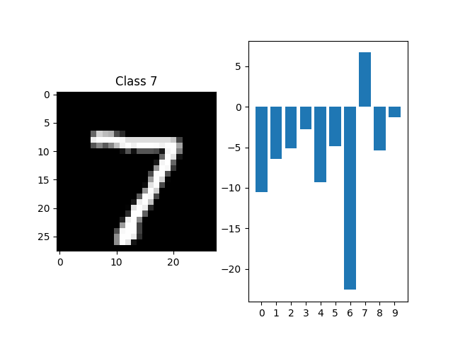

<!DOCTYPE html>
<html class="writer-html5" lang="en" >
<head>
  <meta charset="utf-8" /><meta name="generator" content="Docutils 0.17.1: http://docutils.sourceforge.net/" />

  <meta name="viewport" content="width=device-width, initial-scale=1.0" />
  <title>Global Akida workflow &mdash; Akida Examples  documentation</title>
      <link rel="stylesheet" href="../../_static/pygments.css" type="text/css" />
      <link rel="stylesheet" href="../../_static/css/theme.css" type="text/css" />
      <link rel="stylesheet" href="../../_static/sg_gallery.css" type="text/css" />
      <link rel="stylesheet" href="../../_static/sg_gallery-binder.css" type="text/css" />
      <link rel="stylesheet" href="../../_static/sg_gallery-dataframe.css" type="text/css" />
      <link rel="stylesheet" href="../../_static/sg_gallery-rendered-html.css" type="text/css" />
      <link rel="stylesheet" href="../../_static/design-style.1e8bd061cd6da7fc9cf755528e8ffc24.min.css" type="text/css" />
      <link rel="stylesheet" href="../../_static/custom.css" type="text/css" />
    <link rel="shortcut icon" href="../../_static/favicon.ico"/>
  <!--[if lt IE 9]>
    <script src="../../_static/js/html5shiv.min.js"></script>
  <![endif]-->
  
        <script data-url_root="../../" id="documentation_options" src="../../_static/documentation_options.js"></script>
        <script src="../../_static/jquery.js"></script>
        <script src="../../_static/underscore.js"></script>
        <script src="../../_static/doctools.js"></script>
        <script src="../../_static/design-tabs.js"></script>
    <script src="../../_static/js/theme.js"></script>
    <link rel="index" title="Index" href="../../genindex.html" />
    <link rel="search" title="Search" href="../../search.html" />
    <link rel="next" title="AkidaNet/ImageNet inference" href="plot_1_akidanet_imagenet.html" />
    <link rel="prev" title="Akida examples" href="../index.html" /> 
</head>

<body class="wy-body-for-nav"> 
  <div class="wy-grid-for-nav">
    <nav data-toggle="wy-nav-shift" class="wy-nav-side">
      <div class="wy-side-scroll">
        <div class="wy-side-nav-search"  style="background: #989898" >

          
          
          <a href="../../index.html">
            
              
          </a>
              <div class="version">
                Akida, 2nd Generation
              </div>
<div role="search">
  <form id="rtd-search-form" class="wy-form" action="../../search.html" method="get">
    <input type="text" name="q" placeholder="Search docs" aria-label="Search docs" />
    <input type="hidden" name="check_keywords" value="yes" />
    <input type="hidden" name="area" value="default" />
  </form>
</div>
        </div><div class="wy-menu wy-menu-vertical" data-spy="affix" role="navigation" aria-label="Navigation menu">
              <ul class="current">
<li class="toctree-l1"><a class="reference internal" href="../../index.html">Overview</a></li>
<li class="toctree-l1"><a class="reference internal" href="../../installation.html">Installation</a><ul>
<li class="toctree-l2"><a class="reference internal" href="../../installation.html#supported-configurations">Supported configurations</a></li>
<li class="toctree-l2"><a class="reference internal" href="../../installation.html#quick-installation">Quick installation</a></li>
<li class="toctree-l2"><a class="reference internal" href="../../installation.html#running-examples">Running examples</a></li>
</ul>
</li>
<li class="toctree-l1"><a class="reference internal" href="../../user_guide/user_guide.html">User guide</a><ul>
<li class="toctree-l2"><a class="reference internal" href="../../user_guide/akida.html">Akida user guide</a><ul>
<li class="toctree-l3"><a class="reference internal" href="../../user_guide/akida.html#overview">Overview</a></li>
<li class="toctree-l3"><a class="reference internal" href="../../user_guide/akida.html#programming-interface">Programming interface</a><ul>
<li class="toctree-l4"><a class="reference internal" href="../../user_guide/akida.html#the-akida-model">The Akida Model</a></li>
<li class="toctree-l4"><a class="reference internal" href="../../user_guide/akida.html#akida-layers">Akida layers</a></li>
</ul>
</li>
<li class="toctree-l3"><a class="reference internal" href="../../user_guide/akida.html#model-hardware-mapping">Model Hardware Mapping</a><ul>
<li class="toctree-l4"><a class="reference internal" href="../../user_guide/akida.html#devices">Devices</a></li>
<li class="toctree-l4"><a class="reference internal" href="../../user_guide/akida.html#model-mapping">Model mapping</a></li>
<li class="toctree-l4"><a class="reference internal" href="../../user_guide/akida.html#advanced-mapping-details-and-hardware-devices-usage">Advanced Mapping Details and Hardware Devices Usage</a></li>
<li class="toctree-l4"><a class="reference internal" href="../../user_guide/akida.html#performance-measurement">Performance measurement</a></li>
</ul>
</li>
<li class="toctree-l3"><a class="reference internal" href="../../user_guide/akida.html#using-akida-edge-learning">Using Akida Edge learning</a><ul>
<li class="toctree-l4"><a class="reference internal" href="../../user_guide/akida.html#learning-constraints">Learning constraints</a></li>
<li class="toctree-l4"><a class="reference internal" href="../../user_guide/akida.html#compiling-a-layer">Compiling a layer</a></li>
</ul>
</li>
</ul>
</li>
<li class="toctree-l2"><a class="reference internal" href="../../user_guide/quantizeml.html">QuantizeML toolkit</a><ul>
<li class="toctree-l3"><a class="reference internal" href="../../user_guide/quantizeml.html#overview">Overview</a></li>
<li class="toctree-l3"><a class="reference internal" href="../../user_guide/quantizeml.html#the-fixedpoint-representation">The FixedPoint representation</a></li>
<li class="toctree-l3"><a class="reference internal" href="../../user_guide/quantizeml.html#quantization-flow">Quantization flow</a><ul>
<li class="toctree-l4"><a class="reference internal" href="../../user_guide/quantizeml.html#compatibility-constraints">Compatibility constraints</a></li>
<li class="toctree-l4"><a class="reference internal" href="../../user_guide/quantizeml.html#model-loading">Model loading</a></li>
</ul>
</li>
<li class="toctree-l3"><a class="reference internal" href="../../user_guide/quantizeml.html#command-line-interface">Command line interface</a><ul>
<li class="toctree-l4"><a class="reference internal" href="../../user_guide/quantizeml.html#quantize-cli">quantize CLI</a></li>
<li class="toctree-l4"><a class="reference internal" href="../../user_guide/quantizeml.html#config-cli">config CLI</a></li>
<li class="toctree-l4"><a class="reference internal" href="../../user_guide/quantizeml.html#check-cli">check CLI</a></li>
<li class="toctree-l4"><a class="reference internal" href="../../user_guide/quantizeml.html#insert-rescaling-cli">insert_rescaling CLI</a></li>
</ul>
</li>
<li class="toctree-l3"><a class="reference internal" href="../../user_guide/quantizeml.html#supported-layer-types">Supported layer types</a><ul>
<li class="toctree-l4"><a class="reference internal" href="../../user_guide/quantizeml.html#keras-support">Keras support</a></li>
<li class="toctree-l4"><a class="reference internal" href="../../user_guide/quantizeml.html#onnx-support">ONNX support</a></li>
</ul>
</li>
</ul>
</li>
<li class="toctree-l2"><a class="reference internal" href="../../user_guide/cnn2snn.html">CNN2SNN toolkit</a><ul>
<li class="toctree-l3"><a class="reference internal" href="../../user_guide/cnn2snn.html#overview">Overview</a></li>
<li class="toctree-l3"><a class="reference internal" href="../../user_guide/cnn2snn.html#conversion-flow">Conversion flow</a><ul>
<li class="toctree-l4"><a class="reference internal" href="../../user_guide/cnn2snn.html#conversion-compatibility">Conversion compatibility</a></li>
<li class="toctree-l4"><a class="reference internal" href="../../user_guide/cnn2snn.html#command-line-interface">Command-line interface</a></li>
</ul>
</li>
<li class="toctree-l3"><a class="reference internal" href="../../user_guide/cnn2snn.html#handling-akida-1-0-and-akida-2-0-specificities">Handling Akida 1.0 and Akida 2.0 specificities</a></li>
<li class="toctree-l3"><a class="reference internal" href="../../user_guide/cnn2snn.html#legacy-quantization-api">Legacy quantization API</a><ul>
<li class="toctree-l4"><a class="reference internal" href="../../user_guide/cnn2snn.html#typical-quantization-scenario">Typical quantization scenario</a></li>
<li class="toctree-l4"><a class="reference internal" href="../../user_guide/cnn2snn.html#design-compatibility-constraints">Design compatibility constraints</a></li>
<li class="toctree-l4"><a class="reference internal" href="../../user_guide/cnn2snn.html#id3">Command-line interface</a></li>
<li class="toctree-l4"><a class="reference internal" href="../../user_guide/cnn2snn.html#layers-considerations">Layers Considerations</a></li>
<li class="toctree-l4"><a class="reference internal" href="../../user_guide/cnn2snn.html#tips-and-tricks">Tips and Tricks</a></li>
</ul>
</li>
</ul>
</li>
<li class="toctree-l2"><a class="reference internal" href="../../user_guide/akida_models.html">Akida models zoo</a><ul>
<li class="toctree-l3"><a class="reference internal" href="../../user_guide/akida_models.html#overview">Overview</a></li>
<li class="toctree-l3"><a class="reference internal" href="../../user_guide/akida_models.html#command-line-interface-for-model-creation">Command-line interface for model creation</a></li>
<li class="toctree-l3"><a class="reference internal" href="../../user_guide/akida_models.html#command-line-interface-for-model-training">Command-line interface for model training</a><ul>
<li class="toctree-l4"><a class="reference internal" href="../../user_guide/akida_models.html#kws-training">KWS training</a></li>
<li class="toctree-l4"><a class="reference internal" href="../../user_guide/akida_models.html#akidanet-training">AkidaNet training</a></li>
</ul>
</li>
<li class="toctree-l3"><a class="reference internal" href="../../user_guide/akida_models.html#command-line-interface-for-model-evaluation">Command-line interface for model evaluation</a></li>
<li class="toctree-l3"><a class="reference internal" href="../../user_guide/akida_models.html#command-line-interface-to-evaluate-model-macs">Command-line interface to evaluate model MACS</a></li>
<li class="toctree-l3"><a class="reference internal" href="../../user_guide/akida_models.html#id1">Layer Blocks</a></li>
<li class="toctree-l3"><a class="reference internal" href="../../user_guide/akida_models.html#handling-akida-1-0-and-akida-2-0-specificities">Handling Akida 1.0 and Akida 2.0 specificities</a></li>
</ul>
</li>
<li class="toctree-l2"><a class="reference internal" href="../../user_guide/engine.html">Akida Engine</a><ul>
<li class="toctree-l3"><a class="reference internal" href="../../user_guide/engine.html#overview">Overview</a></li>
<li class="toctree-l3"><a class="reference internal" href="../../user_guide/engine.html#engine-directory-structure">Engine directory structure</a></li>
<li class="toctree-l3"><a class="reference internal" href="../../user_guide/engine.html#engine-api-overview">Engine API overview</a><ul>
<li class="toctree-l4"><a class="reference internal" href="../../user_guide/engine.html#hardwaredriver">HardwareDriver</a></li>
<li class="toctree-l4"><a class="reference internal" href="../../user_guide/engine.html#hardwaredevice">HardwareDevice</a></li>
<li class="toctree-l4"><a class="reference internal" href="../../user_guide/engine.html#dense">Dense</a></li>
<li class="toctree-l4"><a class="reference internal" href="../../user_guide/engine.html#shape">Shape</a></li>
<li class="toctree-l4"><a class="reference internal" href="../../user_guide/engine.html#hwversion">HwVersion</a></li>
<li class="toctree-l4"><a class="reference internal" href="../../user_guide/engine.html#sparse-and-input-conversion-functions">Sparse and Input conversion functions</a></li>
<li class="toctree-l4"><a class="reference internal" href="../../user_guide/engine.html#other-headers-in-the-api">Other headers in the API</a></li>
</ul>
</li>
</ul>
</li>
</ul>
</li>
<li class="toctree-l1"><a class="reference internal" href="../../api_reference/api_reference.html">API reference</a><ul>
<li class="toctree-l2"><a class="reference internal" href="../../api_reference/akida_apis.html">Akida runtime</a><ul>
<li class="toctree-l3"><a class="reference internal" href="../../api_reference/akida_apis.html#model">Model</a></li>
<li class="toctree-l3"><a class="reference internal" href="../../api_reference/akida_apis.html#layer">Layer</a><ul>
<li class="toctree-l4"><a class="reference internal" href="../../api_reference/akida_apis.html#id1">Layer</a></li>
<li class="toctree-l4"><a class="reference internal" href="../../api_reference/akida_apis.html#mapping">Mapping</a></li>
</ul>
</li>
<li class="toctree-l3"><a class="reference internal" href="../../api_reference/akida_apis.html#akida-layers">Akida layers</a></li>
<li class="toctree-l3"><a class="reference internal" href="../../api_reference/akida_apis.html#akida-v1-layers">Akida V1 layers</a></li>
<li class="toctree-l3"><a class="reference internal" href="../../api_reference/akida_apis.html#akida-v2-layers">Akida V2 layers</a></li>
<li class="toctree-l3"><a class="reference internal" href="../../api_reference/akida_apis.html#layer-parameters">Layer parameters</a><ul>
<li class="toctree-l4"><a class="reference internal" href="../../api_reference/akida_apis.html#layertype">LayerType</a></li>
<li class="toctree-l4"><a class="reference internal" href="../../api_reference/akida_apis.html#padding">Padding</a></li>
<li class="toctree-l4"><a class="reference internal" href="../../api_reference/akida_apis.html#pooltype">PoolType</a></li>
</ul>
</li>
<li class="toctree-l3"><a class="reference internal" href="../../api_reference/akida_apis.html#optimizers">Optimizers</a></li>
<li class="toctree-l3"><a class="reference internal" href="../../api_reference/akida_apis.html#sequence">Sequence</a><ul>
<li class="toctree-l4"><a class="reference internal" href="../../api_reference/akida_apis.html#id2">Sequence</a></li>
<li class="toctree-l4"><a class="reference internal" href="../../api_reference/akida_apis.html#backendtype">BackendType</a></li>
<li class="toctree-l4"><a class="reference internal" href="../../api_reference/akida_apis.html#pass">Pass</a></li>
</ul>
</li>
<li class="toctree-l3"><a class="reference internal" href="../../api_reference/akida_apis.html#device">Device</a><ul>
<li class="toctree-l4"><a class="reference internal" href="../../api_reference/akida_apis.html#id3">Device</a></li>
<li class="toctree-l4"><a class="reference internal" href="../../api_reference/akida_apis.html#hwversion">HwVersion</a></li>
</ul>
</li>
<li class="toctree-l3"><a class="reference internal" href="../../api_reference/akida_apis.html#hwdevice">HWDevice</a><ul>
<li class="toctree-l4"><a class="reference internal" href="../../api_reference/akida_apis.html#id4">HWDevice</a></li>
<li class="toctree-l4"><a class="reference internal" href="../../api_reference/akida_apis.html#socdriver">SocDriver</a></li>
<li class="toctree-l4"><a class="reference internal" href="../../api_reference/akida_apis.html#clockmode">ClockMode</a></li>
</ul>
</li>
<li class="toctree-l3"><a class="reference internal" href="../../api_reference/akida_apis.html#powermeter">PowerMeter</a></li>
<li class="toctree-l3"><a class="reference internal" href="../../api_reference/akida_apis.html#np">NP</a></li>
<li class="toctree-l3"><a class="reference internal" href="../../api_reference/akida_apis.html#tools">Tools</a><ul>
<li class="toctree-l4"><a class="reference internal" href="../../api_reference/akida_apis.html#sparsity">Sparsity</a></li>
</ul>
</li>
</ul>
</li>
<li class="toctree-l2"><a class="reference internal" href="../../api_reference/cnn2snn_apis.html">CNN2SNN</a><ul>
<li class="toctree-l3"><a class="reference internal" href="../../api_reference/cnn2snn_apis.html#akida-version">Akida version</a></li>
<li class="toctree-l3"><a class="reference internal" href="../../api_reference/cnn2snn_apis.html#conversion">Conversion</a></li>
<li class="toctree-l3"><a class="reference internal" href="../../api_reference/cnn2snn_apis.html#legacy-quantization-api">Legacy quantization API</a><ul>
<li class="toctree-l4"><a class="reference internal" href="../../api_reference/cnn2snn_apis.html#utils">Utils</a></li>
<li class="toctree-l4"><a class="reference internal" href="../../api_reference/cnn2snn_apis.html#calibration">Calibration</a></li>
<li class="toctree-l4"><a class="reference internal" href="../../api_reference/cnn2snn_apis.html#transforms">Transforms</a></li>
<li class="toctree-l4"><a class="reference internal" href="../../api_reference/cnn2snn_apis.html#constraint">Constraint</a></li>
<li class="toctree-l4"><a class="reference internal" href="../../api_reference/cnn2snn_apis.html#quantization">Quantization</a></li>
<li class="toctree-l4"><a class="reference internal" href="../../api_reference/cnn2snn_apis.html#quantizers">Quantizers</a></li>
<li class="toctree-l4"><a class="reference internal" href="../../api_reference/cnn2snn_apis.html#quantized-layers">Quantized layers</a></li>
</ul>
</li>
</ul>
</li>
<li class="toctree-l2"><a class="reference internal" href="../../api_reference/quantizeml_apis.html">QuantizeML</a><ul>
<li class="toctree-l3"><a class="reference internal" href="../../api_reference/quantizeml_apis.html#layers">Layers</a><ul>
<li class="toctree-l4"><a class="reference internal" href="../../api_reference/quantizeml_apis.html#reshaping">Reshaping</a></li>
<li class="toctree-l4"><a class="reference internal" href="../../api_reference/quantizeml_apis.html#activations">Activations</a></li>
<li class="toctree-l4"><a class="reference internal" href="../../api_reference/quantizeml_apis.html#attention">Attention</a></li>
<li class="toctree-l4"><a class="reference internal" href="../../api_reference/quantizeml_apis.html#normalization">Normalization</a></li>
<li class="toctree-l4"><a class="reference internal" href="../../api_reference/quantizeml_apis.html#convolution">Convolution</a></li>
<li class="toctree-l4"><a class="reference internal" href="../../api_reference/quantizeml_apis.html#depthwise-convolution">Depthwise convolution</a></li>
<li class="toctree-l4"><a class="reference internal" href="../../api_reference/quantizeml_apis.html#separable-convolution">Separable convolution</a></li>
<li class="toctree-l4"><a class="reference internal" href="../../api_reference/quantizeml_apis.html#dense">Dense</a></li>
<li class="toctree-l4"><a class="reference internal" href="../../api_reference/quantizeml_apis.html#skip-connection">Skip connection</a></li>
<li class="toctree-l4"><a class="reference internal" href="../../api_reference/quantizeml_apis.html#pooling">Pooling</a></li>
<li class="toctree-l4"><a class="reference internal" href="../../api_reference/quantizeml_apis.html#shiftmax">Shiftmax</a></li>
<li class="toctree-l4"><a class="reference internal" href="../../api_reference/quantizeml_apis.html#transformers">Transformers</a></li>
<li class="toctree-l4"><a class="reference internal" href="../../api_reference/quantizeml_apis.html#rescaling">Rescaling</a></li>
<li class="toctree-l4"><a class="reference internal" href="../../api_reference/quantizeml_apis.html#dropout">Dropout</a></li>
<li class="toctree-l4"><a class="reference internal" href="../../api_reference/quantizeml_apis.html#quantizers">Quantizers</a></li>
<li class="toctree-l4"><a class="reference internal" href="../../api_reference/quantizeml_apis.html#calibration">Calibration</a></li>
<li class="toctree-l4"><a class="reference internal" href="../../api_reference/quantizeml_apis.html#recording">Recording</a></li>
</ul>
</li>
<li class="toctree-l3"><a class="reference internal" href="../../api_reference/quantizeml_apis.html#models">Models</a><ul>
<li class="toctree-l4"><a class="reference internal" href="../../api_reference/quantizeml_apis.html#transforms">Transforms</a></li>
<li class="toctree-l4"><a class="reference internal" href="../../api_reference/quantizeml_apis.html#quantization">Quantization</a></li>
<li class="toctree-l4"><a class="reference internal" href="../../api_reference/quantizeml_apis.html#quantization-parameters">Quantization parameters</a></li>
<li class="toctree-l4"><a class="reference internal" href="../../api_reference/quantizeml_apis.html#id1">Calibration</a></li>
<li class="toctree-l4"><a class="reference internal" href="../../api_reference/quantizeml_apis.html#utils">Utils</a></li>
</ul>
</li>
<li class="toctree-l3"><a class="reference internal" href="../../api_reference/quantizeml_apis.html#tensors">Tensors</a><ul>
<li class="toctree-l4"><a class="reference internal" href="../../api_reference/quantizeml_apis.html#qtensor">QTensor</a></li>
<li class="toctree-l4"><a class="reference internal" href="../../api_reference/quantizeml_apis.html#fixedpoint">FixedPoint</a></li>
<li class="toctree-l4"><a class="reference internal" href="../../api_reference/quantizeml_apis.html#qfloat">QFloat</a></li>
</ul>
</li>
<li class="toctree-l3"><a class="reference internal" href="../../api_reference/quantizeml_apis.html#onnx-support">ONNX support</a><ul>
<li class="toctree-l4"><a class="reference internal" href="../../api_reference/quantizeml_apis.html#id2">Layers</a></li>
<li class="toctree-l4"><a class="reference internal" href="../../api_reference/quantizeml_apis.html#custom-patterns">Custom patterns</a></li>
</ul>
</li>
</ul>
</li>
<li class="toctree-l2"><a class="reference internal" href="../../api_reference/akida_models_apis.html">Akida models</a><ul>
<li class="toctree-l3"><a class="reference internal" href="../../api_reference/akida_models_apis.html#layer-blocks">Layer blocks</a><ul>
<li class="toctree-l4"><a class="reference internal" href="../../api_reference/akida_models_apis.html#cnn-blocks">CNN blocks</a></li>
<li class="toctree-l4"><a class="reference internal" href="../../api_reference/akida_models_apis.html#transformers-blocks">Transformers blocks</a></li>
<li class="toctree-l4"><a class="reference internal" href="../../api_reference/akida_models_apis.html#transposed-blocks">Transposed blocks</a></li>
<li class="toctree-l4"><a class="reference internal" href="../../api_reference/akida_models_apis.html#detection-block">Detection block</a></li>
</ul>
</li>
<li class="toctree-l3"><a class="reference internal" href="../../api_reference/akida_models_apis.html#helpers">Helpers</a><ul>
<li class="toctree-l4"><a class="reference internal" href="../../api_reference/akida_models_apis.html#gamma-constraint">Gamma constraint</a></li>
<li class="toctree-l4"><a class="reference internal" href="../../api_reference/akida_models_apis.html#unfusing-separableconvolutional">Unfusing SeparableConvolutional</a></li>
<li class="toctree-l4"><a class="reference internal" href="../../api_reference/akida_models_apis.html#extract-samples">Extract samples</a></li>
</ul>
</li>
<li class="toctree-l3"><a class="reference internal" href="../../api_reference/akida_models_apis.html#knowledge-distillation">Knowledge distillation</a></li>
<li class="toctree-l3"><a class="reference internal" href="../../api_reference/akida_models_apis.html#macs">MACS</a></li>
<li class="toctree-l3"><a class="reference internal" href="../../api_reference/akida_models_apis.html#model-i-o">Model I/O</a></li>
<li class="toctree-l3"><a class="reference internal" href="../../api_reference/akida_models_apis.html#utils">Utils</a></li>
<li class="toctree-l3"><a class="reference internal" href="../../api_reference/akida_models_apis.html#model-zoo">Model zoo</a><ul>
<li class="toctree-l4"><a class="reference internal" href="../../api_reference/akida_models_apis.html#akidanet">AkidaNet</a></li>
<li class="toctree-l4"><a class="reference internal" href="../../api_reference/akida_models_apis.html#mobilenet">Mobilenet</a></li>
<li class="toctree-l4"><a class="reference internal" href="../../api_reference/akida_models_apis.html#ds-cnn">DS-CNN</a></li>
<li class="toctree-l4"><a class="reference internal" href="../../api_reference/akida_models_apis.html#vgg">VGG</a></li>
<li class="toctree-l4"><a class="reference internal" href="../../api_reference/akida_models_apis.html#yolo">YOLO</a></li>
<li class="toctree-l4"><a class="reference internal" href="../../api_reference/akida_models_apis.html#pointnet">PointNet++</a></li>
<li class="toctree-l4"><a class="reference internal" href="../../api_reference/akida_models_apis.html#gxnor">GXNOR</a></li>
<li class="toctree-l4"><a class="reference internal" href="../../api_reference/akida_models_apis.html#centernet">CenterNet</a></li>
<li class="toctree-l4"><a class="reference internal" href="../../api_reference/akida_models_apis.html#akidaunet">AkidaUNet</a></li>
<li class="toctree-l4"><a class="reference internal" href="../../api_reference/akida_models_apis.html#transformers">Transformers</a></li>
</ul>
</li>
</ul>
</li>
</ul>
</li>
<li class="toctree-l1 current"><a class="reference internal" href="../index.html">Examples</a><ul class="current">
<li class="toctree-l2 current"><a class="reference internal" href="../index.html#general-examples">General examples</a><ul class="current">
<li class="toctree-l3 current"><a class="current reference internal" href="#">Global Akida workflow</a><ul>
<li class="toctree-l4"><a class="reference internal" href="#create-and-train">1. Create and train</a></li>
<li class="toctree-l4"><a class="reference internal" href="#quantize">2. Quantize</a></li>
<li class="toctree-l4"><a class="reference internal" href="#convert">3. Convert</a></li>
<li class="toctree-l4"><a class="reference internal" href="#gxnor-mnist">4. GXNOR/MNIST</a></li>
</ul>
</li>
<li class="toctree-l3"><a class="reference internal" href="plot_1_akidanet_imagenet.html">AkidaNet/ImageNet inference</a><ul>
<li class="toctree-l4"><a class="reference internal" href="plot_1_akidanet_imagenet.html#dataset-preparation">1. Dataset preparation</a></li>
<li class="toctree-l4"><a class="reference internal" href="plot_1_akidanet_imagenet.html#pretrained-quantized-model">2. Pretrained quantized model</a></li>
<li class="toctree-l4"><a class="reference internal" href="plot_1_akidanet_imagenet.html#conversion-to-akida">3. Conversion to Akida</a></li>
<li class="toctree-l4"><a class="reference internal" href="plot_1_akidanet_imagenet.html#hardware-mapping-and-performance">4. Hardware mapping and performance</a></li>
</ul>
</li>
<li class="toctree-l3"><a class="reference internal" href="plot_2_ds_cnn_kws.html">DS-CNN/KWS inference</a><ul>
<li class="toctree-l4"><a class="reference internal" href="plot_2_ds_cnn_kws.html#load-the-preprocessed-dataset">1. Load the preprocessed dataset</a></li>
<li class="toctree-l4"><a class="reference internal" href="plot_2_ds_cnn_kws.html#load-a-pre-trained-native-keras-model">2. Load a pre-trained native Keras model</a></li>
<li class="toctree-l4"><a class="reference internal" href="plot_2_ds_cnn_kws.html#load-a-pre-trained-quantized-keras-model">3. Load a pre-trained quantized Keras model</a></li>
<li class="toctree-l4"><a class="reference internal" href="plot_2_ds_cnn_kws.html#conversion-to-akida">4. Conversion to Akida</a></li>
<li class="toctree-l4"><a class="reference internal" href="plot_2_ds_cnn_kws.html#confusion-matrix">5. Confusion matrix</a></li>
</ul>
</li>
<li class="toctree-l3"><a class="reference internal" href="plot_3_regression.html">Age estimation (regression) example</a><ul>
<li class="toctree-l4"><a class="reference internal" href="plot_3_regression.html#load-the-utkface-dataset">1. Load the UTKFace Dataset</a></li>
<li class="toctree-l4"><a class="reference internal" href="plot_3_regression.html#load-a-pre-trained-native-keras-model">2. Load a pre-trained native Keras model</a></li>
<li class="toctree-l4"><a class="reference internal" href="plot_3_regression.html#load-a-pre-trained-quantized-keras-model">3. Load a pre-trained quantized Keras model</a></li>
<li class="toctree-l4"><a class="reference internal" href="plot_3_regression.html#conversion-to-akida">4. Conversion to Akida</a></li>
<li class="toctree-l4"><a class="reference internal" href="plot_3_regression.html#estimate-age-on-a-single-image">5. Estimate age on a single image</a></li>
</ul>
</li>
<li class="toctree-l3"><a class="reference internal" href="plot_4_transfer_learning.html">Transfer learning with AkidaNet for PlantVillage</a><ul>
<li class="toctree-l4"><a class="reference internal" href="plot_4_transfer_learning.html#transfer-learning-process">Transfer learning process</a></li>
<li class="toctree-l4"><a class="reference internal" href="plot_4_transfer_learning.html#dataset-preparation">1. Dataset preparation</a></li>
<li class="toctree-l4"><a class="reference internal" href="plot_4_transfer_learning.html#get-a-trained-akidanet-base-model">2. Get a trained AkidaNet base model</a></li>
<li class="toctree-l4"><a class="reference internal" href="plot_4_transfer_learning.html#add-a-classification-head-to-the-model">3. Add a classification head to the model</a></li>
<li class="toctree-l4"><a class="reference internal" href="plot_4_transfer_learning.html#train-for-a-few-epochs">4. Train for a few epochs</a></li>
<li class="toctree-l4"><a class="reference internal" href="plot_4_transfer_learning.html#quantize-the-model">5. Quantize the model</a></li>
<li class="toctree-l4"><a class="reference internal" href="plot_4_transfer_learning.html#compute-accuracy">6. Compute accuracy</a></li>
</ul>
</li>
<li class="toctree-l3"><a class="reference internal" href="plot_5_voc_yolo_detection.html">YOLO/PASCAL-VOC detection tutorial</a><ul>
<li class="toctree-l4"><a class="reference internal" href="plot_5_voc_yolo_detection.html#introduction">1. Introduction</a></li>
<li class="toctree-l4"><a class="reference internal" href="plot_5_voc_yolo_detection.html#preprocessing-tools">2. Preprocessing tools</a></li>
<li class="toctree-l4"><a class="reference internal" href="plot_5_voc_yolo_detection.html#model-architecture">3. Model architecture</a></li>
<li class="toctree-l4"><a class="reference internal" href="plot_5_voc_yolo_detection.html#training">4. Training</a></li>
<li class="toctree-l4"><a class="reference internal" href="plot_5_voc_yolo_detection.html#performance">5. Performance</a></li>
<li class="toctree-l4"><a class="reference internal" href="plot_5_voc_yolo_detection.html#conversion-to-akida">6. Conversion to Akida</a></li>
</ul>
</li>
<li class="toctree-l3"><a class="reference internal" href="plot_6_segmentation.html">Segmentation tutorial</a><ul>
<li class="toctree-l4"><a class="reference internal" href="plot_6_segmentation.html#load-the-dataset">1. Load the dataset</a></li>
<li class="toctree-l4"><a class="reference internal" href="plot_6_segmentation.html#load-a-pre-trained-native-keras-model">2. Load a pre-trained native Keras model</a></li>
<li class="toctree-l4"><a class="reference internal" href="plot_6_segmentation.html#load-a-pre-trained-quantized-keras-model">3. Load a pre-trained quantized Keras model</a></li>
<li class="toctree-l4"><a class="reference internal" href="plot_6_segmentation.html#conversion-to-akida">4. Conversion to Akida</a></li>
<li class="toctree-l4"><a class="reference internal" href="plot_6_segmentation.html#segment-a-single-image">5. Segment a single image</a></li>
</ul>
</li>
<li class="toctree-l3"><a class="reference internal" href="plot_7_vision_transformer.html">Build Vision Transformers for Akida</a><ul>
<li class="toctree-l4"><a class="reference internal" href="plot_7_vision_transformer.html#model-selection">1. Model selection</a></li>
<li class="toctree-l4"><a class="reference internal" href="plot_7_vision_transformer.html#model-optimization-for-akida-hardware">2. Model optimization for Akida hardware</a></li>
<li class="toctree-l4"><a class="reference internal" href="plot_7_vision_transformer.html#model-training">3. Model Training</a></li>
<li class="toctree-l4"><a class="reference internal" href="plot_7_vision_transformer.html#model-quantization">4. Model quantization</a></li>
<li class="toctree-l4"><a class="reference internal" href="plot_7_vision_transformer.html#conversion-to-akida">5. Conversion to Akida</a></li>
<li class="toctree-l4"><a class="reference internal" href="plot_7_vision_transformer.html#displaying-results-attention-maps">6. Displaying results Attention Maps</a></li>
</ul>
</li>
<li class="toctree-l3"><a class="reference internal" href="plot_8_global_pytorch_workflow.html">PyTorch to Akida workflow</a><ul>
<li class="toctree-l4"><a class="reference internal" href="plot_8_global_pytorch_workflow.html#create-and-train">1. Create and train</a></li>
<li class="toctree-l4"><a class="reference internal" href="plot_8_global_pytorch_workflow.html#export">2. Export</a></li>
<li class="toctree-l4"><a class="reference internal" href="plot_8_global_pytorch_workflow.html#quantize">3. Quantize</a></li>
<li class="toctree-l4"><a class="reference internal" href="plot_8_global_pytorch_workflow.html#convert">4. Convert</a></li>
</ul>
</li>
</ul>
</li>
<li class="toctree-l2"><a class="reference internal" href="../index.html#quantization">Quantization</a><ul>
<li class="toctree-l3"><a class="reference internal" href="../quantization/plot_0_advanced_quantizeml.html">Advanced QuantizeML tutorial</a><ul>
<li class="toctree-l4"><a class="reference internal" href="../quantization/plot_0_advanced_quantizeml.html#defining-a-quantization-scheme">1. Defining a quantization scheme</a></li>
<li class="toctree-l4"><a class="reference internal" href="../quantization/plot_0_advanced_quantizeml.html#calibration">2. Calibration</a></li>
</ul>
</li>
<li class="toctree-l3"><a class="reference internal" href="../quantization/plot_1_upgrading_to_2.0.html">Upgrading to Akida 2.0</a><ul>
<li class="toctree-l4"><a class="reference internal" href="../quantization/plot_1_upgrading_to_2.0.html#workflow-differences">1. Workflow differences</a></li>
<li class="toctree-l4"><a class="reference internal" href="../quantization/plot_1_upgrading_to_2.0.html#models-architecture-differences">2. Models architecture differences</a></li>
<li class="toctree-l4"><a class="reference internal" href="../quantization/plot_1_upgrading_to_2.0.html#using-akidaversion">3. Using <code class="docutils literal notranslate"><span class="pre">AkidaVersion</span></code></a></li>
</ul>
</li>
<li class="toctree-l3"><a class="reference internal" href="../quantization/plot_2_off_the_shelf_quantization.html">Off-the-shelf models quantization</a><ul>
<li class="toctree-l4"><a class="reference internal" href="../quantization/plot_2_off_the_shelf_quantization.html#workflow-overview">1. Workflow overview</a></li>
<li class="toctree-l4"><a class="reference internal" href="../quantization/plot_2_off_the_shelf_quantization.html#data-preparation">2. Data preparation</a></li>
<li class="toctree-l4"><a class="reference internal" href="../quantization/plot_2_off_the_shelf_quantization.html#download-and-export">3. Download and export</a></li>
<li class="toctree-l4"><a class="reference internal" href="../quantization/plot_2_off_the_shelf_quantization.html#quantize">4. Quantize</a></li>
</ul>
</li>
<li class="toctree-l3"><a class="reference internal" href="../quantization/plot_3_custom_patterns.html">Advanced ONNX models quantization</a><ul>
<li class="toctree-l4"><a class="reference internal" href="../quantization/plot_3_custom_patterns.html#get-model-and-data">1. Get model and data</a></li>
<li class="toctree-l4"><a class="reference internal" href="../quantization/plot_3_custom_patterns.html#quantize">2. Quantize</a></li>
<li class="toctree-l4"><a class="reference internal" href="../quantization/plot_3_custom_patterns.html#conversion">3. Conversion</a></li>
</ul>
</li>
</ul>
</li>
<li class="toctree-l2"><a class="reference internal" href="../index.html#edge-examples">Edge examples</a><ul>
<li class="toctree-l3"><a class="reference internal" href="../edge/plot_0_edge_learning_vision.html">Akida vision edge learning</a><ul>
<li class="toctree-l4"><a class="reference internal" href="../edge/plot_0_edge_learning_vision.html#dataset-preparation">1. Dataset preparation</a></li>
<li class="toctree-l4"><a class="reference internal" href="../edge/plot_0_edge_learning_vision.html#prepare-akida-model-for-learning">2. Prepare Akida model for learning</a></li>
<li class="toctree-l4"><a class="reference internal" href="../edge/plot_0_edge_learning_vision.html#edge-learning-with-akida">3. Edge learning with Akida</a></li>
</ul>
</li>
<li class="toctree-l3"><a class="reference internal" href="../edge/plot_1_edge_learning_kws.html">Akida edge learning for keyword spotting</a><ul>
<li class="toctree-l4"><a class="reference internal" href="../edge/plot_1_edge_learning_kws.html#edge-learning-process">1. Edge learning process</a></li>
<li class="toctree-l4"><a class="reference internal" href="../edge/plot_1_edge_learning_kws.html#dataset-preparation">2. Dataset preparation</a></li>
<li class="toctree-l4"><a class="reference internal" href="../edge/plot_1_edge_learning_kws.html#prepare-akida-model-for-learning">3. Prepare Akida model for learning</a></li>
<li class="toctree-l4"><a class="reference internal" href="../edge/plot_1_edge_learning_kws.html#learn-with-akida-using-the-training-set">4. Learn with Akida using the training set</a></li>
<li class="toctree-l4"><a class="reference internal" href="../edge/plot_1_edge_learning_kws.html#edge-learning">5. Edge learning</a></li>
</ul>
</li>
<li class="toctree-l3"><a class="reference internal" href="../edge/plot_2_edge_learning_parameters.html">Tips to set Akida edge learning parameters</a><ul>
<li class="toctree-l4"><a class="reference internal" href="../edge/plot_2_edge_learning_parameters.html#akida-learning-parameters">1. Akida learning parameters</a></li>
<li class="toctree-l4"><a class="reference internal" href="../edge/plot_2_edge_learning_parameters.html#create-akida-model">2. Create Akida model</a></li>
<li class="toctree-l4"><a class="reference internal" href="../edge/plot_2_edge_learning_parameters.html#estimate-the-required-number-of-weights-of-the-trainable-layer">3. Estimate the required number of weights of the trainable layer</a></li>
<li class="toctree-l4"><a class="reference internal" href="../edge/plot_2_edge_learning_parameters.html#estimate-the-number-of-neurons-per-class">4. Estimate the number of neurons per class</a></li>
</ul>
</li>
</ul>
</li>
<li class="toctree-l2"><a class="reference internal" href="../index.html#deprecated-cnn2snn-tutorials">[Deprecated] CNN2SNN tutorials</a><ul>
<li class="toctree-l3"><a class="reference internal" href="../cnn2snn/plot_1_advanced_cnn2snn.html">Advanced CNN2SNN tutorial</a><ul>
<li class="toctree-l4"><a class="reference internal" href="../cnn2snn/plot_1_advanced_cnn2snn.html#design-a-cnn2snn-quantized-model">1. Design a CNN2SNN quantized model</a></li>
<li class="toctree-l4"><a class="reference internal" href="../cnn2snn/plot_1_advanced_cnn2snn.html#weight-quantizer-details">2. Weight Quantizer Details</a></li>
<li class="toctree-l4"><a class="reference internal" href="../cnn2snn/plot_1_advanced_cnn2snn.html#understanding-quantized-activation">3. Understanding quantized activation</a></li>
<li class="toctree-l4"><a class="reference internal" href="../cnn2snn/plot_1_advanced_cnn2snn.html#how-to-deal-with-too-high-scale-factors">4. How to deal with too high scale factors</a></li>
</ul>
</li>
</ul>
</li>
</ul>
</li>
<li class="toctree-l1"><a class="reference internal" href="../../model_zoo_performance.html">Model zoo performance</a><ul>
<li class="toctree-l2"><a class="reference internal" href="../../model_zoo_performance.html#akida-1-0-models">Akida 1.0 models</a><ul>
<li class="toctree-l3"><a class="reference internal" href="../../model_zoo_performance.html#image-icon-ref-image-domain"> Image domain</a><ul>
<li class="toctree-l4"><a class="reference internal" href="../../model_zoo_performance.html#classification">Classification</a></li>
<li class="toctree-l4"><a class="reference internal" href="../../model_zoo_performance.html#object-detection">Object detection</a></li>
<li class="toctree-l4"><a class="reference internal" href="../../model_zoo_performance.html#regression">Regression</a></li>
<li class="toctree-l4"><a class="reference internal" href="../../model_zoo_performance.html#face-recognition">Face recognition</a></li>
</ul>
</li>
<li class="toctree-l3"><a class="reference internal" href="../../model_zoo_performance.html#audio-icon-ref-audio-domain"> Audio domain</a><ul>
<li class="toctree-l4"><a class="reference internal" href="../../model_zoo_performance.html#keyword-spotting">Keyword spotting</a></li>
</ul>
</li>
<li class="toctree-l3"><a class="reference internal" href="../../model_zoo_performance.html#pointcloud-icon-ref-point-cloud"> Point cloud</a><ul>
<li class="toctree-l4"><a class="reference internal" href="../../model_zoo_performance.html#id1">Classification</a></li>
</ul>
</li>
</ul>
</li>
<li class="toctree-l2"><a class="reference internal" href="../../model_zoo_performance.html#akida-2-0-models">Akida 2.0 models</a><ul>
<li class="toctree-l3"><a class="reference internal" href="../../model_zoo_performance.html#id2"> Image domain</a><ul>
<li class="toctree-l4"><a class="reference internal" href="../../model_zoo_performance.html#id3">Classification</a></li>
<li class="toctree-l4"><a class="reference internal" href="../../model_zoo_performance.html#id6">Object detection</a></li>
<li class="toctree-l4"><a class="reference internal" href="../../model_zoo_performance.html#id7">Regression</a></li>
<li class="toctree-l4"><a class="reference internal" href="../../model_zoo_performance.html#id8">Face recognition</a></li>
<li class="toctree-l4"><a class="reference internal" href="../../model_zoo_performance.html#segmentation">Segmentation</a></li>
</ul>
</li>
<li class="toctree-l3"><a class="reference internal" href="../../model_zoo_performance.html#id10"> Audio domain</a><ul>
<li class="toctree-l4"><a class="reference internal" href="../../model_zoo_performance.html#id11">Keyword spotting</a></li>
</ul>
</li>
<li class="toctree-l3"><a class="reference internal" href="../../model_zoo_performance.html#id12"> Point cloud</a><ul>
<li class="toctree-l4"><a class="reference internal" href="../../model_zoo_performance.html#id13">Classification</a></li>
</ul>
</li>
</ul>
</li>
</ul>
</li>
<li class="toctree-l1"><a class="reference internal" href="../../changelog.html">Changelog</a></li>
<li class="toctree-l1"><a class="reference external" href="https://support.brainchip.com/portal/home">Support</a></li>
<li class="toctree-l1"><a class="reference internal" href="../../license.html">License</a></li>
</ul>

        </div>
      </div>
    </nav>

    <section data-toggle="wy-nav-shift" class="wy-nav-content-wrap"><nav class="wy-nav-top" aria-label="Mobile navigation menu"  style="background: #989898" >
          <i data-toggle="wy-nav-top" class="fa fa-bars"></i>
          <a href="../../index.html">Akida Examples</a>
      </nav>

      <div class="wy-nav-content">
        <div class="rst-content">
          <div role="navigation" aria-label="Page navigation">
  <ul class="wy-breadcrumbs">
      <li><a href="../../index.html" class="icon icon-home" aria-label="Home"></a></li>
          <li class="breadcrumb-item"><a href="../index.html">Akida examples</a></li>
      <li class="breadcrumb-item active">Global Akida workflow</li>
      <li class="wy-breadcrumbs-aside">
      </li>
  </ul>
  <hr/>
</div>
          <div role="main" class="document" itemscope="itemscope" itemtype="http://schema.org/Article">
           <div itemprop="articleBody">
             
  <div class="sphx-glr-download-link-note admonition note">
<p class="admonition-title">Note</p>
<p><a class="reference internal" href="#sphx-glr-download-examples-general-plot-0-global-workflow-py"><span class="std std-ref">Go to the end</span></a>
to download the full example code</p>
</div>
<section class="sphx-glr-example-title" id="global-akida-workflow">
<span id="sphx-glr-examples-general-plot-0-global-workflow-py"></span><h1>Global Akida workflow<a class="headerlink" href="#global-akida-workflow" title="Permalink to this headline"></a></h1>
<p>Using the MNIST dataset, this example shows the definition and training of a keras
floating point model, its quantization to 8-bit with the help of calibration,
its quantization to 4-bit using QAT and its conversion to Akida.
Notice that the performance of the original keras floating point model is maintained
throughout the Akida flow.
Please refer to the <a class="reference external" href="../../user_guide/akida.html">Akida user guide</a> for further information.</p>
<div class="admonition note">
<p class="admonition-title">Note</p>
<p>Please refer to the TensorFlow  <a class="reference external" href="https://www.tensorflow.org/api_docs/python/tf/keras/models">tf.keras.models</a>
module for model creation/import details and the <a class="reference external" href="https://www.tensorflow.org/guide">TensorFlow Guide</a> for TensorFlow usage.</p>
<p>The MNIST example below is light enough so that a <a class="reference external" href="https://www.tensorflow.org/install/gpu">GPU</a> is not needed for training.</p>
</div>
<figure class="align-center" id="id2">
<a class="reference external image-reference" href="../../_images/overall_flow.png"></a>
<figcaption>
<p><span class="caption-text">Global Akida workflow</span><a class="headerlink" href="#id2" title="Permalink to this image"></a></p>
</figcaption>
</figure>
<section id="create-and-train">
<h2>1. Create and train<a class="headerlink" href="#create-and-train" title="Permalink to this headline"></a></h2>
<section id="load-and-reshape-mnist-dataset">
<h3>1.1. Load and reshape MNIST dataset<a class="headerlink" href="#load-and-reshape-mnist-dataset" title="Permalink to this headline"></a></h3>
<div class="highlight-Python notranslate"><div class="highlight"><pre><span></span><span class="kn">import</span> <span class="nn">numpy</span> <span class="k">as</span> <span class="nn">np</span>

<span class="kn">import</span> <span class="nn">matplotlib.cm</span> <span class="k">as</span> <span class="nn">cm</span>
<span class="kn">import</span> <span class="nn">matplotlib.pyplot</span> <span class="k">as</span> <span class="nn">plt</span>

<span class="kn">from</span> <span class="nn">keras.datasets</span> <span class="kn">import</span> <span class="n">mnist</span>

<span class="c1"># Load MNIST dataset</span>
<span class="p">(</span><span class="n">x_train</span><span class="p">,</span> <span class="n">y_train</span><span class="p">),</span> <span class="p">(</span><span class="n">x_test</span><span class="p">,</span> <span class="n">y_test</span><span class="p">)</span> <span class="o">=</span> <span class="n">mnist</span><span class="o">.</span><span class="n">load_data</span><span class="p">()</span>

<span class="c1"># Add a channels dimension to the image sets as Akida expects 4-D inputs (corresponding to</span>
<span class="c1"># (num_samples, width, height, channels). Note: MNIST is a grayscale dataset and is unusual</span>
<span class="c1"># in this respect - most image data already includes a channel dimension, and this step will</span>
<span class="c1"># not be necessary.</span>
<span class="n">x_train</span> <span class="o">=</span> <span class="n">np</span><span class="o">.</span><span class="n">expand_dims</span><span class="p">(</span><span class="n">x_train</span><span class="p">,</span> <span class="o">-</span><span class="mi">1</span><span class="p">)</span>
<span class="n">x_test</span> <span class="o">=</span> <span class="n">np</span><span class="o">.</span><span class="n">expand_dims</span><span class="p">(</span><span class="n">x_test</span><span class="p">,</span> <span class="o">-</span><span class="mi">1</span><span class="p">)</span>

<span class="c1"># Display a few images from the test set</span>
<span class="n">f</span><span class="p">,</span> <span class="n">axarr</span> <span class="o">=</span> <span class="n">plt</span><span class="o">.</span><span class="n">subplots</span><span class="p">(</span><span class="mi">1</span><span class="p">,</span> <span class="mi">4</span><span class="p">)</span>
<span class="k">for</span> <span class="n">i</span> <span class="ow">in</span> <span class="nb">range</span><span class="p">(</span><span class="mi">0</span><span class="p">,</span> <span class="mi">4</span><span class="p">):</span>
    <span class="n">axarr</span><span class="p">[</span><span class="n">i</span><span class="p">]</span><span class="o">.</span><span class="n">imshow</span><span class="p">(</span><span class="n">x_test</span><span class="p">[</span><span class="n">i</span><span class="p">]</span><span class="o">.</span><span class="n">reshape</span><span class="p">((</span><span class="mi">28</span><span class="p">,</span> <span class="mi">28</span><span class="p">)),</span> <span class="n">cmap</span><span class="o">=</span><span class="n">cm</span><span class="o">.</span><span class="n">Greys_r</span><span class="p">)</span>
    <span class="n">axarr</span><span class="p">[</span><span class="n">i</span><span class="p">]</span><span class="o">.</span><span class="n">set_title</span><span class="p">(</span><span class="s1">&#39;Class </span><span class="si">%d</span><span class="s1">&#39;</span> <span class="o">%</span> <span class="n">y_test</span><span class="p">[</span><span class="n">i</span><span class="p">])</span>
<span class="n">plt</span><span class="o">.</span><span class="n">show</span><span class="p">()</span>
</pre></div>
</div>
<div class="sphx-glr-script-out highlight-none notranslate"><div class="highlight"><pre><span></span>Downloading data from https://storage.googleapis.com/tensorflow/tf-keras-datasets/mnist.npz

    8192/11490434 [..............................] - ETA: 0s
   24576/11490434 [..............................] - ETA: 1:12
   40960/11490434 [..............................] - ETA: 1:00
   57344/11490434 [..............................] - ETA: 58s 
   81920/11490434 [..............................] - ETA: 49s
  106496/11490434 [..............................] - ETA: 44s
  139264/11490434 [..............................] - ETA: 38s
  188416/11490434 [..............................] - ETA: 31s
  237568/11490434 [..............................] - ETA: 27s
  294912/11490434 [..............................] - ETA: 24s
  376832/11490434 [..............................] - ETA: 20s
  483328/11490434 [&gt;.............................] - ETA: 16s
  614400/11490434 [&gt;.............................] - ETA: 13s
  778240/11490434 [=&gt;............................] - ETA: 11s
  983040/11490434 [=&gt;............................] - ETA: 9s 
 1179648/11490434 [==&gt;...........................] - ETA: 8s
 1540096/11490434 [===&gt;..........................] - ETA: 6s
 1982464/11490434 [====&gt;.........................] - ETA: 5s
 2416640/11490434 [=====&gt;........................] - ETA: 4s
 2998272/11490434 [======&gt;.......................] - ETA: 3s
 3588096/11490434 [========&gt;.....................] - ETA: 2s
 4177920/11490434 [=========&gt;....................] - ETA: 2s
 4767744/11490434 [===========&gt;..................] - ETA: 1s
 5357568/11490434 [============&gt;.................] - ETA: 1s
 5947392/11490434 [==============&gt;...............] - ETA: 1s
 6537216/11490434 [================&gt;.............] - ETA: 1s
 7127040/11490434 [=================&gt;............] - ETA: 0s
 7716864/11490434 [===================&gt;..........] - ETA: 0s
 8306688/11490434 [====================&gt;.........] - ETA: 0s
 8896512/11490434 [======================&gt;.......] - ETA: 0s
 9486336/11490434 [=======================&gt;......] - ETA: 0s
10076160/11490434 [=========================&gt;....] - ETA: 0s
10665984/11490434 [==========================&gt;...] - ETA: 0s
11255808/11490434 [============================&gt;.] - ETA: 0s
11490434/11490434 [==============================] - 2s 0us/step
</pre></div>
</div>
</section>
<section id="model-definition">
<h3>1.2. Model definition<a class="headerlink" href="#model-definition" title="Permalink to this headline"></a></h3>
<p>Note that at this stage, there is nothing specific to the Akida IP.
The model constructed below, as inspired by <a class="reference external" href="https://www.tensorflow.org/model_optimization/guide/quantization/training_example#train_a_model_for_mnist_without_quantization_aware_training">this example</a>,
is a completely standard <a class="reference external" href="https://www.tensorflow.org/api_docs/python/tf/keras">Keras</a> CNN model.</p>
<div class="highlight-Python notranslate"><div class="highlight"><pre><span></span><span class="kn">import</span> <span class="nn">keras</span>

<span class="n">model_keras</span> <span class="o">=</span> <span class="n">keras</span><span class="o">.</span><span class="n">models</span><span class="o">.</span><span class="n">Sequential</span><span class="p">([</span>
    <span class="n">keras</span><span class="o">.</span><span class="n">layers</span><span class="o">.</span><span class="n">Rescaling</span><span class="p">(</span><span class="mf">1.</span> <span class="o">/</span> <span class="mi">255</span><span class="p">,</span> <span class="n">input_shape</span><span class="o">=</span><span class="p">(</span><span class="mi">28</span><span class="p">,</span> <span class="mi">28</span><span class="p">,</span> <span class="mi">1</span><span class="p">)),</span>
    <span class="n">keras</span><span class="o">.</span><span class="n">layers</span><span class="o">.</span><span class="n">Conv2D</span><span class="p">(</span><span class="n">filters</span><span class="o">=</span><span class="mi">32</span><span class="p">,</span> <span class="n">kernel_size</span><span class="o">=</span><span class="mi">3</span><span class="p">,</span> <span class="n">strides</span><span class="o">=</span><span class="mi">2</span><span class="p">),</span>
    <span class="n">keras</span><span class="o">.</span><span class="n">layers</span><span class="o">.</span><span class="n">BatchNormalization</span><span class="p">(),</span>
    <span class="n">keras</span><span class="o">.</span><span class="n">layers</span><span class="o">.</span><span class="n">ReLU</span><span class="p">(),</span>
    <span class="c1"># Separable layer</span>
    <span class="n">keras</span><span class="o">.</span><span class="n">layers</span><span class="o">.</span><span class="n">DepthwiseConv2D</span><span class="p">(</span><span class="n">kernel_size</span><span class="o">=</span><span class="mi">3</span><span class="p">,</span> <span class="n">padding</span><span class="o">=</span><span class="s1">&#39;same&#39;</span><span class="p">,</span> <span class="n">strides</span><span class="o">=</span><span class="mi">2</span><span class="p">),</span>
    <span class="n">keras</span><span class="o">.</span><span class="n">layers</span><span class="o">.</span><span class="n">Conv2D</span><span class="p">(</span><span class="n">filters</span><span class="o">=</span><span class="mi">64</span><span class="p">,</span> <span class="n">kernel_size</span><span class="o">=</span><span class="mi">1</span><span class="p">,</span> <span class="n">padding</span><span class="o">=</span><span class="s1">&#39;same&#39;</span><span class="p">),</span>
    <span class="n">keras</span><span class="o">.</span><span class="n">layers</span><span class="o">.</span><span class="n">BatchNormalization</span><span class="p">(),</span>
    <span class="n">keras</span><span class="o">.</span><span class="n">layers</span><span class="o">.</span><span class="n">ReLU</span><span class="p">(),</span>
    <span class="n">keras</span><span class="o">.</span><span class="n">layers</span><span class="o">.</span><span class="n">Flatten</span><span class="p">(),</span>
    <span class="n">keras</span><span class="o">.</span><span class="n">layers</span><span class="o">.</span><span class="n">Dense</span><span class="p">(</span><span class="mi">10</span><span class="p">)</span>
<span class="p">],</span> <span class="s1">&#39;mnistnet&#39;</span><span class="p">)</span>

<span class="n">model_keras</span><span class="o">.</span><span class="n">summary</span><span class="p">()</span>
</pre></div>
</div>
<div class="sphx-glr-script-out highlight-none notranslate"><div class="highlight"><pre><span></span>Model: &quot;mnistnet&quot;
_________________________________________________________________
 Layer (type)                Output Shape              Param #
=================================================================
 rescaling (Rescaling)       (None, 28, 28, 1)         0

 conv2d (Conv2D)             (None, 13, 13, 32)        320

 batch_normalization (BatchN  (None, 13, 13, 32)       128
 ormalization)

 re_lu (ReLU)                (None, 13, 13, 32)        0

 depthwise_conv2d (Depthwise  (None, 7, 7, 32)         320
 Conv2D)

 conv2d_1 (Conv2D)           (None, 7, 7, 64)          2112

 batch_normalization_1 (Batc  (None, 7, 7, 64)         256
 hNormalization)

 re_lu_1 (ReLU)              (None, 7, 7, 64)          0

 flatten (Flatten)           (None, 3136)              0

 dense (Dense)               (None, 10)                31370

=================================================================
Total params: 34,506
Trainable params: 34,314
Non-trainable params: 192
_________________________________________________________________
</pre></div>
</div>
</section>
<section id="model-training">
<h3>1.3. Model training<a class="headerlink" href="#model-training" title="Permalink to this headline"></a></h3>
<p>Given the model created above, train the model and check its accuracy. The model should achieve
a test accuracy over 98% after 10 epochs.</p>
<div class="highlight-Python notranslate"><div class="highlight"><pre><span></span><span class="kn">from</span> <span class="nn">keras.optimizers</span> <span class="kn">import</span> <span class="n">Adam</span>

<span class="n">model_keras</span><span class="o">.</span><span class="n">compile</span><span class="p">(</span>
    <span class="n">loss</span><span class="o">=</span><span class="n">keras</span><span class="o">.</span><span class="n">losses</span><span class="o">.</span><span class="n">SparseCategoricalCrossentropy</span><span class="p">(</span><span class="n">from_logits</span><span class="o">=</span><span class="kc">True</span><span class="p">),</span>
    <span class="n">optimizer</span><span class="o">=</span><span class="n">Adam</span><span class="p">(</span><span class="n">learning_rate</span><span class="o">=</span><span class="mf">1e-3</span><span class="p">),</span>
    <span class="n">metrics</span><span class="o">=</span><span class="p">[</span><span class="s1">&#39;accuracy&#39;</span><span class="p">])</span>

<span class="n">_</span> <span class="o">=</span> <span class="n">model_keras</span><span class="o">.</span><span class="n">fit</span><span class="p">(</span><span class="n">x_train</span><span class="p">,</span> <span class="n">y_train</span><span class="p">,</span> <span class="n">epochs</span><span class="o">=</span><span class="mi">10</span><span class="p">,</span> <span class="n">validation_split</span><span class="o">=</span><span class="mf">0.1</span><span class="p">)</span>
</pre></div>
</div>
<div class="sphx-glr-script-out highlight-none notranslate"><div class="highlight"><pre><span></span>Epoch 1/10

   1/1688 [..............................] - ETA: 18:56 - loss: 2.5389 - accuracy: 0.0625
  30/1688 [..............................] - ETA: 2s - loss: 1.3362 - accuracy: 0.5688   
  60/1688 [&gt;.............................] - ETA: 2s - loss: 0.9646 - accuracy: 0.6943
  90/1688 [&gt;.............................] - ETA: 2s - loss: 0.7695 - accuracy: 0.7622
 120/1688 [=&gt;............................] - ETA: 2s - loss: 0.6724 - accuracy: 0.7930
 150/1688 [=&gt;............................] - ETA: 2s - loss: 0.6004 - accuracy: 0.8156
 181/1688 [==&gt;...........................] - ETA: 2s - loss: 0.5452 - accuracy: 0.8320
 211/1688 [==&gt;...........................] - ETA: 2s - loss: 0.5046 - accuracy: 0.8460
 240/1688 [===&gt;..........................] - ETA: 2s - loss: 0.4691 - accuracy: 0.8579
 270/1688 [===&gt;..........................] - ETA: 2s - loss: 0.4389 - accuracy: 0.8670
 300/1688 [====&gt;.........................] - ETA: 2s - loss: 0.4141 - accuracy: 0.8743
 330/1688 [====&gt;.........................] - ETA: 2s - loss: 0.3921 - accuracy: 0.8807
 360/1688 [=====&gt;........................] - ETA: 2s - loss: 0.3737 - accuracy: 0.8860
 391/1688 [=====&gt;........................] - ETA: 2s - loss: 0.3562 - accuracy: 0.8916
 421/1688 [======&gt;.......................] - ETA: 2s - loss: 0.3413 - accuracy: 0.8965
 451/1688 [=======&gt;......................] - ETA: 2s - loss: 0.3282 - accuracy: 0.9008
 481/1688 [=======&gt;......................] - ETA: 2s - loss: 0.3176 - accuracy: 0.9042
 510/1688 [========&gt;.....................] - ETA: 2s - loss: 0.3050 - accuracy: 0.9078
 541/1688 [========&gt;.....................] - ETA: 1s - loss: 0.2968 - accuracy: 0.9108
 572/1688 [=========&gt;....................] - ETA: 1s - loss: 0.2911 - accuracy: 0.9126
 602/1688 [=========&gt;....................] - ETA: 1s - loss: 0.2824 - accuracy: 0.9152
 632/1688 [==========&gt;...................] - ETA: 1s - loss: 0.2749 - accuracy: 0.9174
 662/1688 [==========&gt;...................] - ETA: 1s - loss: 0.2697 - accuracy: 0.9186
 692/1688 [===========&gt;..................] - ETA: 1s - loss: 0.2639 - accuracy: 0.9204
 722/1688 [===========&gt;..................] - ETA: 1s - loss: 0.2583 - accuracy: 0.9220
 752/1688 [============&gt;.................] - ETA: 1s - loss: 0.2526 - accuracy: 0.9235
 782/1688 [============&gt;.................] - ETA: 1s - loss: 0.2481 - accuracy: 0.9251
 813/1688 [=============&gt;................] - ETA: 1s - loss: 0.2444 - accuracy: 0.9264
 844/1688 [==============&gt;...............] - ETA: 1s - loss: 0.2394 - accuracy: 0.9279
 874/1688 [==============&gt;...............] - ETA: 1s - loss: 0.2345 - accuracy: 0.9293
 904/1688 [===============&gt;..............] - ETA: 1s - loss: 0.2300 - accuracy: 0.9306
 935/1688 [===============&gt;..............] - ETA: 1s - loss: 0.2268 - accuracy: 0.9316
 964/1688 [================&gt;.............] - ETA: 1s - loss: 0.2224 - accuracy: 0.9328
 994/1688 [================&gt;.............] - ETA: 1s - loss: 0.2200 - accuracy: 0.9337
1024/1688 [=================&gt;............] - ETA: 1s - loss: 0.2169 - accuracy: 0.9346
1055/1688 [=================&gt;............] - ETA: 1s - loss: 0.2137 - accuracy: 0.9354
1086/1688 [==================&gt;...........] - ETA: 1s - loss: 0.2108 - accuracy: 0.9364
1116/1688 [==================&gt;...........] - ETA: 0s - loss: 0.2076 - accuracy: 0.9372
1146/1688 [===================&gt;..........] - ETA: 0s - loss: 0.2048 - accuracy: 0.9380
1177/1688 [===================&gt;..........] - ETA: 0s - loss: 0.2029 - accuracy: 0.9387
1207/1688 [====================&gt;.........] - ETA: 0s - loss: 0.2000 - accuracy: 0.9395
1238/1688 [=====================&gt;........] - ETA: 0s - loss: 0.1965 - accuracy: 0.9405
1268/1688 [=====================&gt;........] - ETA: 0s - loss: 0.1933 - accuracy: 0.9415
1299/1688 [======================&gt;.......] - ETA: 0s - loss: 0.1917 - accuracy: 0.9419
1329/1688 [======================&gt;.......] - ETA: 0s - loss: 0.1895 - accuracy: 0.9425
1359/1688 [=======================&gt;......] - ETA: 0s - loss: 0.1880 - accuracy: 0.9430
1390/1688 [=======================&gt;......] - ETA: 0s - loss: 0.1862 - accuracy: 0.9437
1421/1688 [========================&gt;.....] - ETA: 0s - loss: 0.1843 - accuracy: 0.9441
1451/1688 [========================&gt;.....] - ETA: 0s - loss: 0.1819 - accuracy: 0.9448
1482/1688 [=========================&gt;....] - ETA: 0s - loss: 0.1797 - accuracy: 0.9456
1513/1688 [=========================&gt;....] - ETA: 0s - loss: 0.1780 - accuracy: 0.9461
1543/1688 [==========================&gt;...] - ETA: 0s - loss: 0.1768 - accuracy: 0.9465
1573/1688 [==========================&gt;...] - ETA: 0s - loss: 0.1750 - accuracy: 0.9470
1604/1688 [===========================&gt;..] - ETA: 0s - loss: 0.1737 - accuracy: 0.9474
1634/1688 [============================&gt;.] - ETA: 0s - loss: 0.1719 - accuracy: 0.9479
1665/1688 [============================&gt;.] - ETA: 0s - loss: 0.1704 - accuracy: 0.9484
1688/1688 [==============================] - ETA: 0s - loss: 0.1691 - accuracy: 0.9488
1688/1688 [==============================] - 4s 2ms/step - loss: 0.1691 - accuracy: 0.9488 - val_loss: 0.0654 - val_accuracy: 0.9830
Epoch 2/10

   1/1688 [..............................] - ETA: 2s - loss: 0.0341 - accuracy: 1.0000
  32/1688 [..............................] - ETA: 2s - loss: 0.0804 - accuracy: 0.9766
  63/1688 [&gt;.............................] - ETA: 2s - loss: 0.0719 - accuracy: 0.9767
  93/1688 [&gt;.............................] - ETA: 2s - loss: 0.0670 - accuracy: 0.9782
 123/1688 [=&gt;............................] - ETA: 2s - loss: 0.0601 - accuracy: 0.9799
 153/1688 [=&gt;............................] - ETA: 2s - loss: 0.0577 - accuracy: 0.9812
 183/1688 [==&gt;...........................] - ETA: 2s - loss: 0.0570 - accuracy: 0.9807
 214/1688 [==&gt;...........................] - ETA: 2s - loss: 0.0613 - accuracy: 0.9797
 245/1688 [===&gt;..........................] - ETA: 2s - loss: 0.0639 - accuracy: 0.9790
 275/1688 [===&gt;..........................] - ETA: 2s - loss: 0.0655 - accuracy: 0.9782
 306/1688 [====&gt;.........................] - ETA: 2s - loss: 0.0654 - accuracy: 0.9782
 336/1688 [====&gt;.........................] - ETA: 2s - loss: 0.0646 - accuracy: 0.9786
 366/1688 [=====&gt;........................] - ETA: 2s - loss: 0.0630 - accuracy: 0.9793
 396/1688 [======&gt;.......................] - ETA: 2s - loss: 0.0645 - accuracy: 0.9792
 426/1688 [======&gt;.......................] - ETA: 2s - loss: 0.0632 - accuracy: 0.9797
 456/1688 [=======&gt;......................] - ETA: 2s - loss: 0.0641 - accuracy: 0.9795
 487/1688 [=======&gt;......................] - ETA: 2s - loss: 0.0645 - accuracy: 0.9795
 518/1688 [========&gt;.....................] - ETA: 1s - loss: 0.0645 - accuracy: 0.9798
 549/1688 [========&gt;.....................] - ETA: 1s - loss: 0.0649 - accuracy: 0.9797
 579/1688 [=========&gt;....................] - ETA: 1s - loss: 0.0652 - accuracy: 0.9798
 609/1688 [=========&gt;....................] - ETA: 1s - loss: 0.0664 - accuracy: 0.9792
 639/1688 [==========&gt;...................] - ETA: 1s - loss: 0.0653 - accuracy: 0.9796
 669/1688 [==========&gt;...................] - ETA: 1s - loss: 0.0661 - accuracy: 0.9792
 699/1688 [===========&gt;..................] - ETA: 1s - loss: 0.0670 - accuracy: 0.9788
 729/1688 [===========&gt;..................] - ETA: 1s - loss: 0.0668 - accuracy: 0.9788
 759/1688 [============&gt;.................] - ETA: 1s - loss: 0.0662 - accuracy: 0.9790
 789/1688 [=============&gt;................] - ETA: 1s - loss: 0.0666 - accuracy: 0.9792
 820/1688 [=============&gt;................] - ETA: 1s - loss: 0.0668 - accuracy: 0.9791
 850/1688 [==============&gt;...............] - ETA: 1s - loss: 0.0671 - accuracy: 0.9789
 880/1688 [==============&gt;...............] - ETA: 1s - loss: 0.0681 - accuracy: 0.9788
 910/1688 [===============&gt;..............] - ETA: 1s - loss: 0.0678 - accuracy: 0.9788
 940/1688 [===============&gt;..............] - ETA: 1s - loss: 0.0673 - accuracy: 0.9788
 970/1688 [================&gt;.............] - ETA: 1s - loss: 0.0671 - accuracy: 0.9787
 999/1688 [================&gt;.............] - ETA: 1s - loss: 0.0675 - accuracy: 0.9786
1030/1688 [=================&gt;............] - ETA: 1s - loss: 0.0676 - accuracy: 0.9785
1059/1688 [=================&gt;............] - ETA: 1s - loss: 0.0674 - accuracy: 0.9785
1090/1688 [==================&gt;...........] - ETA: 1s - loss: 0.0669 - accuracy: 0.9786
1120/1688 [==================&gt;...........] - ETA: 0s - loss: 0.0666 - accuracy: 0.9787
1151/1688 [===================&gt;..........] - ETA: 0s - loss: 0.0670 - accuracy: 0.9785
1181/1688 [===================&gt;..........] - ETA: 0s - loss: 0.0677 - accuracy: 0.9784
1211/1688 [====================&gt;.........] - ETA: 0s - loss: 0.0675 - accuracy: 0.9784
1242/1688 [=====================&gt;........] - ETA: 0s - loss: 0.0673 - accuracy: 0.9785
1272/1688 [=====================&gt;........] - ETA: 0s - loss: 0.0675 - accuracy: 0.9784
1302/1688 [======================&gt;.......] - ETA: 0s - loss: 0.0673 - accuracy: 0.9785
1332/1688 [======================&gt;.......] - ETA: 0s - loss: 0.0668 - accuracy: 0.9786
1362/1688 [=======================&gt;......] - ETA: 0s - loss: 0.0666 - accuracy: 0.9787
1392/1688 [=======================&gt;......] - ETA: 0s - loss: 0.0664 - accuracy: 0.9787
1422/1688 [========================&gt;.....] - ETA: 0s - loss: 0.0663 - accuracy: 0.9788
1452/1688 [========================&gt;.....] - ETA: 0s - loss: 0.0665 - accuracy: 0.9788
1482/1688 [=========================&gt;....] - ETA: 0s - loss: 0.0665 - accuracy: 0.9789
1512/1688 [=========================&gt;....] - ETA: 0s - loss: 0.0667 - accuracy: 0.9790
1542/1688 [==========================&gt;...] - ETA: 0s - loss: 0.0666 - accuracy: 0.9790
1572/1688 [==========================&gt;...] - ETA: 0s - loss: 0.0665 - accuracy: 0.9791
1603/1688 [===========================&gt;..] - ETA: 0s - loss: 0.0661 - accuracy: 0.9793
1633/1688 [============================&gt;.] - ETA: 0s - loss: 0.0660 - accuracy: 0.9792
1663/1688 [============================&gt;.] - ETA: 0s - loss: 0.0661 - accuracy: 0.9792
1688/1688 [==============================] - 3s 2ms/step - loss: 0.0658 - accuracy: 0.9793 - val_loss: 0.0621 - val_accuracy: 0.9830
Epoch 3/10

   1/1688 [..............................] - ETA: 2s - loss: 0.0833 - accuracy: 0.9688
  34/1688 [..............................] - ETA: 2s - loss: 0.0377 - accuracy: 0.9917
  67/1688 [&gt;.............................] - ETA: 2s - loss: 0.0375 - accuracy: 0.9888
  98/1688 [&gt;.............................] - ETA: 2s - loss: 0.0372 - accuracy: 0.9888
 128/1688 [=&gt;............................] - ETA: 2s - loss: 0.0364 - accuracy: 0.9888
 158/1688 [=&gt;............................] - ETA: 2s - loss: 0.0360 - accuracy: 0.9887
 189/1688 [==&gt;...........................] - ETA: 2s - loss: 0.0343 - accuracy: 0.9893
 219/1688 [==&gt;...........................] - ETA: 2s - loss: 0.0352 - accuracy: 0.9887
 249/1688 [===&gt;..........................] - ETA: 2s - loss: 0.0352 - accuracy: 0.9890
 279/1688 [===&gt;..........................] - ETA: 2s - loss: 0.0390 - accuracy: 0.9878
 310/1688 [====&gt;.........................] - ETA: 2s - loss: 0.0402 - accuracy: 0.9878
 341/1688 [=====&gt;........................] - ETA: 2s - loss: 0.0434 - accuracy: 0.9870
 372/1688 [=====&gt;........................] - ETA: 2s - loss: 0.0454 - accuracy: 0.9866
 401/1688 [======&gt;.......................] - ETA: 2s - loss: 0.0458 - accuracy: 0.9864
 432/1688 [======&gt;.......................] - ETA: 2s - loss: 0.0444 - accuracy: 0.9868
 462/1688 [=======&gt;......................] - ETA: 2s - loss: 0.0433 - accuracy: 0.9869
 492/1688 [=======&gt;......................] - ETA: 1s - loss: 0.0431 - accuracy: 0.9869
 523/1688 [========&gt;.....................] - ETA: 1s - loss: 0.0425 - accuracy: 0.9872
 553/1688 [========&gt;.....................] - ETA: 1s - loss: 0.0411 - accuracy: 0.9877
 584/1688 [=========&gt;....................] - ETA: 1s - loss: 0.0404 - accuracy: 0.9878
 614/1688 [=========&gt;....................] - ETA: 1s - loss: 0.0410 - accuracy: 0.9875
 644/1688 [==========&gt;...................] - ETA: 1s - loss: 0.0411 - accuracy: 0.9874
 674/1688 [==========&gt;...................] - ETA: 1s - loss: 0.0421 - accuracy: 0.9872
 704/1688 [===========&gt;..................] - ETA: 1s - loss: 0.0428 - accuracy: 0.9871
 734/1688 [============&gt;.................] - ETA: 1s - loss: 0.0425 - accuracy: 0.9870
 764/1688 [============&gt;.................] - ETA: 1s - loss: 0.0427 - accuracy: 0.9870
 794/1688 [=============&gt;................] - ETA: 1s - loss: 0.0432 - accuracy: 0.9869
 824/1688 [=============&gt;................] - ETA: 1s - loss: 0.0438 - accuracy: 0.9866
 854/1688 [==============&gt;...............] - ETA: 1s - loss: 0.0446 - accuracy: 0.9864
 885/1688 [==============&gt;...............] - ETA: 1s - loss: 0.0448 - accuracy: 0.9862
 915/1688 [===============&gt;..............] - ETA: 1s - loss: 0.0451 - accuracy: 0.9863
 946/1688 [===============&gt;..............] - ETA: 1s - loss: 0.0457 - accuracy: 0.9860
 976/1688 [================&gt;.............] - ETA: 1s - loss: 0.0464 - accuracy: 0.9858
1007/1688 [================&gt;.............] - ETA: 1s - loss: 0.0466 - accuracy: 0.9858
1038/1688 [=================&gt;............] - ETA: 1s - loss: 0.0467 - accuracy: 0.9858
1068/1688 [=================&gt;............] - ETA: 1s - loss: 0.0468 - accuracy: 0.9858
1099/1688 [==================&gt;...........] - ETA: 0s - loss: 0.0467 - accuracy: 0.9857
1129/1688 [===================&gt;..........] - ETA: 0s - loss: 0.0471 - accuracy: 0.9855
1160/1688 [===================&gt;..........] - ETA: 0s - loss: 0.0475 - accuracy: 0.9854
1190/1688 [====================&gt;.........] - ETA: 0s - loss: 0.0489 - accuracy: 0.9850
1220/1688 [====================&gt;.........] - ETA: 0s - loss: 0.0488 - accuracy: 0.9849
1250/1688 [=====================&gt;........] - ETA: 0s - loss: 0.0487 - accuracy: 0.9849
1280/1688 [=====================&gt;........] - ETA: 0s - loss: 0.0490 - accuracy: 0.9850
1310/1688 [======================&gt;.......] - ETA: 0s - loss: 0.0494 - accuracy: 0.9849
1340/1688 [======================&gt;.......] - ETA: 0s - loss: 0.0493 - accuracy: 0.9849
1370/1688 [=======================&gt;......] - ETA: 0s - loss: 0.0491 - accuracy: 0.9849
1400/1688 [=======================&gt;......] - ETA: 0s - loss: 0.0488 - accuracy: 0.9849
1431/1688 [========================&gt;.....] - ETA: 0s - loss: 0.0487 - accuracy: 0.9850
1462/1688 [========================&gt;.....] - ETA: 0s - loss: 0.0486 - accuracy: 0.9851
1493/1688 [=========================&gt;....] - ETA: 0s - loss: 0.0484 - accuracy: 0.9850
1523/1688 [==========================&gt;...] - ETA: 0s - loss: 0.0485 - accuracy: 0.9850
1554/1688 [==========================&gt;...] - ETA: 0s - loss: 0.0487 - accuracy: 0.9849
1584/1688 [===========================&gt;..] - ETA: 0s - loss: 0.0486 - accuracy: 0.9849
1615/1688 [===========================&gt;..] - ETA: 0s - loss: 0.0486 - accuracy: 0.9848
1645/1688 [============================&gt;.] - ETA: 0s - loss: 0.0488 - accuracy: 0.9848
1676/1688 [============================&gt;.] - ETA: 0s - loss: 0.0488 - accuracy: 0.9848
1688/1688 [==============================] - 3s 2ms/step - loss: 0.0486 - accuracy: 0.9849 - val_loss: 0.0552 - val_accuracy: 0.9857
Epoch 4/10

   1/1688 [..............................] - ETA: 3s - loss: 0.0091 - accuracy: 1.0000
  33/1688 [..............................] - ETA: 2s - loss: 0.0420 - accuracy: 0.9839
  63/1688 [&gt;.............................] - ETA: 2s - loss: 0.0377 - accuracy: 0.9871
  94/1688 [&gt;.............................] - ETA: 2s - loss: 0.0362 - accuracy: 0.9874
 125/1688 [=&gt;............................] - ETA: 2s - loss: 0.0372 - accuracy: 0.9872
 155/1688 [=&gt;............................] - ETA: 2s - loss: 0.0394 - accuracy: 0.9863
 186/1688 [==&gt;...........................] - ETA: 2s - loss: 0.0389 - accuracy: 0.9864
 217/1688 [==&gt;...........................] - ETA: 2s - loss: 0.0387 - accuracy: 0.9863
 248/1688 [===&gt;..........................] - ETA: 2s - loss: 0.0404 - accuracy: 0.9859
 278/1688 [===&gt;..........................] - ETA: 2s - loss: 0.0408 - accuracy: 0.9858
 308/1688 [====&gt;.........................] - ETA: 2s - loss: 0.0398 - accuracy: 0.9865
 338/1688 [=====&gt;........................] - ETA: 2s - loss: 0.0410 - accuracy: 0.9864
 368/1688 [=====&gt;........................] - ETA: 2s - loss: 0.0410 - accuracy: 0.9863
 397/1688 [======&gt;.......................] - ETA: 2s - loss: 0.0404 - accuracy: 0.9867
 427/1688 [======&gt;.......................] - ETA: 2s - loss: 0.0402 - accuracy: 0.9868
 458/1688 [=======&gt;......................] - ETA: 2s - loss: 0.0397 - accuracy: 0.9868
 488/1688 [=======&gt;......................] - ETA: 1s - loss: 0.0395 - accuracy: 0.9870
 518/1688 [========&gt;.....................] - ETA: 1s - loss: 0.0386 - accuracy: 0.9872
 548/1688 [========&gt;.....................] - ETA: 1s - loss: 0.0386 - accuracy: 0.9872
 579/1688 [=========&gt;....................] - ETA: 1s - loss: 0.0388 - accuracy: 0.9872
 611/1688 [=========&gt;....................] - ETA: 1s - loss: 0.0386 - accuracy: 0.9871
 641/1688 [==========&gt;...................] - ETA: 1s - loss: 0.0382 - accuracy: 0.9872
 671/1688 [==========&gt;...................] - ETA: 1s - loss: 0.0378 - accuracy: 0.9871
 701/1688 [===========&gt;..................] - ETA: 1s - loss: 0.0383 - accuracy: 0.9870
 732/1688 [============&gt;.................] - ETA: 1s - loss: 0.0383 - accuracy: 0.9870
 762/1688 [============&gt;.................] - ETA: 1s - loss: 0.0382 - accuracy: 0.9870
 792/1688 [=============&gt;................] - ETA: 1s - loss: 0.0385 - accuracy: 0.9870
 823/1688 [=============&gt;................] - ETA: 1s - loss: 0.0380 - accuracy: 0.9872
 853/1688 [==============&gt;...............] - ETA: 1s - loss: 0.0378 - accuracy: 0.9872
 883/1688 [==============&gt;...............] - ETA: 1s - loss: 0.0375 - accuracy: 0.9873
 914/1688 [===============&gt;..............] - ETA: 1s - loss: 0.0377 - accuracy: 0.9872
 945/1688 [===============&gt;..............] - ETA: 1s - loss: 0.0380 - accuracy: 0.9872
 976/1688 [================&gt;.............] - ETA: 1s - loss: 0.0386 - accuracy: 0.9871
1006/1688 [================&gt;.............] - ETA: 1s - loss: 0.0386 - accuracy: 0.9872
1036/1688 [=================&gt;............] - ETA: 1s - loss: 0.0387 - accuracy: 0.9872
1066/1688 [=================&gt;............] - ETA: 1s - loss: 0.0391 - accuracy: 0.9870
1097/1688 [==================&gt;...........] - ETA: 0s - loss: 0.0391 - accuracy: 0.9870
1128/1688 [===================&gt;..........] - ETA: 0s - loss: 0.0392 - accuracy: 0.9870
1159/1688 [===================&gt;..........] - ETA: 0s - loss: 0.0389 - accuracy: 0.9870
1190/1688 [====================&gt;.........] - ETA: 0s - loss: 0.0391 - accuracy: 0.9871
1220/1688 [====================&gt;.........] - ETA: 0s - loss: 0.0390 - accuracy: 0.9872
1250/1688 [=====================&gt;........] - ETA: 0s - loss: 0.0393 - accuracy: 0.9872
1280/1688 [=====================&gt;........] - ETA: 0s - loss: 0.0394 - accuracy: 0.9871
1311/1688 [======================&gt;.......] - ETA: 0s - loss: 0.0397 - accuracy: 0.9870
1342/1688 [======================&gt;.......] - ETA: 0s - loss: 0.0399 - accuracy: 0.9869
1373/1688 [=======================&gt;......] - ETA: 0s - loss: 0.0399 - accuracy: 0.9869
1404/1688 [=======================&gt;......] - ETA: 0s - loss: 0.0397 - accuracy: 0.9870
1434/1688 [========================&gt;.....] - ETA: 0s - loss: 0.0396 - accuracy: 0.9870
1464/1688 [=========================&gt;....] - ETA: 0s - loss: 0.0394 - accuracy: 0.9871
1495/1688 [=========================&gt;....] - ETA: 0s - loss: 0.0395 - accuracy: 0.9871
1525/1688 [==========================&gt;...] - ETA: 0s - loss: 0.0396 - accuracy: 0.9872
1555/1688 [==========================&gt;...] - ETA: 0s - loss: 0.0392 - accuracy: 0.9873
1585/1688 [===========================&gt;..] - ETA: 0s - loss: 0.0393 - accuracy: 0.9873
1614/1688 [===========================&gt;..] - ETA: 0s - loss: 0.0393 - accuracy: 0.9872
1644/1688 [============================&gt;.] - ETA: 0s - loss: 0.0396 - accuracy: 0.9871
1674/1688 [============================&gt;.] - ETA: 0s - loss: 0.0393 - accuracy: 0.9872
1688/1688 [==============================] - 3s 2ms/step - loss: 0.0394 - accuracy: 0.9872 - val_loss: 0.0524 - val_accuracy: 0.9860
Epoch 5/10

   1/1688 [..............................] - ETA: 2s - loss: 0.0214 - accuracy: 1.0000
  32/1688 [..............................] - ETA: 2s - loss: 0.0243 - accuracy: 0.9932
  62/1688 [&gt;.............................] - ETA: 2s - loss: 0.0242 - accuracy: 0.9929
  92/1688 [&gt;.............................] - ETA: 2s - loss: 0.0260 - accuracy: 0.9918
 123/1688 [=&gt;............................] - ETA: 2s - loss: 0.0279 - accuracy: 0.9903
 153/1688 [=&gt;............................] - ETA: 2s - loss: 0.0259 - accuracy: 0.9914
 184/1688 [==&gt;...........................] - ETA: 2s - loss: 0.0252 - accuracy: 0.9917
 214/1688 [==&gt;...........................] - ETA: 2s - loss: 0.0261 - accuracy: 0.9911
 245/1688 [===&gt;..........................] - ETA: 2s - loss: 0.0270 - accuracy: 0.9903
 276/1688 [===&gt;..........................] - ETA: 2s - loss: 0.0284 - accuracy: 0.9898
 307/1688 [====&gt;.........................] - ETA: 2s - loss: 0.0285 - accuracy: 0.9898
 337/1688 [====&gt;.........................] - ETA: 2s - loss: 0.0289 - accuracy: 0.9898
 367/1688 [=====&gt;........................] - ETA: 2s - loss: 0.0284 - accuracy: 0.9899
 396/1688 [======&gt;.......................] - ETA: 2s - loss: 0.0288 - accuracy: 0.9901
 427/1688 [======&gt;.......................] - ETA: 2s - loss: 0.0316 - accuracy: 0.9892
 457/1688 [=======&gt;......................] - ETA: 2s - loss: 0.0317 - accuracy: 0.9891
 487/1688 [=======&gt;......................] - ETA: 2s - loss: 0.0316 - accuracy: 0.9892
 518/1688 [========&gt;.....................] - ETA: 1s - loss: 0.0312 - accuracy: 0.9894
 549/1688 [========&gt;.....................] - ETA: 1s - loss: 0.0314 - accuracy: 0.9892
 580/1688 [=========&gt;....................] - ETA: 1s - loss: 0.0313 - accuracy: 0.9892
 611/1688 [=========&gt;....................] - ETA: 1s - loss: 0.0306 - accuracy: 0.9895
 642/1688 [==========&gt;...................] - ETA: 1s - loss: 0.0313 - accuracy: 0.9893
 673/1688 [==========&gt;...................] - ETA: 1s - loss: 0.0313 - accuracy: 0.9892
 703/1688 [===========&gt;..................] - ETA: 1s - loss: 0.0315 - accuracy: 0.9892
 733/1688 [============&gt;.................] - ETA: 1s - loss: 0.0319 - accuracy: 0.9890
 764/1688 [============&gt;.................] - ETA: 1s - loss: 0.0321 - accuracy: 0.9891
 794/1688 [=============&gt;................] - ETA: 1s - loss: 0.0325 - accuracy: 0.9889
 824/1688 [=============&gt;................] - ETA: 1s - loss: 0.0322 - accuracy: 0.9890
 854/1688 [==============&gt;...............] - ETA: 1s - loss: 0.0324 - accuracy: 0.9887
 885/1688 [==============&gt;...............] - ETA: 1s - loss: 0.0322 - accuracy: 0.9888
 915/1688 [===============&gt;..............] - ETA: 1s - loss: 0.0320 - accuracy: 0.9889
 945/1688 [===============&gt;..............] - ETA: 1s - loss: 0.0319 - accuracy: 0.9890
 975/1688 [================&gt;.............] - ETA: 1s - loss: 0.0321 - accuracy: 0.9890
1006/1688 [================&gt;.............] - ETA: 1s - loss: 0.0319 - accuracy: 0.9892
1036/1688 [=================&gt;............] - ETA: 1s - loss: 0.0322 - accuracy: 0.9891
1066/1688 [=================&gt;............] - ETA: 1s - loss: 0.0320 - accuracy: 0.9892
1096/1688 [==================&gt;...........] - ETA: 0s - loss: 0.0318 - accuracy: 0.9893
1126/1688 [===================&gt;..........] - ETA: 0s - loss: 0.0320 - accuracy: 0.9893
1156/1688 [===================&gt;..........] - ETA: 0s - loss: 0.0317 - accuracy: 0.9894
1186/1688 [====================&gt;.........] - ETA: 0s - loss: 0.0324 - accuracy: 0.9892
1216/1688 [====================&gt;.........] - ETA: 0s - loss: 0.0330 - accuracy: 0.9891
1247/1688 [=====================&gt;........] - ETA: 0s - loss: 0.0329 - accuracy: 0.9890
1278/1688 [=====================&gt;........] - ETA: 0s - loss: 0.0327 - accuracy: 0.9891
1310/1688 [======================&gt;.......] - ETA: 0s - loss: 0.0330 - accuracy: 0.9891
1341/1688 [======================&gt;.......] - ETA: 0s - loss: 0.0332 - accuracy: 0.9890
1372/1688 [=======================&gt;......] - ETA: 0s - loss: 0.0329 - accuracy: 0.9891
1402/1688 [=======================&gt;......] - ETA: 0s - loss: 0.0328 - accuracy: 0.9892
1432/1688 [========================&gt;.....] - ETA: 0s - loss: 0.0330 - accuracy: 0.9892
1463/1688 [=========================&gt;....] - ETA: 0s - loss: 0.0330 - accuracy: 0.9892
1493/1688 [=========================&gt;....] - ETA: 0s - loss: 0.0329 - accuracy: 0.9893
1524/1688 [==========================&gt;...] - ETA: 0s - loss: 0.0328 - accuracy: 0.9893
1555/1688 [==========================&gt;...] - ETA: 0s - loss: 0.0328 - accuracy: 0.9893
1585/1688 [===========================&gt;..] - ETA: 0s - loss: 0.0331 - accuracy: 0.9892
1615/1688 [===========================&gt;..] - ETA: 0s - loss: 0.0332 - accuracy: 0.9892
1645/1688 [============================&gt;.] - ETA: 0s - loss: 0.0331 - accuracy: 0.9892
1675/1688 [============================&gt;.] - ETA: 0s - loss: 0.0331 - accuracy: 0.9893
1688/1688 [==============================] - 3s 2ms/step - loss: 0.0331 - accuracy: 0.9893 - val_loss: 0.0792 - val_accuracy: 0.9798
Epoch 6/10

   1/1688 [..............................] - ETA: 2s - loss: 0.0052 - accuracy: 1.0000
  33/1688 [..............................] - ETA: 2s - loss: 0.0268 - accuracy: 0.9905
  65/1688 [&gt;.............................] - ETA: 2s - loss: 0.0230 - accuracy: 0.9913
  95/1688 [&gt;.............................] - ETA: 2s - loss: 0.0201 - accuracy: 0.9921
 126/1688 [=&gt;............................] - ETA: 2s - loss: 0.0207 - accuracy: 0.9923
 157/1688 [=&gt;............................] - ETA: 2s - loss: 0.0190 - accuracy: 0.9932
 188/1688 [==&gt;...........................] - ETA: 2s - loss: 0.0222 - accuracy: 0.9922
 218/1688 [==&gt;...........................] - ETA: 2s - loss: 0.0217 - accuracy: 0.9924
 248/1688 [===&gt;..........................] - ETA: 2s - loss: 0.0220 - accuracy: 0.9921
 277/1688 [===&gt;..........................] - ETA: 2s - loss: 0.0225 - accuracy: 0.9920
 308/1688 [====&gt;.........................] - ETA: 2s - loss: 0.0219 - accuracy: 0.9921
 339/1688 [=====&gt;........................] - ETA: 2s - loss: 0.0222 - accuracy: 0.9920
 369/1688 [=====&gt;........................] - ETA: 2s - loss: 0.0222 - accuracy: 0.9920
 398/1688 [======&gt;.......................] - ETA: 2s - loss: 0.0240 - accuracy: 0.9914
 428/1688 [======&gt;.......................] - ETA: 2s - loss: 0.0234 - accuracy: 0.9917
 459/1688 [=======&gt;......................] - ETA: 2s - loss: 0.0241 - accuracy: 0.9914
 490/1688 [=======&gt;......................] - ETA: 1s - loss: 0.0240 - accuracy: 0.9915
 520/1688 [========&gt;.....................] - ETA: 1s - loss: 0.0240 - accuracy: 0.9915
 551/1688 [========&gt;.....................] - ETA: 1s - loss: 0.0237 - accuracy: 0.9915
 581/1688 [=========&gt;....................] - ETA: 1s - loss: 0.0242 - accuracy: 0.9915
 611/1688 [=========&gt;....................] - ETA: 1s - loss: 0.0243 - accuracy: 0.9914
 641/1688 [==========&gt;...................] - ETA: 1s - loss: 0.0245 - accuracy: 0.9913
 672/1688 [==========&gt;...................] - ETA: 1s - loss: 0.0248 - accuracy: 0.9912
 703/1688 [===========&gt;..................] - ETA: 1s - loss: 0.0248 - accuracy: 0.9913
 733/1688 [============&gt;.................] - ETA: 1s - loss: 0.0243 - accuracy: 0.9915
 764/1688 [============&gt;.................] - ETA: 1s - loss: 0.0248 - accuracy: 0.9913
 794/1688 [=============&gt;................] - ETA: 1s - loss: 0.0250 - accuracy: 0.9911
 824/1688 [=============&gt;................] - ETA: 1s - loss: 0.0254 - accuracy: 0.9912
 854/1688 [==============&gt;...............] - ETA: 1s - loss: 0.0255 - accuracy: 0.9911
 884/1688 [==============&gt;...............] - ETA: 1s - loss: 0.0263 - accuracy: 0.9910
 914/1688 [===============&gt;..............] - ETA: 1s - loss: 0.0263 - accuracy: 0.9908
 945/1688 [===============&gt;..............] - ETA: 1s - loss: 0.0263 - accuracy: 0.9910
 975/1688 [================&gt;.............] - ETA: 1s - loss: 0.0266 - accuracy: 0.9909
1006/1688 [================&gt;.............] - ETA: 1s - loss: 0.0266 - accuracy: 0.9910
1036/1688 [=================&gt;............] - ETA: 1s - loss: 0.0268 - accuracy: 0.9909
1066/1688 [=================&gt;............] - ETA: 1s - loss: 0.0269 - accuracy: 0.9909
1097/1688 [==================&gt;...........] - ETA: 0s - loss: 0.0268 - accuracy: 0.9909
1126/1688 [===================&gt;..........] - ETA: 0s - loss: 0.0268 - accuracy: 0.9910
1156/1688 [===================&gt;..........] - ETA: 0s - loss: 0.0267 - accuracy: 0.9910
1187/1688 [====================&gt;.........] - ETA: 0s - loss: 0.0267 - accuracy: 0.9909
1218/1688 [====================&gt;.........] - ETA: 0s - loss: 0.0268 - accuracy: 0.9909
1249/1688 [=====================&gt;........] - ETA: 0s - loss: 0.0266 - accuracy: 0.9909
1280/1688 [=====================&gt;........] - ETA: 0s - loss: 0.0264 - accuracy: 0.9910
1311/1688 [======================&gt;.......] - ETA: 0s - loss: 0.0269 - accuracy: 0.9908
1341/1688 [======================&gt;.......] - ETA: 0s - loss: 0.0269 - accuracy: 0.9908
1371/1688 [=======================&gt;......] - ETA: 0s - loss: 0.0274 - accuracy: 0.9907
1401/1688 [=======================&gt;......] - ETA: 0s - loss: 0.0276 - accuracy: 0.9907
1432/1688 [========================&gt;.....] - ETA: 0s - loss: 0.0279 - accuracy: 0.9906
1463/1688 [=========================&gt;....] - ETA: 0s - loss: 0.0278 - accuracy: 0.9906
1492/1688 [=========================&gt;....] - ETA: 0s - loss: 0.0276 - accuracy: 0.9906
1522/1688 [==========================&gt;...] - ETA: 0s - loss: 0.0276 - accuracy: 0.9906
1553/1688 [==========================&gt;...] - ETA: 0s - loss: 0.0275 - accuracy: 0.9906
1582/1688 [===========================&gt;..] - ETA: 0s - loss: 0.0274 - accuracy: 0.9907
1612/1688 [===========================&gt;..] - ETA: 0s - loss: 0.0274 - accuracy: 0.9907
1642/1688 [============================&gt;.] - ETA: 0s - loss: 0.0272 - accuracy: 0.9908
1673/1688 [============================&gt;.] - ETA: 0s - loss: 0.0273 - accuracy: 0.9908
1688/1688 [==============================] - 3s 2ms/step - loss: 0.0274 - accuracy: 0.9907 - val_loss: 0.0527 - val_accuracy: 0.9873
Epoch 7/10

   1/1688 [..............................] - ETA: 3s - loss: 0.1869 - accuracy: 0.9688
  33/1688 [..............................] - ETA: 2s - loss: 0.0305 - accuracy: 0.9886
  64/1688 [&gt;.............................] - ETA: 2s - loss: 0.0306 - accuracy: 0.9888
  94/1688 [&gt;.............................] - ETA: 2s - loss: 0.0281 - accuracy: 0.9900
 124/1688 [=&gt;............................] - ETA: 2s - loss: 0.0248 - accuracy: 0.9912
 155/1688 [=&gt;............................] - ETA: 2s - loss: 0.0214 - accuracy: 0.9923
 185/1688 [==&gt;...........................] - ETA: 2s - loss: 0.0199 - accuracy: 0.9927
 216/1688 [==&gt;...........................] - ETA: 2s - loss: 0.0189 - accuracy: 0.9932
 246/1688 [===&gt;..........................] - ETA: 2s - loss: 0.0188 - accuracy: 0.9936
 276/1688 [===&gt;..........................] - ETA: 2s - loss: 0.0184 - accuracy: 0.9939
 306/1688 [====&gt;.........................] - ETA: 2s - loss: 0.0179 - accuracy: 0.9940
 336/1688 [====&gt;.........................] - ETA: 2s - loss: 0.0176 - accuracy: 0.9940
 366/1688 [=====&gt;........................] - ETA: 2s - loss: 0.0172 - accuracy: 0.9942
 396/1688 [======&gt;.......................] - ETA: 2s - loss: 0.0165 - accuracy: 0.9945
 429/1688 [======&gt;.......................] - ETA: 2s - loss: 0.0161 - accuracy: 0.9945
 459/1688 [=======&gt;......................] - ETA: 2s - loss: 0.0166 - accuracy: 0.9943
 490/1688 [=======&gt;......................] - ETA: 1s - loss: 0.0172 - accuracy: 0.9943
 520/1688 [========&gt;.....................] - ETA: 1s - loss: 0.0168 - accuracy: 0.9944
 551/1688 [========&gt;.....................] - ETA: 1s - loss: 0.0165 - accuracy: 0.9945
 581/1688 [=========&gt;....................] - ETA: 1s - loss: 0.0167 - accuracy: 0.9943
 611/1688 [=========&gt;....................] - ETA: 1s - loss: 0.0169 - accuracy: 0.9942
 641/1688 [==========&gt;...................] - ETA: 1s - loss: 0.0168 - accuracy: 0.9941
 671/1688 [==========&gt;...................] - ETA: 1s - loss: 0.0167 - accuracy: 0.9941
 701/1688 [===========&gt;..................] - ETA: 1s - loss: 0.0167 - accuracy: 0.9941
 732/1688 [============&gt;.................] - ETA: 1s - loss: 0.0167 - accuracy: 0.9941
 763/1688 [============&gt;.................] - ETA: 1s - loss: 0.0166 - accuracy: 0.9941
 793/1688 [=============&gt;................] - ETA: 1s - loss: 0.0171 - accuracy: 0.9940
 823/1688 [=============&gt;................] - ETA: 1s - loss: 0.0171 - accuracy: 0.9940
 853/1688 [==============&gt;...............] - ETA: 1s - loss: 0.0175 - accuracy: 0.9940
 883/1688 [==============&gt;...............] - ETA: 1s - loss: 0.0176 - accuracy: 0.9940
 913/1688 [===============&gt;..............] - ETA: 1s - loss: 0.0177 - accuracy: 0.9939
 944/1688 [===============&gt;..............] - ETA: 1s - loss: 0.0180 - accuracy: 0.9937
 974/1688 [================&gt;.............] - ETA: 1s - loss: 0.0182 - accuracy: 0.9937
1004/1688 [================&gt;.............] - ETA: 1s - loss: 0.0185 - accuracy: 0.9936
1034/1688 [=================&gt;............] - ETA: 1s - loss: 0.0200 - accuracy: 0.9932
1064/1688 [=================&gt;............] - ETA: 1s - loss: 0.0203 - accuracy: 0.9931
1094/1688 [==================&gt;...........] - ETA: 0s - loss: 0.0207 - accuracy: 0.9931
1125/1688 [==================&gt;...........] - ETA: 0s - loss: 0.0204 - accuracy: 0.9932
1155/1688 [===================&gt;..........] - ETA: 0s - loss: 0.0202 - accuracy: 0.9932
1185/1688 [====================&gt;.........] - ETA: 0s - loss: 0.0201 - accuracy: 0.9932
1216/1688 [====================&gt;.........] - ETA: 0s - loss: 0.0205 - accuracy: 0.9931
1246/1688 [=====================&gt;........] - ETA: 0s - loss: 0.0207 - accuracy: 0.9931
1277/1688 [=====================&gt;........] - ETA: 0s - loss: 0.0211 - accuracy: 0.9930
1308/1688 [======================&gt;.......] - ETA: 0s - loss: 0.0215 - accuracy: 0.9928
1338/1688 [======================&gt;.......] - ETA: 0s - loss: 0.0215 - accuracy: 0.9929
1368/1688 [=======================&gt;......] - ETA: 0s - loss: 0.0216 - accuracy: 0.9929
1399/1688 [=======================&gt;......] - ETA: 0s - loss: 0.0217 - accuracy: 0.9928
1430/1688 [========================&gt;.....] - ETA: 0s - loss: 0.0218 - accuracy: 0.9928
1461/1688 [========================&gt;.....] - ETA: 0s - loss: 0.0222 - accuracy: 0.9926
1491/1688 [=========================&gt;....] - ETA: 0s - loss: 0.0222 - accuracy: 0.9926
1521/1688 [==========================&gt;...] - ETA: 0s - loss: 0.0225 - accuracy: 0.9925
1551/1688 [==========================&gt;...] - ETA: 0s - loss: 0.0225 - accuracy: 0.9925
1580/1688 [===========================&gt;..] - ETA: 0s - loss: 0.0225 - accuracy: 0.9925
1610/1688 [===========================&gt;..] - ETA: 0s - loss: 0.0226 - accuracy: 0.9924
1640/1688 [============================&gt;.] - ETA: 0s - loss: 0.0228 - accuracy: 0.9924
1670/1688 [============================&gt;.] - ETA: 0s - loss: 0.0230 - accuracy: 0.9923
1688/1688 [==============================] - 3s 2ms/step - loss: 0.0230 - accuracy: 0.9923 - val_loss: 0.0645 - val_accuracy: 0.9827
Epoch 8/10

   1/1688 [..............................] - ETA: 2s - loss: 0.0152 - accuracy: 1.0000
  31/1688 [..............................] - ETA: 2s - loss: 0.0128 - accuracy: 0.9960
  61/1688 [&gt;.............................] - ETA: 2s - loss: 0.0111 - accuracy: 0.9959
  91/1688 [&gt;.............................] - ETA: 2s - loss: 0.0132 - accuracy: 0.9955
 122/1688 [=&gt;............................] - ETA: 2s - loss: 0.0147 - accuracy: 0.9954
 152/1688 [=&gt;............................] - ETA: 2s - loss: 0.0150 - accuracy: 0.9951
 182/1688 [==&gt;...........................] - ETA: 2s - loss: 0.0138 - accuracy: 0.9954
 213/1688 [==&gt;...........................] - ETA: 2s - loss: 0.0147 - accuracy: 0.9949
 244/1688 [===&gt;..........................] - ETA: 2s - loss: 0.0155 - accuracy: 0.9944
 274/1688 [===&gt;..........................] - ETA: 2s - loss: 0.0159 - accuracy: 0.9941
 304/1688 [====&gt;.........................] - ETA: 2s - loss: 0.0164 - accuracy: 0.9942
 335/1688 [====&gt;.........................] - ETA: 2s - loss: 0.0167 - accuracy: 0.9943
 366/1688 [=====&gt;........................] - ETA: 2s - loss: 0.0164 - accuracy: 0.9945
 396/1688 [======&gt;.......................] - ETA: 2s - loss: 0.0157 - accuracy: 0.9948
 426/1688 [======&gt;.......................] - ETA: 2s - loss: 0.0152 - accuracy: 0.9950
 456/1688 [=======&gt;......................] - ETA: 2s - loss: 0.0147 - accuracy: 0.9952
 487/1688 [=======&gt;......................] - ETA: 2s - loss: 0.0143 - accuracy: 0.9953
 517/1688 [========&gt;.....................] - ETA: 1s - loss: 0.0144 - accuracy: 0.9954
 548/1688 [========&gt;.....................] - ETA: 1s - loss: 0.0148 - accuracy: 0.9952
 579/1688 [=========&gt;....................] - ETA: 1s - loss: 0.0148 - accuracy: 0.9953
 609/1688 [=========&gt;....................] - ETA: 1s - loss: 0.0146 - accuracy: 0.9953
 640/1688 [==========&gt;...................] - ETA: 1s - loss: 0.0143 - accuracy: 0.9954
 671/1688 [==========&gt;...................] - ETA: 1s - loss: 0.0146 - accuracy: 0.9952
 702/1688 [===========&gt;..................] - ETA: 1s - loss: 0.0147 - accuracy: 0.9951
 734/1688 [============&gt;.................] - ETA: 1s - loss: 0.0154 - accuracy: 0.9948
 767/1688 [============&gt;.................] - ETA: 1s - loss: 0.0164 - accuracy: 0.9946
 799/1688 [=============&gt;................] - ETA: 1s - loss: 0.0164 - accuracy: 0.9945
 830/1688 [=============&gt;................] - ETA: 1s - loss: 0.0166 - accuracy: 0.9945
 860/1688 [==============&gt;...............] - ETA: 1s - loss: 0.0166 - accuracy: 0.9945
 890/1688 [==============&gt;...............] - ETA: 1s - loss: 0.0170 - accuracy: 0.9944
 921/1688 [===============&gt;..............] - ETA: 1s - loss: 0.0170 - accuracy: 0.9944
 951/1688 [===============&gt;..............] - ETA: 1s - loss: 0.0173 - accuracy: 0.9943
 980/1688 [================&gt;.............] - ETA: 1s - loss: 0.0177 - accuracy: 0.9942
1010/1688 [================&gt;.............] - ETA: 1s - loss: 0.0178 - accuracy: 0.9942
1041/1688 [=================&gt;............] - ETA: 1s - loss: 0.0180 - accuracy: 0.9941
1071/1688 [==================&gt;...........] - ETA: 1s - loss: 0.0184 - accuracy: 0.9940
1101/1688 [==================&gt;...........] - ETA: 0s - loss: 0.0182 - accuracy: 0.9941
1132/1688 [===================&gt;..........] - ETA: 0s - loss: 0.0184 - accuracy: 0.9940
1162/1688 [===================&gt;..........] - ETA: 0s - loss: 0.0184 - accuracy: 0.9941
1192/1688 [====================&gt;.........] - ETA: 0s - loss: 0.0189 - accuracy: 0.9940
1222/1688 [====================&gt;.........] - ETA: 0s - loss: 0.0189 - accuracy: 0.9940
1252/1688 [=====================&gt;........] - ETA: 0s - loss: 0.0189 - accuracy: 0.9940
1283/1688 [=====================&gt;........] - ETA: 0s - loss: 0.0187 - accuracy: 0.9941
1313/1688 [======================&gt;.......] - ETA: 0s - loss: 0.0188 - accuracy: 0.9941
1344/1688 [======================&gt;.......] - ETA: 0s - loss: 0.0189 - accuracy: 0.9940
1374/1688 [=======================&gt;......] - ETA: 0s - loss: 0.0189 - accuracy: 0.9940
1404/1688 [=======================&gt;......] - ETA: 0s - loss: 0.0192 - accuracy: 0.9938
1435/1688 [========================&gt;.....] - ETA: 0s - loss: 0.0196 - accuracy: 0.9937
1465/1688 [=========================&gt;....] - ETA: 0s - loss: 0.0195 - accuracy: 0.9937
1495/1688 [=========================&gt;....] - ETA: 0s - loss: 0.0199 - accuracy: 0.9935
1525/1688 [==========================&gt;...] - ETA: 0s - loss: 0.0203 - accuracy: 0.9934
1555/1688 [==========================&gt;...] - ETA: 0s - loss: 0.0202 - accuracy: 0.9934
1585/1688 [===========================&gt;..] - ETA: 0s - loss: 0.0204 - accuracy: 0.9933
1615/1688 [===========================&gt;..] - ETA: 0s - loss: 0.0202 - accuracy: 0.9934
1645/1688 [============================&gt;.] - ETA: 0s - loss: 0.0202 - accuracy: 0.9935
1676/1688 [============================&gt;.] - ETA: 0s - loss: 0.0200 - accuracy: 0.9935
1688/1688 [==============================] - 3s 2ms/step - loss: 0.0200 - accuracy: 0.9935 - val_loss: 0.0530 - val_accuracy: 0.9870
Epoch 9/10

   1/1688 [..............................] - ETA: 2s - loss: 0.0025 - accuracy: 1.0000
  34/1688 [..............................] - ETA: 2s - loss: 0.0149 - accuracy: 0.9954
  64/1688 [&gt;.............................] - ETA: 2s - loss: 0.0124 - accuracy: 0.9961
  95/1688 [&gt;.............................] - ETA: 2s - loss: 0.0113 - accuracy: 0.9961
 126/1688 [=&gt;............................] - ETA: 2s - loss: 0.0113 - accuracy: 0.9960
 156/1688 [=&gt;............................] - ETA: 2s - loss: 0.0105 - accuracy: 0.9964
 187/1688 [==&gt;...........................] - ETA: 2s - loss: 0.0121 - accuracy: 0.9958
 216/1688 [==&gt;...........................] - ETA: 2s - loss: 0.0116 - accuracy: 0.9961
 246/1688 [===&gt;..........................] - ETA: 2s - loss: 0.0121 - accuracy: 0.9956
 277/1688 [===&gt;..........................] - ETA: 2s - loss: 0.0133 - accuracy: 0.9949
 308/1688 [====&gt;.........................] - ETA: 2s - loss: 0.0131 - accuracy: 0.9950
 339/1688 [=====&gt;........................] - ETA: 2s - loss: 0.0139 - accuracy: 0.9949
 369/1688 [=====&gt;........................] - ETA: 2s - loss: 0.0136 - accuracy: 0.9951
 398/1688 [======&gt;.......................] - ETA: 2s - loss: 0.0137 - accuracy: 0.9951
 428/1688 [======&gt;.......................] - ETA: 2s - loss: 0.0138 - accuracy: 0.9951
 458/1688 [=======&gt;......................] - ETA: 2s - loss: 0.0138 - accuracy: 0.9950
 488/1688 [=======&gt;......................] - ETA: 2s - loss: 0.0134 - accuracy: 0.9952
 517/1688 [========&gt;.....................] - ETA: 1s - loss: 0.0144 - accuracy: 0.9950
 547/1688 [========&gt;.....................] - ETA: 1s - loss: 0.0147 - accuracy: 0.9950
 577/1688 [=========&gt;....................] - ETA: 1s - loss: 0.0151 - accuracy: 0.9948
 607/1688 [=========&gt;....................] - ETA: 1s - loss: 0.0152 - accuracy: 0.9947
 637/1688 [==========&gt;...................] - ETA: 1s - loss: 0.0155 - accuracy: 0.9946
 667/1688 [==========&gt;...................] - ETA: 1s - loss: 0.0158 - accuracy: 0.9945
 696/1688 [===========&gt;..................] - ETA: 1s - loss: 0.0161 - accuracy: 0.9944
 726/1688 [===========&gt;..................] - ETA: 1s - loss: 0.0162 - accuracy: 0.9944
 756/1688 [============&gt;.................] - ETA: 1s - loss: 0.0158 - accuracy: 0.9945
 786/1688 [============&gt;.................] - ETA: 1s - loss: 0.0161 - accuracy: 0.9943
 815/1688 [=============&gt;................] - ETA: 1s - loss: 0.0164 - accuracy: 0.9942
 845/1688 [==============&gt;...............] - ETA: 1s - loss: 0.0162 - accuracy: 0.9942
 875/1688 [==============&gt;...............] - ETA: 1s - loss: 0.0164 - accuracy: 0.9941
 905/1688 [===============&gt;..............] - ETA: 1s - loss: 0.0172 - accuracy: 0.9939
 934/1688 [===============&gt;..............] - ETA: 1s - loss: 0.0173 - accuracy: 0.9938
 962/1688 [================&gt;.............] - ETA: 1s - loss: 0.0172 - accuracy: 0.9939
 990/1688 [================&gt;.............] - ETA: 1s - loss: 0.0177 - accuracy: 0.9937
1018/1688 [=================&gt;............] - ETA: 1s - loss: 0.0178 - accuracy: 0.9937
1047/1688 [=================&gt;............] - ETA: 1s - loss: 0.0177 - accuracy: 0.9937
1075/1688 [==================&gt;...........] - ETA: 1s - loss: 0.0174 - accuracy: 0.9938
1105/1688 [==================&gt;...........] - ETA: 0s - loss: 0.0174 - accuracy: 0.9938
1133/1688 [===================&gt;..........] - ETA: 0s - loss: 0.0181 - accuracy: 0.9936
1161/1688 [===================&gt;..........] - ETA: 0s - loss: 0.0181 - accuracy: 0.9936
1190/1688 [====================&gt;.........] - ETA: 0s - loss: 0.0182 - accuracy: 0.9937
1219/1688 [====================&gt;.........] - ETA: 0s - loss: 0.0181 - accuracy: 0.9937
1248/1688 [=====================&gt;........] - ETA: 0s - loss: 0.0183 - accuracy: 0.9936
1277/1688 [=====================&gt;........] - ETA: 0s - loss: 0.0184 - accuracy: 0.9936
1305/1688 [======================&gt;.......] - ETA: 0s - loss: 0.0183 - accuracy: 0.9937
1333/1688 [======================&gt;.......] - ETA: 0s - loss: 0.0182 - accuracy: 0.9938
1362/1688 [=======================&gt;......] - ETA: 0s - loss: 0.0182 - accuracy: 0.9938
1393/1688 [=======================&gt;......] - ETA: 0s - loss: 0.0180 - accuracy: 0.9938
1422/1688 [========================&gt;.....] - ETA: 0s - loss: 0.0178 - accuracy: 0.9939
1453/1688 [========================&gt;.....] - ETA: 0s - loss: 0.0176 - accuracy: 0.9940
1483/1688 [=========================&gt;....] - ETA: 0s - loss: 0.0175 - accuracy: 0.9940
1513/1688 [=========================&gt;....] - ETA: 0s - loss: 0.0175 - accuracy: 0.9940
1542/1688 [==========================&gt;...] - ETA: 0s - loss: 0.0174 - accuracy: 0.9940
1572/1688 [==========================&gt;...] - ETA: 0s - loss: 0.0175 - accuracy: 0.9940
1603/1688 [===========================&gt;..] - ETA: 0s - loss: 0.0175 - accuracy: 0.9939
1634/1688 [============================&gt;.] - ETA: 0s - loss: 0.0178 - accuracy: 0.9939
1664/1688 [============================&gt;.] - ETA: 0s - loss: 0.0179 - accuracy: 0.9938
1688/1688 [==============================] - 3s 2ms/step - loss: 0.0178 - accuracy: 0.9938 - val_loss: 0.0560 - val_accuracy: 0.9870
Epoch 10/10

   1/1688 [..............................] - ETA: 3s - loss: 0.0621 - accuracy: 0.9688
  33/1688 [..............................] - ETA: 2s - loss: 0.0086 - accuracy: 0.9972
  64/1688 [&gt;.............................] - ETA: 2s - loss: 0.0105 - accuracy: 0.9951
  95/1688 [&gt;.............................] - ETA: 2s - loss: 0.0102 - accuracy: 0.9954
 125/1688 [=&gt;............................] - ETA: 2s - loss: 0.0096 - accuracy: 0.9958
 155/1688 [=&gt;............................] - ETA: 2s - loss: 0.0095 - accuracy: 0.9960
 186/1688 [==&gt;...........................] - ETA: 2s - loss: 0.0092 - accuracy: 0.9963
 216/1688 [==&gt;...........................] - ETA: 2s - loss: 0.0088 - accuracy: 0.9964
 247/1688 [===&gt;..........................] - ETA: 2s - loss: 0.0093 - accuracy: 0.9963
 277/1688 [===&gt;..........................] - ETA: 2s - loss: 0.0091 - accuracy: 0.9965
 308/1688 [====&gt;.........................] - ETA: 2s - loss: 0.0092 - accuracy: 0.9966
 338/1688 [=====&gt;........................] - ETA: 2s - loss: 0.0092 - accuracy: 0.9967
 367/1688 [=====&gt;........................] - ETA: 2s - loss: 0.0096 - accuracy: 0.9965
 398/1688 [======&gt;.......................] - ETA: 2s - loss: 0.0095 - accuracy: 0.9965
 430/1688 [======&gt;.......................] - ETA: 2s - loss: 0.0095 - accuracy: 0.9966
 461/1688 [=======&gt;......................] - ETA: 2s - loss: 0.0095 - accuracy: 0.9965
 491/1688 [=======&gt;......................] - ETA: 1s - loss: 0.0096 - accuracy: 0.9965
 521/1688 [========&gt;.....................] - ETA: 1s - loss: 0.0096 - accuracy: 0.9965
 551/1688 [========&gt;.....................] - ETA: 1s - loss: 0.0095 - accuracy: 0.9965
 581/1688 [=========&gt;....................] - ETA: 1s - loss: 0.0101 - accuracy: 0.9965
 611/1688 [=========&gt;....................] - ETA: 1s - loss: 0.0103 - accuracy: 0.9963
 641/1688 [==========&gt;...................] - ETA: 1s - loss: 0.0112 - accuracy: 0.9961
 671/1688 [==========&gt;...................] - ETA: 1s - loss: 0.0121 - accuracy: 0.9959
 701/1688 [===========&gt;..................] - ETA: 1s - loss: 0.0128 - accuracy: 0.9957
 732/1688 [============&gt;.................] - ETA: 1s - loss: 0.0135 - accuracy: 0.9953
 763/1688 [============&gt;.................] - ETA: 1s - loss: 0.0136 - accuracy: 0.9952
 793/1688 [=============&gt;................] - ETA: 1s - loss: 0.0134 - accuracy: 0.9953
 823/1688 [=============&gt;................] - ETA: 1s - loss: 0.0136 - accuracy: 0.9951
 854/1688 [==============&gt;...............] - ETA: 1s - loss: 0.0135 - accuracy: 0.9952
 887/1688 [==============&gt;...............] - ETA: 1s - loss: 0.0135 - accuracy: 0.9952
 918/1688 [===============&gt;..............] - ETA: 1s - loss: 0.0133 - accuracy: 0.9954
 947/1688 [===============&gt;..............] - ETA: 1s - loss: 0.0131 - accuracy: 0.9954
 977/1688 [================&gt;.............] - ETA: 1s - loss: 0.0135 - accuracy: 0.9953
1007/1688 [================&gt;.............] - ETA: 1s - loss: 0.0136 - accuracy: 0.9953
1038/1688 [=================&gt;............] - ETA: 1s - loss: 0.0139 - accuracy: 0.9952
1068/1688 [=================&gt;............] - ETA: 1s - loss: 0.0138 - accuracy: 0.9953
1100/1688 [==================&gt;...........] - ETA: 0s - loss: 0.0139 - accuracy: 0.9953
1132/1688 [===================&gt;..........] - ETA: 0s - loss: 0.0140 - accuracy: 0.9951
1162/1688 [===================&gt;..........] - ETA: 0s - loss: 0.0139 - accuracy: 0.9952
1193/1688 [====================&gt;.........] - ETA: 0s - loss: 0.0140 - accuracy: 0.9952
1223/1688 [====================&gt;.........] - ETA: 0s - loss: 0.0141 - accuracy: 0.9951
1254/1688 [=====================&gt;........] - ETA: 0s - loss: 0.0139 - accuracy: 0.9952
1284/1688 [=====================&gt;........] - ETA: 0s - loss: 0.0141 - accuracy: 0.9952
1314/1688 [======================&gt;.......] - ETA: 0s - loss: 0.0143 - accuracy: 0.9951
1344/1688 [======================&gt;.......] - ETA: 0s - loss: 0.0142 - accuracy: 0.9951
1375/1688 [=======================&gt;......] - ETA: 0s - loss: 0.0142 - accuracy: 0.9951
1405/1688 [=======================&gt;......] - ETA: 0s - loss: 0.0142 - accuracy: 0.9951
1435/1688 [========================&gt;.....] - ETA: 0s - loss: 0.0145 - accuracy: 0.9950
1467/1688 [=========================&gt;....] - ETA: 0s - loss: 0.0145 - accuracy: 0.9950
1499/1688 [=========================&gt;....] - ETA: 0s - loss: 0.0146 - accuracy: 0.9949
1531/1688 [==========================&gt;...] - ETA: 0s - loss: 0.0147 - accuracy: 0.9950
1561/1688 [==========================&gt;...] - ETA: 0s - loss: 0.0145 - accuracy: 0.9950
1592/1688 [===========================&gt;..] - ETA: 0s - loss: 0.0145 - accuracy: 0.9950
1623/1688 [===========================&gt;..] - ETA: 0s - loss: 0.0145 - accuracy: 0.9950
1653/1688 [============================&gt;.] - ETA: 0s - loss: 0.0145 - accuracy: 0.9950
1683/1688 [============================&gt;.] - ETA: 0s - loss: 0.0147 - accuracy: 0.9949
1688/1688 [==============================] - 3s 2ms/step - loss: 0.0146 - accuracy: 0.9949 - val_loss: 0.0959 - val_accuracy: 0.9790
</pre></div>
</div>
<div class="highlight-Python notranslate"><div class="highlight"><pre><span></span><span class="n">score</span> <span class="o">=</span> <span class="n">model_keras</span><span class="o">.</span><span class="n">evaluate</span><span class="p">(</span><span class="n">x_test</span><span class="p">,</span> <span class="n">y_test</span><span class="p">,</span> <span class="n">verbose</span><span class="o">=</span><span class="mi">0</span><span class="p">)</span>
<span class="nb">print</span><span class="p">(</span><span class="s1">&#39;Test accuracy:&#39;</span><span class="p">,</span> <span class="n">score</span><span class="p">[</span><span class="mi">1</span><span class="p">])</span>
</pre></div>
</div>
<div class="sphx-glr-script-out highlight-none notranslate"><div class="highlight"><pre><span></span>Test accuracy: 0.9771000146865845
</pre></div>
</div>
</section>
</section>
<section id="quantize">
<h2>2. Quantize<a class="headerlink" href="#quantize" title="Permalink to this headline"></a></h2>
<section id="bit-quantization">
<h3>2.1. 8-bit quantization<a class="headerlink" href="#bit-quantization" title="Permalink to this headline"></a></h3>
<p>An Akida accelerator processes 8, 4, 2, or 1 bit integer activations and weights. Therefore,
the floating point Keras model must be quantized in preparation to run on an Akida accelerator.</p>
<p>The QuantizeML <a class="reference external" href="../../api_reference/quantizeml_apis.html#quantizeml.models.quantize">quantize</a>
function can be used to quantize a Keras model for Akida. For this step in this example, an
“8/8/8” quantization scheme will be applied to the floating point Keras model to produce 8-bit
weights in the first layer, 8-bit weights in all other layers, and 8-bit activations.</p>
<p>The quantization process results in a Keras model with custom <a class="reference external" href="../../api_reference/quantizeml_apis.html#layers">QuantizeML quantized layers</a> substituted for the original Keras layers.
All Keras API functions can be applied on this new model: <code class="docutils literal notranslate"><span class="pre">summary()</span></code>, <code class="docutils literal notranslate"><span class="pre">compile()</span></code>, <code class="docutils literal notranslate"><span class="pre">fit()</span></code>. etc.</p>
<div class="admonition note">
<p class="admonition-title">Note</p>
<p>The <code class="docutils literal notranslate"><span class="pre">quantize</span></code> function applies <a class="reference external" href="../../api_reference/quantizeml_apis.html#transforms">several transformations</a> to
the original model. For example, it folds the batch normalization layers into the
corresponding neural layers. The new weights are computed according to this folding
operation.</p>
</div>
<div class="highlight-Python notranslate"><div class="highlight"><pre><span></span><span class="kn">from</span> <span class="nn">quantizeml.models</span> <span class="kn">import</span> <span class="n">quantize</span><span class="p">,</span> <span class="n">QuantizationParams</span>

<span class="n">qparams</span> <span class="o">=</span> <span class="n">QuantizationParams</span><span class="p">(</span><span class="n">input_weight_bits</span><span class="o">=</span><span class="mi">8</span><span class="p">,</span> <span class="n">weight_bits</span><span class="o">=</span><span class="mi">8</span><span class="p">,</span> <span class="n">activation_bits</span><span class="o">=</span><span class="mi">8</span><span class="p">)</span>
<span class="n">model_quantized</span> <span class="o">=</span> <span class="n">quantize</span><span class="p">(</span><span class="n">model_keras</span><span class="p">,</span> <span class="n">qparams</span><span class="o">=</span><span class="n">qparams</span><span class="p">)</span>
<span class="n">model_quantized</span><span class="o">.</span><span class="n">summary</span><span class="p">()</span>
</pre></div>
</div>
<div class="sphx-glr-script-out highlight-none notranslate"><div class="highlight"><pre><span></span>   1/1024 [..............................] - ETA: 2:31
  60/1024 [&gt;.............................] - ETA: 0s  
 118/1024 [==&gt;...........................] - ETA: 0s
 177/1024 [====&gt;.........................] - ETA: 0s
 236/1024 [=====&gt;........................] - ETA: 0s
 295/1024 [=======&gt;......................] - ETA: 0s
 353/1024 [=========&gt;....................] - ETA: 0s
 410/1024 [===========&gt;..................] - ETA: 0s
 469/1024 [============&gt;.................] - ETA: 0s
 529/1024 [==============&gt;...............] - ETA: 0s
 589/1024 [================&gt;.............] - ETA: 0s
 647/1024 [=================&gt;............] - ETA: 0s
 704/1024 [===================&gt;..........] - ETA: 0s
 762/1024 [=====================&gt;........] - ETA: 0s
 820/1024 [=======================&gt;......] - ETA: 0s
 879/1024 [========================&gt;.....] - ETA: 0s
 937/1024 [==========================&gt;...] - ETA: 0s
 995/1024 [============================&gt;.] - ETA: 0s
1024/1024 [==============================] - 1s 865us/step
Model: &quot;mnistnet&quot;
_________________________________________________________________
 Layer (type)                Output Shape              Param #
=================================================================
 rescaling_input (InputLayer  [(None, 28, 28, 1)]      0
 )

 rescaling (QuantizedRescali  (None, 28, 28, 1)        0
 ng)

 conv2d (QuantizedConv2D)    (None, 13, 13, 32)        320

 re_lu (QuantizedReLU)       (None, 13, 13, 32)        64

 depthwise_conv2d (Quantized  (None, 7, 7, 32)         384
 DepthwiseConv2D)

 conv2d_1 (QuantizedConv2D)  (None, 7, 7, 64)          2112

 re_lu_1 (QuantizedReLU)     (None, 7, 7, 64)          128

 flatten (QuantizedFlatten)  (None, 3136)              0

 dense (QuantizedDense)      (None, 10)                31370

 dequantizer (Dequantizer)   [(None, 10)]              0

=================================================================
Total params: 34,378
Trainable params: 34,122
Non-trainable params: 256
_________________________________________________________________
</pre></div>
</div>
<div class="admonition note">
<p class="admonition-title">Note</p>
<p>Note that the number of parameters for the floating and quantized models differs,
a consequence of the BatchNormalization folding and the additional parameters
added for quantization. For further details, please refer to their respective summary.</p>
</div>
<p>Check the quantized model accuracy.</p>
<div class="highlight-Python notranslate"><div class="highlight"><pre><span></span><span class="k">def</span> <span class="nf">compile_evaluate</span><span class="p">(</span><span class="n">model</span><span class="p">):</span>
<span class="w">    </span><span class="sd">&quot;&quot;&quot; Compiles and evaluates the model, then return accuracy score. &quot;&quot;&quot;</span>
    <span class="n">model</span><span class="o">.</span><span class="n">compile</span><span class="p">(</span><span class="n">metrics</span><span class="o">=</span><span class="p">[</span><span class="s1">&#39;accuracy&#39;</span><span class="p">])</span>
    <span class="k">return</span> <span class="n">model</span><span class="o">.</span><span class="n">evaluate</span><span class="p">(</span><span class="n">x_test</span><span class="p">,</span> <span class="n">y_test</span><span class="p">,</span> <span class="n">verbose</span><span class="o">=</span><span class="mi">0</span><span class="p">)[</span><span class="mi">1</span><span class="p">]</span>


<span class="nb">print</span><span class="p">(</span><span class="s1">&#39;Test accuracy after 8-bit quantization:&#39;</span><span class="p">,</span> <span class="n">compile_evaluate</span><span class="p">(</span><span class="n">model_quantized</span><span class="p">))</span>
</pre></div>
</div>
<div class="sphx-glr-script-out highlight-none notranslate"><div class="highlight"><pre><span></span>Test accuracy after 8-bit quantization: 0.9710000157356262
</pre></div>
</div>
</section>
<section id="effect-of-calibration">
<h3>2.2. Effect of calibration<a class="headerlink" href="#effect-of-calibration" title="Permalink to this headline"></a></h3>
<p>The previous call to <code class="docutils literal notranslate"><span class="pre">quantize</span></code> was made with random samples for calibration
(default parameters). While the observed drop in accuracy is minimal, that is
around 1%, it can be worse on more complex models. Therefore, it is advised to
use a set of real samples from the training set for calibration during a call
to <code class="docutils literal notranslate"><span class="pre">quantize</span></code>.
Note that this remains a calibration step rather than a training step in that
no output labels are required. Furthermore, any relevant data could be used for
calibration. The recommended settings for calibration that are widely used to
obtain the <a class="reference external" href="../../model_zoo_performance.html#akida-2-0-models">zoo performance</a> are:</p>
<ul class="simple">
<li><p>1024 samples</p></li>
<li><p>a batch size of 100</p></li>
<li><p>2 epochs</p></li>
</ul>
<div class="highlight-Python notranslate"><div class="highlight"><pre><span></span><span class="n">model_quantized</span> <span class="o">=</span> <span class="n">quantize</span><span class="p">(</span><span class="n">model_keras</span><span class="p">,</span> <span class="n">qparams</span><span class="o">=</span><span class="n">qparams</span><span class="p">,</span>
                           <span class="n">samples</span><span class="o">=</span><span class="n">x_train</span><span class="p">,</span> <span class="n">num_samples</span><span class="o">=</span><span class="mi">1024</span><span class="p">,</span> <span class="n">batch_size</span><span class="o">=</span><span class="mi">100</span><span class="p">,</span> <span class="n">epochs</span><span class="o">=</span><span class="mi">2</span><span class="p">)</span>
</pre></div>
</div>
<div class="sphx-glr-script-out highlight-none notranslate"><div class="highlight"><pre><span></span> 1/11 [=&gt;............................] - ETA: 1s
11/11 [==============================] - 0s 971us/step

 1/11 [=&gt;............................] - ETA: 0s
11/11 [==============================] - 0s 967us/step
</pre></div>
</div>
<p>Check the accuracy for the quantized and calibrated model.</p>
<div class="highlight-Python notranslate"><div class="highlight"><pre><span></span><span class="nb">print</span><span class="p">(</span><span class="s1">&#39;Test accuracy after calibration:&#39;</span><span class="p">,</span> <span class="n">compile_evaluate</span><span class="p">(</span><span class="n">model_quantized</span><span class="p">))</span>
</pre></div>
</div>
<div class="sphx-glr-script-out highlight-none notranslate"><div class="highlight"><pre><span></span>Test accuracy after calibration: 0.9713000059127808
</pre></div>
</div>
<p>Calibrating with real samples on this model recovers the initial float accuracy.</p>
</section>
<section id="id1">
<h3>2.3. 4-bit quantization<a class="headerlink" href="#id1" title="Permalink to this headline"></a></h3>
<p>The accuracy of the 8/8/8 quantized model is equal to that of the Keras floating point
model. In some cases, a smaller memory size for the model is required. This can be
accomplished through quantization of the model to smaller bitwidths.</p>
<p>The model will now be quantized to 8/4/4, that is 8-bit weights in the first layer with
4-bit weights and activations in all other layers. Such a quantization scheme will usually
introduce a performance drop.</p>
<div class="highlight-Python notranslate"><div class="highlight"><pre><span></span><span class="n">qparams</span> <span class="o">=</span> <span class="n">QuantizationParams</span><span class="p">(</span><span class="n">input_weight_bits</span><span class="o">=</span><span class="mi">8</span><span class="p">,</span> <span class="n">weight_bits</span><span class="o">=</span><span class="mi">4</span><span class="p">,</span> <span class="n">activation_bits</span><span class="o">=</span><span class="mi">4</span><span class="p">)</span>
<span class="n">model_quantized</span> <span class="o">=</span> <span class="n">quantize</span><span class="p">(</span><span class="n">model_keras</span><span class="p">,</span> <span class="n">qparams</span><span class="o">=</span><span class="n">qparams</span><span class="p">,</span>
                           <span class="n">samples</span><span class="o">=</span><span class="n">x_train</span><span class="p">,</span> <span class="n">num_samples</span><span class="o">=</span><span class="mi">1024</span><span class="p">,</span> <span class="n">batch_size</span><span class="o">=</span><span class="mi">100</span><span class="p">,</span> <span class="n">epochs</span><span class="o">=</span><span class="mi">2</span><span class="p">)</span>
</pre></div>
</div>
<div class="sphx-glr-script-out highlight-none notranslate"><div class="highlight"><pre><span></span> 1/11 [=&gt;............................] - ETA: 1s
11/11 [==============================] - 0s 966us/step

 1/11 [=&gt;............................] - ETA: 0s
11/11 [==============================] - 0s 962us/step
</pre></div>
</div>
<p>Check the 4-bit quantized accuracy.</p>
<div class="highlight-Python notranslate"><div class="highlight"><pre><span></span><span class="nb">print</span><span class="p">(</span><span class="s1">&#39;Test accuracy after 4-bit quantization:&#39;</span><span class="p">,</span> <span class="n">compile_evaluate</span><span class="p">(</span><span class="n">model_quantized</span><span class="p">))</span>
</pre></div>
</div>
<div class="sphx-glr-script-out highlight-none notranslate"><div class="highlight"><pre><span></span>Test accuracy after 4-bit quantization: 0.9686999917030334
</pre></div>
</div>
</section>
<section id="model-fine-tuning-quantization-aware-training">
<h3>2.4. Model fine tuning (Quantization Aware Training)<a class="headerlink" href="#model-fine-tuning-quantization-aware-training" title="Permalink to this headline"></a></h3>
<p>When a model suffers from an accuracy drop after quantization, fine tuning or Quantization
Aware Training (QAT) may recover some or all of the original performance.</p>
<p>Note that since this is a fine tuning step, both the number of epochs and learning rate are
expected to be lower than during the initial float training.</p>
<div class="highlight-Python notranslate"><div class="highlight"><pre><span></span><span class="n">model_quantized</span><span class="o">.</span><span class="n">compile</span><span class="p">(</span>
    <span class="n">loss</span><span class="o">=</span><span class="n">keras</span><span class="o">.</span><span class="n">losses</span><span class="o">.</span><span class="n">SparseCategoricalCrossentropy</span><span class="p">(</span><span class="n">from_logits</span><span class="o">=</span><span class="kc">True</span><span class="p">),</span>
    <span class="n">optimizer</span><span class="o">=</span><span class="n">Adam</span><span class="p">(</span><span class="n">learning_rate</span><span class="o">=</span><span class="mf">1e-4</span><span class="p">),</span>
    <span class="n">metrics</span><span class="o">=</span><span class="p">[</span><span class="s1">&#39;accuracy&#39;</span><span class="p">])</span>

<span class="n">model_quantized</span><span class="o">.</span><span class="n">fit</span><span class="p">(</span><span class="n">x_train</span><span class="p">,</span> <span class="n">y_train</span><span class="p">,</span> <span class="n">epochs</span><span class="o">=</span><span class="mi">5</span><span class="p">,</span> <span class="n">validation_split</span><span class="o">=</span><span class="mf">0.1</span><span class="p">)</span>
</pre></div>
</div>
<div class="sphx-glr-script-out highlight-none notranslate"><div class="highlight"><pre><span></span>Epoch 1/5

   1/1688 [..............................] - ETA: 59:13 - loss: 0.1596 - accuracy: 0.9688
  13/1688 [..............................] - ETA: 7s - loss: 0.0526 - accuracy: 0.9880   
  25/1688 [..............................] - ETA: 7s - loss: 0.0608 - accuracy: 0.9812
  37/1688 [..............................] - ETA: 7s - loss: 0.0525 - accuracy: 0.9831
  49/1688 [..............................] - ETA: 7s - loss: 0.0472 - accuracy: 0.9847
  61/1688 [&gt;.............................] - ETA: 7s - loss: 0.0467 - accuracy: 0.9836
  73/1688 [&gt;.............................] - ETA: 7s - loss: 0.0491 - accuracy: 0.9820
  85/1688 [&gt;.............................] - ETA: 7s - loss: 0.0478 - accuracy: 0.9816
  97/1688 [&gt;.............................] - ETA: 6s - loss: 0.0467 - accuracy: 0.9820
 109/1688 [&gt;.............................] - ETA: 6s - loss: 0.0479 - accuracy: 0.9817
 121/1688 [=&gt;............................] - ETA: 6s - loss: 0.0456 - accuracy: 0.9824
 133/1688 [=&gt;............................] - ETA: 6s - loss: 0.0436 - accuracy: 0.9836
 145/1688 [=&gt;............................] - ETA: 6s - loss: 0.0414 - accuracy: 0.9843
 157/1688 [=&gt;............................] - ETA: 6s - loss: 0.0410 - accuracy: 0.9845
 168/1688 [=&gt;............................] - ETA: 6s - loss: 0.0406 - accuracy: 0.9847
 180/1688 [==&gt;...........................] - ETA: 6s - loss: 0.0403 - accuracy: 0.9852
 192/1688 [==&gt;...........................] - ETA: 6s - loss: 0.0395 - accuracy: 0.9857
 204/1688 [==&gt;...........................] - ETA: 6s - loss: 0.0396 - accuracy: 0.9858
 216/1688 [==&gt;...........................] - ETA: 6s - loss: 0.0388 - accuracy: 0.9863
 228/1688 [===&gt;..........................] - ETA: 6s - loss: 0.0377 - accuracy: 0.9867
 240/1688 [===&gt;..........................] - ETA: 6s - loss: 0.0368 - accuracy: 0.9871
 252/1688 [===&gt;..........................] - ETA: 6s - loss: 0.0362 - accuracy: 0.9872
 264/1688 [===&gt;..........................] - ETA: 6s - loss: 0.0354 - accuracy: 0.9877
 276/1688 [===&gt;..........................] - ETA: 6s - loss: 0.0345 - accuracy: 0.9879
 288/1688 [====&gt;.........................] - ETA: 6s - loss: 0.0345 - accuracy: 0.9880
 300/1688 [====&gt;.........................] - ETA: 6s - loss: 0.0341 - accuracy: 0.9881
 312/1688 [====&gt;.........................] - ETA: 6s - loss: 0.0340 - accuracy: 0.9881
 324/1688 [====&gt;.........................] - ETA: 5s - loss: 0.0333 - accuracy: 0.9883
 336/1688 [====&gt;.........................] - ETA: 5s - loss: 0.0332 - accuracy: 0.9883
 348/1688 [=====&gt;........................] - ETA: 5s - loss: 0.0325 - accuracy: 0.9885
 360/1688 [=====&gt;........................] - ETA: 5s - loss: 0.0322 - accuracy: 0.9885
 372/1688 [=====&gt;........................] - ETA: 5s - loss: 0.0317 - accuracy: 0.9887
 384/1688 [=====&gt;........................] - ETA: 5s - loss: 0.0310 - accuracy: 0.9889
 396/1688 [======&gt;.......................] - ETA: 5s - loss: 0.0310 - accuracy: 0.9890
 408/1688 [======&gt;.......................] - ETA: 5s - loss: 0.0304 - accuracy: 0.9894
 420/1688 [======&gt;.......................] - ETA: 5s - loss: 0.0308 - accuracy: 0.9892
 432/1688 [======&gt;.......................] - ETA: 5s - loss: 0.0303 - accuracy: 0.9894
 444/1688 [======&gt;.......................] - ETA: 5s - loss: 0.0306 - accuracy: 0.9893
 456/1688 [=======&gt;......................] - ETA: 5s - loss: 0.0304 - accuracy: 0.9894
 468/1688 [=======&gt;......................] - ETA: 5s - loss: 0.0305 - accuracy: 0.9894
 480/1688 [=======&gt;......................] - ETA: 5s - loss: 0.0304 - accuracy: 0.9894
 492/1688 [=======&gt;......................] - ETA: 5s - loss: 0.0307 - accuracy: 0.9895
 504/1688 [=======&gt;......................] - ETA: 5s - loss: 0.0306 - accuracy: 0.9895
 516/1688 [========&gt;.....................] - ETA: 5s - loss: 0.0301 - accuracy: 0.9897
 528/1688 [========&gt;.....................] - ETA: 5s - loss: 0.0299 - accuracy: 0.9899
 540/1688 [========&gt;.....................] - ETA: 5s - loss: 0.0294 - accuracy: 0.9901
 552/1688 [========&gt;.....................] - ETA: 4s - loss: 0.0290 - accuracy: 0.9902
 564/1688 [=========&gt;....................] - ETA: 4s - loss: 0.0289 - accuracy: 0.9903
 576/1688 [=========&gt;....................] - ETA: 4s - loss: 0.0291 - accuracy: 0.9902
 588/1688 [=========&gt;....................] - ETA: 4s - loss: 0.0288 - accuracy: 0.9903
 600/1688 [=========&gt;....................] - ETA: 4s - loss: 0.0285 - accuracy: 0.9905
 612/1688 [=========&gt;....................] - ETA: 4s - loss: 0.0282 - accuracy: 0.9906
 624/1688 [==========&gt;...................] - ETA: 4s - loss: 0.0283 - accuracy: 0.9906
 636/1688 [==========&gt;...................] - ETA: 4s - loss: 0.0281 - accuracy: 0.9907
 648/1688 [==========&gt;...................] - ETA: 4s - loss: 0.0278 - accuracy: 0.9907
 660/1688 [==========&gt;...................] - ETA: 4s - loss: 0.0277 - accuracy: 0.9909
 672/1688 [==========&gt;...................] - ETA: 4s - loss: 0.0276 - accuracy: 0.9909
 684/1688 [===========&gt;..................] - ETA: 4s - loss: 0.0274 - accuracy: 0.9910
 696/1688 [===========&gt;..................] - ETA: 4s - loss: 0.0274 - accuracy: 0.9911
 708/1688 [===========&gt;..................] - ETA: 4s - loss: 0.0272 - accuracy: 0.9911
 720/1688 [===========&gt;..................] - ETA: 4s - loss: 0.0271 - accuracy: 0.9912
 732/1688 [============&gt;.................] - ETA: 4s - loss: 0.0270 - accuracy: 0.9912
 744/1688 [============&gt;.................] - ETA: 4s - loss: 0.0270 - accuracy: 0.9912
 756/1688 [============&gt;.................] - ETA: 4s - loss: 0.0267 - accuracy: 0.9914
 768/1688 [============&gt;.................] - ETA: 4s - loss: 0.0267 - accuracy: 0.9914
 780/1688 [============&gt;.................] - ETA: 3s - loss: 0.0264 - accuracy: 0.9914
 792/1688 [=============&gt;................] - ETA: 3s - loss: 0.0264 - accuracy: 0.9914
 804/1688 [=============&gt;................] - ETA: 3s - loss: 0.0263 - accuracy: 0.9914
 816/1688 [=============&gt;................] - ETA: 3s - loss: 0.0261 - accuracy: 0.9915
 828/1688 [=============&gt;................] - ETA: 3s - loss: 0.0260 - accuracy: 0.9915
 840/1688 [=============&gt;................] - ETA: 3s - loss: 0.0259 - accuracy: 0.9916
 852/1688 [==============&gt;...............] - ETA: 3s - loss: 0.0257 - accuracy: 0.9917
 863/1688 [==============&gt;...............] - ETA: 3s - loss: 0.0257 - accuracy: 0.9916
 875/1688 [==============&gt;...............] - ETA: 3s - loss: 0.0255 - accuracy: 0.9918
 887/1688 [==============&gt;...............] - ETA: 3s - loss: 0.0253 - accuracy: 0.9918
 899/1688 [==============&gt;...............] - ETA: 3s - loss: 0.0252 - accuracy: 0.9919
 911/1688 [===============&gt;..............] - ETA: 3s - loss: 0.0250 - accuracy: 0.9920
 923/1688 [===============&gt;..............] - ETA: 3s - loss: 0.0249 - accuracy: 0.9920
 935/1688 [===============&gt;..............] - ETA: 3s - loss: 0.0248 - accuracy: 0.9921
 947/1688 [===============&gt;..............] - ETA: 3s - loss: 0.0247 - accuracy: 0.9921
 959/1688 [================&gt;.............] - ETA: 3s - loss: 0.0246 - accuracy: 0.9921
 971/1688 [================&gt;.............] - ETA: 3s - loss: 0.0245 - accuracy: 0.9922
 983/1688 [================&gt;.............] - ETA: 3s - loss: 0.0245 - accuracy: 0.9921
 995/1688 [================&gt;.............] - ETA: 3s - loss: 0.0243 - accuracy: 0.9921
1007/1688 [================&gt;.............] - ETA: 2s - loss: 0.0242 - accuracy: 0.9922
1019/1688 [=================&gt;............] - ETA: 2s - loss: 0.0242 - accuracy: 0.9923
1031/1688 [=================&gt;............] - ETA: 2s - loss: 0.0241 - accuracy: 0.9923
1043/1688 [=================&gt;............] - ETA: 2s - loss: 0.0241 - accuracy: 0.9924
1055/1688 [=================&gt;............] - ETA: 2s - loss: 0.0239 - accuracy: 0.9924
1067/1688 [=================&gt;............] - ETA: 2s - loss: 0.0240 - accuracy: 0.9923
1079/1688 [==================&gt;...........] - ETA: 2s - loss: 0.0241 - accuracy: 0.9923
1090/1688 [==================&gt;...........] - ETA: 2s - loss: 0.0242 - accuracy: 0.9922
1102/1688 [==================&gt;...........] - ETA: 2s - loss: 0.0241 - accuracy: 0.9923
1114/1688 [==================&gt;...........] - ETA: 2s - loss: 0.0240 - accuracy: 0.9923
1126/1688 [===================&gt;..........] - ETA: 2s - loss: 0.0240 - accuracy: 0.9923
1138/1688 [===================&gt;..........] - ETA: 2s - loss: 0.0239 - accuracy: 0.9924
1150/1688 [===================&gt;..........] - ETA: 2s - loss: 0.0237 - accuracy: 0.9925
1162/1688 [===================&gt;..........] - ETA: 2s - loss: 0.0238 - accuracy: 0.9925
1174/1688 [===================&gt;..........] - ETA: 2s - loss: 0.0238 - accuracy: 0.9925
1186/1688 [====================&gt;.........] - ETA: 2s - loss: 0.0237 - accuracy: 0.9925
1198/1688 [====================&gt;.........] - ETA: 2s - loss: 0.0237 - accuracy: 0.9925
1210/1688 [====================&gt;.........] - ETA: 2s - loss: 0.0235 - accuracy: 0.9926
1222/1688 [====================&gt;.........] - ETA: 2s - loss: 0.0234 - accuracy: 0.9926
1234/1688 [====================&gt;.........] - ETA: 1s - loss: 0.0234 - accuracy: 0.9926
1246/1688 [=====================&gt;........] - ETA: 1s - loss: 0.0233 - accuracy: 0.9926
1258/1688 [=====================&gt;........] - ETA: 1s - loss: 0.0233 - accuracy: 0.9926
1270/1688 [=====================&gt;........] - ETA: 1s - loss: 0.0232 - accuracy: 0.9927
1282/1688 [=====================&gt;........] - ETA: 1s - loss: 0.0232 - accuracy: 0.9927
1294/1688 [=====================&gt;........] - ETA: 1s - loss: 0.0231 - accuracy: 0.9927
1306/1688 [======================&gt;.......] - ETA: 1s - loss: 0.0230 - accuracy: 0.9927
1318/1688 [======================&gt;.......] - ETA: 1s - loss: 0.0229 - accuracy: 0.9928
1330/1688 [======================&gt;.......] - ETA: 1s - loss: 0.0228 - accuracy: 0.9928
1342/1688 [======================&gt;.......] - ETA: 1s - loss: 0.0228 - accuracy: 0.9928
1354/1688 [=======================&gt;......] - ETA: 1s - loss: 0.0226 - accuracy: 0.9929
1366/1688 [=======================&gt;......] - ETA: 1s - loss: 0.0226 - accuracy: 0.9929
1378/1688 [=======================&gt;......] - ETA: 1s - loss: 0.0226 - accuracy: 0.9929
1390/1688 [=======================&gt;......] - ETA: 1s - loss: 0.0226 - accuracy: 0.9929
1402/1688 [=======================&gt;......] - ETA: 1s - loss: 0.0225 - accuracy: 0.9929
1414/1688 [========================&gt;.....] - ETA: 1s - loss: 0.0224 - accuracy: 0.9929
1426/1688 [========================&gt;.....] - ETA: 1s - loss: 0.0224 - accuracy: 0.9929
1438/1688 [========================&gt;.....] - ETA: 1s - loss: 0.0223 - accuracy: 0.9930
1450/1688 [========================&gt;.....] - ETA: 1s - loss: 0.0222 - accuracy: 0.9930
1462/1688 [========================&gt;.....] - ETA: 0s - loss: 0.0221 - accuracy: 0.9931
1474/1688 [=========================&gt;....] - ETA: 0s - loss: 0.0221 - accuracy: 0.9931
1486/1688 [=========================&gt;....] - ETA: 0s - loss: 0.0220 - accuracy: 0.9931
1498/1688 [=========================&gt;....] - ETA: 0s - loss: 0.0219 - accuracy: 0.9932
1510/1688 [=========================&gt;....] - ETA: 0s - loss: 0.0218 - accuracy: 0.9932
1522/1688 [==========================&gt;...] - ETA: 0s - loss: 0.0218 - accuracy: 0.9932
1534/1688 [==========================&gt;...] - ETA: 0s - loss: 0.0217 - accuracy: 0.9932
1545/1688 [==========================&gt;...] - ETA: 0s - loss: 0.0217 - accuracy: 0.9932
1557/1688 [==========================&gt;...] - ETA: 0s - loss: 0.0218 - accuracy: 0.9932
1569/1688 [==========================&gt;...] - ETA: 0s - loss: 0.0217 - accuracy: 0.9933
1581/1688 [===========================&gt;..] - ETA: 0s - loss: 0.0216 - accuracy: 0.9933
1593/1688 [===========================&gt;..] - ETA: 0s - loss: 0.0216 - accuracy: 0.9933
1605/1688 [===========================&gt;..] - ETA: 0s - loss: 0.0216 - accuracy: 0.9933
1617/1688 [===========================&gt;..] - ETA: 0s - loss: 0.0216 - accuracy: 0.9933
1629/1688 [===========================&gt;..] - ETA: 0s - loss: 0.0216 - accuracy: 0.9933
1641/1688 [============================&gt;.] - ETA: 0s - loss: 0.0215 - accuracy: 0.9933
1653/1688 [============================&gt;.] - ETA: 0s - loss: 0.0215 - accuracy: 0.9933
1665/1688 [============================&gt;.] - ETA: 0s - loss: 0.0214 - accuracy: 0.9933
1677/1688 [============================&gt;.] - ETA: 0s - loss: 0.0214 - accuracy: 0.9934
1688/1688 [==============================] - 11s 5ms/step - loss: 0.0213 - accuracy: 0.9934 - val_loss: 0.0493 - val_accuracy: 0.9868
Epoch 2/5

   1/1688 [..............................] - ETA: 7s - loss: 0.0018 - accuracy: 1.0000
  13/1688 [..............................] - ETA: 7s - loss: 0.0106 - accuracy: 1.0000
  24/1688 [..............................] - ETA: 7s - loss: 0.0100 - accuracy: 1.0000
  36/1688 [..............................] - ETA: 7s - loss: 0.0119 - accuracy: 0.9991
  48/1688 [..............................] - ETA: 7s - loss: 0.0116 - accuracy: 0.9993
  60/1688 [&gt;.............................] - ETA: 7s - loss: 0.0104 - accuracy: 0.9995
  72/1688 [&gt;.............................] - ETA: 7s - loss: 0.0111 - accuracy: 0.9991
  84/1688 [&gt;.............................] - ETA: 7s - loss: 0.0109 - accuracy: 0.9989
  96/1688 [&gt;.............................] - ETA: 6s - loss: 0.0112 - accuracy: 0.9984
 108/1688 [&gt;.............................] - ETA: 6s - loss: 0.0112 - accuracy: 0.9983
 120/1688 [=&gt;............................] - ETA: 6s - loss: 0.0119 - accuracy: 0.9977
 132/1688 [=&gt;............................] - ETA: 6s - loss: 0.0120 - accuracy: 0.9976
 144/1688 [=&gt;............................] - ETA: 6s - loss: 0.0126 - accuracy: 0.9972
 156/1688 [=&gt;............................] - ETA: 6s - loss: 0.0122 - accuracy: 0.9974
 168/1688 [=&gt;............................] - ETA: 6s - loss: 0.0124 - accuracy: 0.9974
 180/1688 [==&gt;...........................] - ETA: 6s - loss: 0.0124 - accuracy: 0.9974
 192/1688 [==&gt;...........................] - ETA: 6s - loss: 0.0122 - accuracy: 0.9974
 204/1688 [==&gt;...........................] - ETA: 6s - loss: 0.0120 - accuracy: 0.9974
 216/1688 [==&gt;...........................] - ETA: 6s - loss: 0.0120 - accuracy: 0.9974
 228/1688 [===&gt;..........................] - ETA: 6s - loss: 0.0118 - accuracy: 0.9974
 240/1688 [===&gt;..........................] - ETA: 6s - loss: 0.0121 - accuracy: 0.9973
 252/1688 [===&gt;..........................] - ETA: 6s - loss: 0.0120 - accuracy: 0.9973
 264/1688 [===&gt;..........................] - ETA: 6s - loss: 0.0122 - accuracy: 0.9972
 276/1688 [===&gt;..........................] - ETA: 6s - loss: 0.0122 - accuracy: 0.9972
 288/1688 [====&gt;.........................] - ETA: 6s - loss: 0.0120 - accuracy: 0.9973
 300/1688 [====&gt;.........................] - ETA: 6s - loss: 0.0117 - accuracy: 0.9974
 312/1688 [====&gt;.........................] - ETA: 6s - loss: 0.0119 - accuracy: 0.9973
 324/1688 [====&gt;.........................] - ETA: 5s - loss: 0.0120 - accuracy: 0.9972
 336/1688 [====&gt;.........................] - ETA: 5s - loss: 0.0118 - accuracy: 0.9973
 348/1688 [=====&gt;........................] - ETA: 5s - loss: 0.0120 - accuracy: 0.9973
 360/1688 [=====&gt;........................] - ETA: 5s - loss: 0.0120 - accuracy: 0.9971
 372/1688 [=====&gt;........................] - ETA: 5s - loss: 0.0119 - accuracy: 0.9972
 384/1688 [=====&gt;........................] - ETA: 5s - loss: 0.0123 - accuracy: 0.9971
 396/1688 [======&gt;.......................] - ETA: 5s - loss: 0.0131 - accuracy: 0.9969
 408/1688 [======&gt;.......................] - ETA: 5s - loss: 0.0133 - accuracy: 0.9968
 420/1688 [======&gt;.......................] - ETA: 5s - loss: 0.0132 - accuracy: 0.9968
 432/1688 [======&gt;.......................] - ETA: 5s - loss: 0.0130 - accuracy: 0.9969
 444/1688 [======&gt;.......................] - ETA: 5s - loss: 0.0131 - accuracy: 0.9968
 456/1688 [=======&gt;......................] - ETA: 5s - loss: 0.0131 - accuracy: 0.9968
 468/1688 [=======&gt;......................] - ETA: 5s - loss: 0.0131 - accuracy: 0.9968
 479/1688 [=======&gt;......................] - ETA: 5s - loss: 0.0130 - accuracy: 0.9967
 491/1688 [=======&gt;......................] - ETA: 5s - loss: 0.0132 - accuracy: 0.9966
 502/1688 [=======&gt;......................] - ETA: 5s - loss: 0.0134 - accuracy: 0.9965
 514/1688 [========&gt;.....................] - ETA: 5s - loss: 0.0135 - accuracy: 0.9964
 526/1688 [========&gt;.....................] - ETA: 5s - loss: 0.0135 - accuracy: 0.9963
 538/1688 [========&gt;.....................] - ETA: 5s - loss: 0.0135 - accuracy: 0.9963
 550/1688 [========&gt;.....................] - ETA: 4s - loss: 0.0136 - accuracy: 0.9963
 562/1688 [========&gt;.....................] - ETA: 4s - loss: 0.0135 - accuracy: 0.9963
 574/1688 [=========&gt;....................] - ETA: 4s - loss: 0.0134 - accuracy: 0.9964
 586/1688 [=========&gt;....................] - ETA: 4s - loss: 0.0133 - accuracy: 0.9963
 598/1688 [=========&gt;....................] - ETA: 4s - loss: 0.0132 - accuracy: 0.9964
 610/1688 [=========&gt;....................] - ETA: 4s - loss: 0.0132 - accuracy: 0.9964
 622/1688 [==========&gt;...................] - ETA: 4s - loss: 0.0132 - accuracy: 0.9964
 634/1688 [==========&gt;...................] - ETA: 4s - loss: 0.0131 - accuracy: 0.9964
 646/1688 [==========&gt;...................] - ETA: 4s - loss: 0.0130 - accuracy: 0.9965
 658/1688 [==========&gt;...................] - ETA: 4s - loss: 0.0131 - accuracy: 0.9964
 670/1688 [==========&gt;...................] - ETA: 4s - loss: 0.0130 - accuracy: 0.9965
 682/1688 [===========&gt;..................] - ETA: 4s - loss: 0.0129 - accuracy: 0.9965
 694/1688 [===========&gt;..................] - ETA: 4s - loss: 0.0128 - accuracy: 0.9966
 705/1688 [===========&gt;..................] - ETA: 4s - loss: 0.0129 - accuracy: 0.9966
 717/1688 [===========&gt;..................] - ETA: 4s - loss: 0.0132 - accuracy: 0.9966
 729/1688 [===========&gt;..................] - ETA: 4s - loss: 0.0133 - accuracy: 0.9965
 741/1688 [============&gt;.................] - ETA: 4s - loss: 0.0133 - accuracy: 0.9965
 753/1688 [============&gt;.................] - ETA: 4s - loss: 0.0133 - accuracy: 0.9965
 765/1688 [============&gt;.................] - ETA: 4s - loss: 0.0133 - accuracy: 0.9965
 777/1688 [============&gt;.................] - ETA: 3s - loss: 0.0134 - accuracy: 0.9965
 789/1688 [=============&gt;................] - ETA: 3s - loss: 0.0133 - accuracy: 0.9965
 801/1688 [=============&gt;................] - ETA: 3s - loss: 0.0132 - accuracy: 0.9965
 813/1688 [=============&gt;................] - ETA: 3s - loss: 0.0132 - accuracy: 0.9965
 825/1688 [=============&gt;................] - ETA: 3s - loss: 0.0131 - accuracy: 0.9966
 837/1688 [=============&gt;................] - ETA: 3s - loss: 0.0131 - accuracy: 0.9966
 849/1688 [==============&gt;...............] - ETA: 3s - loss: 0.0133 - accuracy: 0.9965
 861/1688 [==============&gt;...............] - ETA: 3s - loss: 0.0134 - accuracy: 0.9964
 873/1688 [==============&gt;...............] - ETA: 3s - loss: 0.0135 - accuracy: 0.9963
 885/1688 [==============&gt;...............] - ETA: 3s - loss: 0.0135 - accuracy: 0.9964
 897/1688 [==============&gt;...............] - ETA: 3s - loss: 0.0134 - accuracy: 0.9964
 909/1688 [===============&gt;..............] - ETA: 3s - loss: 0.0134 - accuracy: 0.9964
 921/1688 [===============&gt;..............] - ETA: 3s - loss: 0.0134 - accuracy: 0.9964
 933/1688 [===============&gt;..............] - ETA: 3s - loss: 0.0135 - accuracy: 0.9964
 944/1688 [===============&gt;..............] - ETA: 3s - loss: 0.0134 - accuracy: 0.9964
 956/1688 [===============&gt;..............] - ETA: 3s - loss: 0.0134 - accuracy: 0.9964
 968/1688 [================&gt;.............] - ETA: 3s - loss: 0.0134 - accuracy: 0.9964
 980/1688 [================&gt;.............] - ETA: 3s - loss: 0.0134 - accuracy: 0.9964
 992/1688 [================&gt;.............] - ETA: 3s - loss: 0.0135 - accuracy: 0.9963
1004/1688 [================&gt;.............] - ETA: 3s - loss: 0.0135 - accuracy: 0.9964
1016/1688 [=================&gt;............] - ETA: 2s - loss: 0.0135 - accuracy: 0.9963
1028/1688 [=================&gt;............] - ETA: 2s - loss: 0.0135 - accuracy: 0.9964
1040/1688 [=================&gt;............] - ETA: 2s - loss: 0.0135 - accuracy: 0.9963
1052/1688 [=================&gt;............] - ETA: 2s - loss: 0.0135 - accuracy: 0.9964
1064/1688 [=================&gt;............] - ETA: 2s - loss: 0.0134 - accuracy: 0.9964
1076/1688 [==================&gt;...........] - ETA: 2s - loss: 0.0134 - accuracy: 0.9965
1088/1688 [==================&gt;...........] - ETA: 2s - loss: 0.0134 - accuracy: 0.9964
1100/1688 [==================&gt;...........] - ETA: 2s - loss: 0.0134 - accuracy: 0.9964
1112/1688 [==================&gt;...........] - ETA: 2s - loss: 0.0134 - accuracy: 0.9964
1124/1688 [==================&gt;...........] - ETA: 2s - loss: 0.0135 - accuracy: 0.9963
1136/1688 [===================&gt;..........] - ETA: 2s - loss: 0.0134 - accuracy: 0.9963
1148/1688 [===================&gt;..........] - ETA: 2s - loss: 0.0134 - accuracy: 0.9964
1160/1688 [===================&gt;..........] - ETA: 2s - loss: 0.0134 - accuracy: 0.9964
1171/1688 [===================&gt;..........] - ETA: 2s - loss: 0.0133 - accuracy: 0.9964
1183/1688 [====================&gt;.........] - ETA: 2s - loss: 0.0134 - accuracy: 0.9964
1195/1688 [====================&gt;.........] - ETA: 2s - loss: 0.0134 - accuracy: 0.9963
1207/1688 [====================&gt;.........] - ETA: 2s - loss: 0.0134 - accuracy: 0.9964
1219/1688 [====================&gt;.........] - ETA: 2s - loss: 0.0133 - accuracy: 0.9964
1231/1688 [====================&gt;.........] - ETA: 2s - loss: 0.0134 - accuracy: 0.9963
1243/1688 [=====================&gt;........] - ETA: 1s - loss: 0.0133 - accuracy: 0.9964
1255/1688 [=====================&gt;........] - ETA: 1s - loss: 0.0133 - accuracy: 0.9963
1267/1688 [=====================&gt;........] - ETA: 1s - loss: 0.0133 - accuracy: 0.9963
1279/1688 [=====================&gt;........] - ETA: 1s - loss: 0.0133 - accuracy: 0.9963
1291/1688 [=====================&gt;........] - ETA: 1s - loss: 0.0133 - accuracy: 0.9963
1303/1688 [======================&gt;.......] - ETA: 1s - loss: 0.0133 - accuracy: 0.9963
1315/1688 [======================&gt;.......] - ETA: 1s - loss: 0.0133 - accuracy: 0.9964
1327/1688 [======================&gt;.......] - ETA: 1s - loss: 0.0133 - accuracy: 0.9964
1339/1688 [======================&gt;.......] - ETA: 1s - loss: 0.0133 - accuracy: 0.9964
1351/1688 [=======================&gt;......] - ETA: 1s - loss: 0.0133 - accuracy: 0.9964
1363/1688 [=======================&gt;......] - ETA: 1s - loss: 0.0133 - accuracy: 0.9964
1375/1688 [=======================&gt;......] - ETA: 1s - loss: 0.0134 - accuracy: 0.9963
1387/1688 [=======================&gt;......] - ETA: 1s - loss: 0.0134 - accuracy: 0.9963
1399/1688 [=======================&gt;......] - ETA: 1s - loss: 0.0134 - accuracy: 0.9963
1411/1688 [========================&gt;.....] - ETA: 1s - loss: 0.0133 - accuracy: 0.9963
1423/1688 [========================&gt;.....] - ETA: 1s - loss: 0.0133 - accuracy: 0.9964
1435/1688 [========================&gt;.....] - ETA: 1s - loss: 0.0134 - accuracy: 0.9963
1447/1688 [========================&gt;.....] - ETA: 1s - loss: 0.0133 - accuracy: 0.9964
1459/1688 [========================&gt;.....] - ETA: 1s - loss: 0.0133 - accuracy: 0.9964
1471/1688 [=========================&gt;....] - ETA: 0s - loss: 0.0133 - accuracy: 0.9964
1483/1688 [=========================&gt;....] - ETA: 0s - loss: 0.0132 - accuracy: 0.9964
1495/1688 [=========================&gt;....] - ETA: 0s - loss: 0.0133 - accuracy: 0.9964
1507/1688 [=========================&gt;....] - ETA: 0s - loss: 0.0134 - accuracy: 0.9964
1519/1688 [=========================&gt;....] - ETA: 0s - loss: 0.0134 - accuracy: 0.9964
1531/1688 [==========================&gt;...] - ETA: 0s - loss: 0.0134 - accuracy: 0.9964
1543/1688 [==========================&gt;...] - ETA: 0s - loss: 0.0135 - accuracy: 0.9963
1555/1688 [==========================&gt;...] - ETA: 0s - loss: 0.0135 - accuracy: 0.9963
1567/1688 [==========================&gt;...] - ETA: 0s - loss: 0.0136 - accuracy: 0.9963
1579/1688 [===========================&gt;..] - ETA: 0s - loss: 0.0136 - accuracy: 0.9963
1591/1688 [===========================&gt;..] - ETA: 0s - loss: 0.0135 - accuracy: 0.9963
1603/1688 [===========================&gt;..] - ETA: 0s - loss: 0.0137 - accuracy: 0.9963
1615/1688 [===========================&gt;..] - ETA: 0s - loss: 0.0137 - accuracy: 0.9962
1627/1688 [===========================&gt;..] - ETA: 0s - loss: 0.0139 - accuracy: 0.9962
1639/1688 [============================&gt;.] - ETA: 0s - loss: 0.0139 - accuracy: 0.9962
1651/1688 [============================&gt;.] - ETA: 0s - loss: 0.0139 - accuracy: 0.9962
1663/1688 [============================&gt;.] - ETA: 0s - loss: 0.0138 - accuracy: 0.9963
1675/1688 [============================&gt;.] - ETA: 0s - loss: 0.0138 - accuracy: 0.9962
1687/1688 [============================&gt;.] - ETA: 0s - loss: 0.0138 - accuracy: 0.9962
1688/1688 [==============================] - 8s 5ms/step - loss: 0.0138 - accuracy: 0.9962 - val_loss: 0.0505 - val_accuracy: 0.9875
Epoch 3/5

   1/1688 [..............................] - ETA: 7s - loss: 0.0449 - accuracy: 0.9688
  13/1688 [..............................] - ETA: 7s - loss: 0.0127 - accuracy: 0.9952
  25/1688 [..............................] - ETA: 7s - loss: 0.0114 - accuracy: 0.9975
  37/1688 [..............................] - ETA: 7s - loss: 0.0145 - accuracy: 0.9958
  49/1688 [..............................] - ETA: 7s - loss: 0.0138 - accuracy: 0.9962
  61/1688 [&gt;.............................] - ETA: 7s - loss: 0.0133 - accuracy: 0.9964
  73/1688 [&gt;.............................] - ETA: 7s - loss: 0.0138 - accuracy: 0.9961
  85/1688 [&gt;.............................] - ETA: 6s - loss: 0.0130 - accuracy: 0.9960
  97/1688 [&gt;.............................] - ETA: 6s - loss: 0.0131 - accuracy: 0.9958
 109/1688 [&gt;.............................] - ETA: 6s - loss: 0.0133 - accuracy: 0.9957
 121/1688 [=&gt;............................] - ETA: 6s - loss: 0.0136 - accuracy: 0.9954
 133/1688 [=&gt;............................] - ETA: 6s - loss: 0.0135 - accuracy: 0.9955
 145/1688 [=&gt;............................] - ETA: 6s - loss: 0.0131 - accuracy: 0.9959
 157/1688 [=&gt;............................] - ETA: 6s - loss: 0.0138 - accuracy: 0.9960
 169/1688 [==&gt;...........................] - ETA: 6s - loss: 0.0138 - accuracy: 0.9959
 181/1688 [==&gt;...........................] - ETA: 6s - loss: 0.0138 - accuracy: 0.9960
 193/1688 [==&gt;...........................] - ETA: 6s - loss: 0.0133 - accuracy: 0.9963
 205/1688 [==&gt;...........................] - ETA: 6s - loss: 0.0132 - accuracy: 0.9965
 217/1688 [==&gt;...........................] - ETA: 6s - loss: 0.0129 - accuracy: 0.9965
 229/1688 [===&gt;..........................] - ETA: 6s - loss: 0.0128 - accuracy: 0.9966
 241/1688 [===&gt;..........................] - ETA: 6s - loss: 0.0126 - accuracy: 0.9968
 253/1688 [===&gt;..........................] - ETA: 6s - loss: 0.0128 - accuracy: 0.9967
 265/1688 [===&gt;..........................] - ETA: 6s - loss: 0.0131 - accuracy: 0.9967
 277/1688 [===&gt;..........................] - ETA: 6s - loss: 0.0138 - accuracy: 0.9966
 289/1688 [====&gt;.........................] - ETA: 6s - loss: 0.0138 - accuracy: 0.9965
 301/1688 [====&gt;.........................] - ETA: 6s - loss: 0.0135 - accuracy: 0.9967
 313/1688 [====&gt;.........................] - ETA: 6s - loss: 0.0135 - accuracy: 0.9966
 325/1688 [====&gt;.........................] - ETA: 5s - loss: 0.0135 - accuracy: 0.9965
 337/1688 [====&gt;.........................] - ETA: 5s - loss: 0.0134 - accuracy: 0.9966
 349/1688 [=====&gt;........................] - ETA: 5s - loss: 0.0135 - accuracy: 0.9965
 361/1688 [=====&gt;........................] - ETA: 5s - loss: 0.0135 - accuracy: 0.9965
 373/1688 [=====&gt;........................] - ETA: 5s - loss: 0.0138 - accuracy: 0.9964
 385/1688 [=====&gt;........................] - ETA: 5s - loss: 0.0136 - accuracy: 0.9965
 397/1688 [======&gt;.......................] - ETA: 5s - loss: 0.0138 - accuracy: 0.9965
 409/1688 [======&gt;.......................] - ETA: 5s - loss: 0.0137 - accuracy: 0.9966
 421/1688 [======&gt;.......................] - ETA: 5s - loss: 0.0135 - accuracy: 0.9966
 433/1688 [======&gt;.......................] - ETA: 5s - loss: 0.0137 - accuracy: 0.9965
 445/1688 [======&gt;.......................] - ETA: 5s - loss: 0.0136 - accuracy: 0.9964
 457/1688 [=======&gt;......................] - ETA: 5s - loss: 0.0136 - accuracy: 0.9964
 469/1688 [=======&gt;......................] - ETA: 5s - loss: 0.0137 - accuracy: 0.9963
 481/1688 [=======&gt;......................] - ETA: 5s - loss: 0.0139 - accuracy: 0.9962
 493/1688 [=======&gt;......................] - ETA: 5s - loss: 0.0138 - accuracy: 0.9963
 505/1688 [=======&gt;......................] - ETA: 5s - loss: 0.0137 - accuracy: 0.9962
 516/1688 [========&gt;.....................] - ETA: 5s - loss: 0.0139 - accuracy: 0.9961
 528/1688 [========&gt;.....................] - ETA: 5s - loss: 0.0139 - accuracy: 0.9961
 540/1688 [========&gt;.....................] - ETA: 5s - loss: 0.0137 - accuracy: 0.9962
 552/1688 [========&gt;.....................] - ETA: 4s - loss: 0.0136 - accuracy: 0.9963
 564/1688 [=========&gt;....................] - ETA: 4s - loss: 0.0138 - accuracy: 0.9962
 576/1688 [=========&gt;....................] - ETA: 4s - loss: 0.0136 - accuracy: 0.9963
 588/1688 [=========&gt;....................] - ETA: 4s - loss: 0.0134 - accuracy: 0.9964
 600/1688 [=========&gt;....................] - ETA: 4s - loss: 0.0132 - accuracy: 0.9965
 612/1688 [=========&gt;....................] - ETA: 4s - loss: 0.0131 - accuracy: 0.9965
 624/1688 [==========&gt;...................] - ETA: 4s - loss: 0.0130 - accuracy: 0.9966
 636/1688 [==========&gt;...................] - ETA: 4s - loss: 0.0129 - accuracy: 0.9966
 648/1688 [==========&gt;...................] - ETA: 4s - loss: 0.0128 - accuracy: 0.9967
 660/1688 [==========&gt;...................] - ETA: 4s - loss: 0.0129 - accuracy: 0.9966
 672/1688 [==========&gt;...................] - ETA: 4s - loss: 0.0128 - accuracy: 0.9966
 684/1688 [===========&gt;..................] - ETA: 4s - loss: 0.0127 - accuracy: 0.9966
 696/1688 [===========&gt;..................] - ETA: 4s - loss: 0.0127 - accuracy: 0.9967
 708/1688 [===========&gt;..................] - ETA: 4s - loss: 0.0127 - accuracy: 0.9966
 720/1688 [===========&gt;..................] - ETA: 4s - loss: 0.0126 - accuracy: 0.9967
 732/1688 [============&gt;.................] - ETA: 4s - loss: 0.0125 - accuracy: 0.9967
 744/1688 [============&gt;.................] - ETA: 4s - loss: 0.0126 - accuracy: 0.9967
 756/1688 [============&gt;.................] - ETA: 4s - loss: 0.0125 - accuracy: 0.9967
 768/1688 [============&gt;.................] - ETA: 4s - loss: 0.0125 - accuracy: 0.9967
 780/1688 [============&gt;.................] - ETA: 3s - loss: 0.0124 - accuracy: 0.9968
 792/1688 [=============&gt;................] - ETA: 3s - loss: 0.0124 - accuracy: 0.9968
 804/1688 [=============&gt;................] - ETA: 3s - loss: 0.0124 - accuracy: 0.9968
 816/1688 [=============&gt;................] - ETA: 3s - loss: 0.0123 - accuracy: 0.9969
 828/1688 [=============&gt;................] - ETA: 3s - loss: 0.0123 - accuracy: 0.9968
 840/1688 [=============&gt;................] - ETA: 3s - loss: 0.0122 - accuracy: 0.9969
 852/1688 [==============&gt;...............] - ETA: 3s - loss: 0.0122 - accuracy: 0.9969
 864/1688 [==============&gt;...............] - ETA: 3s - loss: 0.0123 - accuracy: 0.9969
 876/1688 [==============&gt;...............] - ETA: 3s - loss: 0.0122 - accuracy: 0.9969
 888/1688 [==============&gt;...............] - ETA: 3s - loss: 0.0121 - accuracy: 0.9969
 900/1688 [==============&gt;...............] - ETA: 3s - loss: 0.0122 - accuracy: 0.9968
 912/1688 [===============&gt;..............] - ETA: 3s - loss: 0.0123 - accuracy: 0.9968
 924/1688 [===============&gt;..............] - ETA: 3s - loss: 0.0123 - accuracy: 0.9968
 936/1688 [===============&gt;..............] - ETA: 3s - loss: 0.0123 - accuracy: 0.9968
 948/1688 [===============&gt;..............] - ETA: 3s - loss: 0.0123 - accuracy: 0.9968
 959/1688 [================&gt;.............] - ETA: 3s - loss: 0.0123 - accuracy: 0.9968
 970/1688 [================&gt;.............] - ETA: 3s - loss: 0.0122 - accuracy: 0.9968
 982/1688 [================&gt;.............] - ETA: 3s - loss: 0.0121 - accuracy: 0.9969
 994/1688 [================&gt;.............] - ETA: 3s - loss: 0.0120 - accuracy: 0.9969
1006/1688 [================&gt;.............] - ETA: 2s - loss: 0.0121 - accuracy: 0.9969
1018/1688 [=================&gt;............] - ETA: 2s - loss: 0.0120 - accuracy: 0.9969
1030/1688 [=================&gt;............] - ETA: 2s - loss: 0.0120 - accuracy: 0.9969
1042/1688 [=================&gt;............] - ETA: 2s - loss: 0.0120 - accuracy: 0.9969
1054/1688 [=================&gt;............] - ETA: 2s - loss: 0.0119 - accuracy: 0.9970
1066/1688 [=================&gt;............] - ETA: 2s - loss: 0.0118 - accuracy: 0.9970
1078/1688 [==================&gt;...........] - ETA: 2s - loss: 0.0118 - accuracy: 0.9970
1090/1688 [==================&gt;...........] - ETA: 2s - loss: 0.0119 - accuracy: 0.9970
1102/1688 [==================&gt;...........] - ETA: 2s - loss: 0.0118 - accuracy: 0.9971
1114/1688 [==================&gt;...........] - ETA: 2s - loss: 0.0118 - accuracy: 0.9971
1126/1688 [===================&gt;..........] - ETA: 2s - loss: 0.0117 - accuracy: 0.9971
1138/1688 [===================&gt;..........] - ETA: 2s - loss: 0.0118 - accuracy: 0.9971
1150/1688 [===================&gt;..........] - ETA: 2s - loss: 0.0118 - accuracy: 0.9971
1162/1688 [===================&gt;..........] - ETA: 2s - loss: 0.0118 - accuracy: 0.9970
1174/1688 [===================&gt;..........] - ETA: 2s - loss: 0.0119 - accuracy: 0.9970
1186/1688 [====================&gt;.........] - ETA: 2s - loss: 0.0119 - accuracy: 0.9970
1197/1688 [====================&gt;.........] - ETA: 2s - loss: 0.0118 - accuracy: 0.9970
1209/1688 [====================&gt;.........] - ETA: 2s - loss: 0.0119 - accuracy: 0.9970
1221/1688 [====================&gt;.........] - ETA: 2s - loss: 0.0118 - accuracy: 0.9970
1233/1688 [====================&gt;.........] - ETA: 1s - loss: 0.0119 - accuracy: 0.9970
1245/1688 [=====================&gt;........] - ETA: 1s - loss: 0.0120 - accuracy: 0.9970
1257/1688 [=====================&gt;........] - ETA: 1s - loss: 0.0120 - accuracy: 0.9970
1269/1688 [=====================&gt;........] - ETA: 1s - loss: 0.0119 - accuracy: 0.9970
1281/1688 [=====================&gt;........] - ETA: 1s - loss: 0.0119 - accuracy: 0.9970
1293/1688 [=====================&gt;........] - ETA: 1s - loss: 0.0120 - accuracy: 0.9969
1305/1688 [======================&gt;.......] - ETA: 1s - loss: 0.0120 - accuracy: 0.9969
1317/1688 [======================&gt;.......] - ETA: 1s - loss: 0.0120 - accuracy: 0.9969
1329/1688 [======================&gt;.......] - ETA: 1s - loss: 0.0119 - accuracy: 0.9969
1341/1688 [======================&gt;.......] - ETA: 1s - loss: 0.0120 - accuracy: 0.9969
1353/1688 [=======================&gt;......] - ETA: 1s - loss: 0.0120 - accuracy: 0.9969
1365/1688 [=======================&gt;......] - ETA: 1s - loss: 0.0119 - accuracy: 0.9969
1377/1688 [=======================&gt;......] - ETA: 1s - loss: 0.0119 - accuracy: 0.9970
1389/1688 [=======================&gt;......] - ETA: 1s - loss: 0.0119 - accuracy: 0.9970
1401/1688 [=======================&gt;......] - ETA: 1s - loss: 0.0118 - accuracy: 0.9970
1413/1688 [========================&gt;.....] - ETA: 1s - loss: 0.0118 - accuracy: 0.9970
1425/1688 [========================&gt;.....] - ETA: 1s - loss: 0.0118 - accuracy: 0.9970
1437/1688 [========================&gt;.....] - ETA: 1s - loss: 0.0118 - accuracy: 0.9970
1449/1688 [========================&gt;.....] - ETA: 1s - loss: 0.0118 - accuracy: 0.9969
1461/1688 [========================&gt;.....] - ETA: 0s - loss: 0.0118 - accuracy: 0.9969
1473/1688 [=========================&gt;....] - ETA: 0s - loss: 0.0119 - accuracy: 0.9969
1485/1688 [=========================&gt;....] - ETA: 0s - loss: 0.0119 - accuracy: 0.9969
1497/1688 [=========================&gt;....] - ETA: 0s - loss: 0.0118 - accuracy: 0.9969
1509/1688 [=========================&gt;....] - ETA: 0s - loss: 0.0119 - accuracy: 0.9969
1521/1688 [==========================&gt;...] - ETA: 0s - loss: 0.0118 - accuracy: 0.9969
1533/1688 [==========================&gt;...] - ETA: 0s - loss: 0.0118 - accuracy: 0.9969
1545/1688 [==========================&gt;...] - ETA: 0s - loss: 0.0118 - accuracy: 0.9969
1557/1688 [==========================&gt;...] - ETA: 0s - loss: 0.0117 - accuracy: 0.9969
1569/1688 [==========================&gt;...] - ETA: 0s - loss: 0.0118 - accuracy: 0.9969
1581/1688 [===========================&gt;..] - ETA: 0s - loss: 0.0117 - accuracy: 0.9969
1593/1688 [===========================&gt;..] - ETA: 0s - loss: 0.0118 - accuracy: 0.9968
1605/1688 [===========================&gt;..] - ETA: 0s - loss: 0.0118 - accuracy: 0.9968
1617/1688 [===========================&gt;..] - ETA: 0s - loss: 0.0118 - accuracy: 0.9968
1629/1688 [===========================&gt;..] - ETA: 0s - loss: 0.0119 - accuracy: 0.9968
1641/1688 [============================&gt;.] - ETA: 0s - loss: 0.0118 - accuracy: 0.9968
1652/1688 [============================&gt;.] - ETA: 0s - loss: 0.0119 - accuracy: 0.9968
1664/1688 [============================&gt;.] - ETA: 0s - loss: 0.0119 - accuracy: 0.9968
1676/1688 [============================&gt;.] - ETA: 0s - loss: 0.0119 - accuracy: 0.9968
1688/1688 [==============================] - ETA: 0s - loss: 0.0119 - accuracy: 0.9968
1688/1688 [==============================] - 8s 5ms/step - loss: 0.0119 - accuracy: 0.9968 - val_loss: 0.0475 - val_accuracy: 0.9885
Epoch 4/5

   1/1688 [..............................] - ETA: 7s - loss: 2.4475e-04 - accuracy: 1.0000
  13/1688 [..............................] - ETA: 7s - loss: 0.0145 - accuracy: 0.9952    
  25/1688 [..............................] - ETA: 7s - loss: 0.0113 - accuracy: 0.9950
  37/1688 [..............................] - ETA: 7s - loss: 0.0087 - accuracy: 0.9966
  49/1688 [..............................] - ETA: 7s - loss: 0.0075 - accuracy: 0.9974
  61/1688 [&gt;.............................] - ETA: 7s - loss: 0.0074 - accuracy: 0.9980
  73/1688 [&gt;.............................] - ETA: 7s - loss: 0.0079 - accuracy: 0.9979
  84/1688 [&gt;.............................] - ETA: 7s - loss: 0.0081 - accuracy: 0.9978
  96/1688 [&gt;.............................] - ETA: 7s - loss: 0.0089 - accuracy: 0.9977
 108/1688 [&gt;.............................] - ETA: 6s - loss: 0.0086 - accuracy: 0.9977
 120/1688 [=&gt;............................] - ETA: 6s - loss: 0.0090 - accuracy: 0.9977
 132/1688 [=&gt;............................] - ETA: 6s - loss: 0.0090 - accuracy: 0.9976
 144/1688 [=&gt;............................] - ETA: 6s - loss: 0.0096 - accuracy: 0.9974
 156/1688 [=&gt;............................] - ETA: 6s - loss: 0.0102 - accuracy: 0.9974
 168/1688 [=&gt;............................] - ETA: 6s - loss: 0.0104 - accuracy: 0.9974
 180/1688 [==&gt;...........................] - ETA: 6s - loss: 0.0108 - accuracy: 0.9972
 192/1688 [==&gt;...........................] - ETA: 6s - loss: 0.0107 - accuracy: 0.9974
 204/1688 [==&gt;...........................] - ETA: 6s - loss: 0.0109 - accuracy: 0.9972
 216/1688 [==&gt;...........................] - ETA: 6s - loss: 0.0107 - accuracy: 0.9973
 228/1688 [===&gt;..........................] - ETA: 6s - loss: 0.0108 - accuracy: 0.9970
 240/1688 [===&gt;..........................] - ETA: 6s - loss: 0.0106 - accuracy: 0.9970
 252/1688 [===&gt;..........................] - ETA: 6s - loss: 0.0107 - accuracy: 0.9970
 264/1688 [===&gt;..........................] - ETA: 6s - loss: 0.0107 - accuracy: 0.9969
 276/1688 [===&gt;..........................] - ETA: 6s - loss: 0.0105 - accuracy: 0.9971
 288/1688 [====&gt;.........................] - ETA: 6s - loss: 0.0106 - accuracy: 0.9971
 300/1688 [====&gt;.........................] - ETA: 6s - loss: 0.0110 - accuracy: 0.9969
 312/1688 [====&gt;.........................] - ETA: 6s - loss: 0.0109 - accuracy: 0.9970
 324/1688 [====&gt;.........................] - ETA: 5s - loss: 0.0113 - accuracy: 0.9967
 336/1688 [====&gt;.........................] - ETA: 5s - loss: 0.0111 - accuracy: 0.9968
 348/1688 [=====&gt;........................] - ETA: 5s - loss: 0.0111 - accuracy: 0.9968
 360/1688 [=====&gt;........................] - ETA: 5s - loss: 0.0110 - accuracy: 0.9968
 372/1688 [=====&gt;........................] - ETA: 5s - loss: 0.0108 - accuracy: 0.9968
 384/1688 [=====&gt;........................] - ETA: 5s - loss: 0.0110 - accuracy: 0.9968
 396/1688 [======&gt;.......................] - ETA: 5s - loss: 0.0109 - accuracy: 0.9969
 408/1688 [======&gt;.......................] - ETA: 5s - loss: 0.0108 - accuracy: 0.9969
 420/1688 [======&gt;.......................] - ETA: 5s - loss: 0.0106 - accuracy: 0.9970
 432/1688 [======&gt;.......................] - ETA: 5s - loss: 0.0105 - accuracy: 0.9970
 444/1688 [======&gt;.......................] - ETA: 5s - loss: 0.0105 - accuracy: 0.9971
 456/1688 [=======&gt;......................] - ETA: 5s - loss: 0.0103 - accuracy: 0.9972
 468/1688 [=======&gt;......................] - ETA: 5s - loss: 0.0104 - accuracy: 0.9972
 480/1688 [=======&gt;......................] - ETA: 5s - loss: 0.0103 - accuracy: 0.9973
 492/1688 [=======&gt;......................] - ETA: 5s - loss: 0.0110 - accuracy: 0.9971
 504/1688 [=======&gt;......................] - ETA: 5s - loss: 0.0109 - accuracy: 0.9971
 516/1688 [========&gt;.....................] - ETA: 5s - loss: 0.0110 - accuracy: 0.9971
 528/1688 [========&gt;.....................] - ETA: 5s - loss: 0.0108 - accuracy: 0.9972
 539/1688 [========&gt;.....................] - ETA: 5s - loss: 0.0108 - accuracy: 0.9972
 551/1688 [========&gt;.....................] - ETA: 4s - loss: 0.0107 - accuracy: 0.9973
 563/1688 [=========&gt;....................] - ETA: 4s - loss: 0.0106 - accuracy: 0.9973
 575/1688 [=========&gt;....................] - ETA: 4s - loss: 0.0106 - accuracy: 0.9973
 587/1688 [=========&gt;....................] - ETA: 4s - loss: 0.0105 - accuracy: 0.9973
 599/1688 [=========&gt;....................] - ETA: 4s - loss: 0.0106 - accuracy: 0.9973
 611/1688 [=========&gt;....................] - ETA: 4s - loss: 0.0109 - accuracy: 0.9972
 623/1688 [==========&gt;...................] - ETA: 4s - loss: 0.0108 - accuracy: 0.9972
 635/1688 [==========&gt;...................] - ETA: 4s - loss: 0.0109 - accuracy: 0.9972
 647/1688 [==========&gt;...................] - ETA: 4s - loss: 0.0109 - accuracy: 0.9971
 659/1688 [==========&gt;...................] - ETA: 4s - loss: 0.0108 - accuracy: 0.9971
 671/1688 [==========&gt;...................] - ETA: 4s - loss: 0.0107 - accuracy: 0.9972
 683/1688 [===========&gt;..................] - ETA: 4s - loss: 0.0108 - accuracy: 0.9971
 695/1688 [===========&gt;..................] - ETA: 4s - loss: 0.0109 - accuracy: 0.9970
 707/1688 [===========&gt;..................] - ETA: 4s - loss: 0.0109 - accuracy: 0.9970
 719/1688 [===========&gt;..................] - ETA: 4s - loss: 0.0109 - accuracy: 0.9970
 731/1688 [===========&gt;..................] - ETA: 4s - loss: 0.0108 - accuracy: 0.9970
 742/1688 [============&gt;.................] - ETA: 4s - loss: 0.0109 - accuracy: 0.9970
 754/1688 [============&gt;.................] - ETA: 4s - loss: 0.0109 - accuracy: 0.9970
 766/1688 [============&gt;.................] - ETA: 4s - loss: 0.0109 - accuracy: 0.9970
 778/1688 [============&gt;.................] - ETA: 4s - loss: 0.0109 - accuracy: 0.9969
 790/1688 [=============&gt;................] - ETA: 3s - loss: 0.0112 - accuracy: 0.9968
 802/1688 [=============&gt;................] - ETA: 3s - loss: 0.0111 - accuracy: 0.9969
 814/1688 [=============&gt;................] - ETA: 3s - loss: 0.0112 - accuracy: 0.9969
 826/1688 [=============&gt;................] - ETA: 3s - loss: 0.0112 - accuracy: 0.9968
 838/1688 [=============&gt;................] - ETA: 3s - loss: 0.0113 - accuracy: 0.9968
 850/1688 [==============&gt;...............] - ETA: 3s - loss: 0.0112 - accuracy: 0.9968
 862/1688 [==============&gt;...............] - ETA: 3s - loss: 0.0112 - accuracy: 0.9968
 874/1688 [==============&gt;...............] - ETA: 3s - loss: 0.0112 - accuracy: 0.9967
 886/1688 [==============&gt;...............] - ETA: 3s - loss: 0.0112 - accuracy: 0.9967
 898/1688 [==============&gt;...............] - ETA: 3s - loss: 0.0112 - accuracy: 0.9968
 910/1688 [===============&gt;..............] - ETA: 3s - loss: 0.0113 - accuracy: 0.9968
 922/1688 [===============&gt;..............] - ETA: 3s - loss: 0.0113 - accuracy: 0.9968
 934/1688 [===============&gt;..............] - ETA: 3s - loss: 0.0112 - accuracy: 0.9968
 946/1688 [===============&gt;..............] - ETA: 3s - loss: 0.0112 - accuracy: 0.9968
 958/1688 [================&gt;.............] - ETA: 3s - loss: 0.0111 - accuracy: 0.9968
 970/1688 [================&gt;.............] - ETA: 3s - loss: 0.0111 - accuracy: 0.9968
 982/1688 [================&gt;.............] - ETA: 3s - loss: 0.0112 - accuracy: 0.9968
 993/1688 [================&gt;.............] - ETA: 3s - loss: 0.0111 - accuracy: 0.9969
1005/1688 [================&gt;.............] - ETA: 3s - loss: 0.0111 - accuracy: 0.9969
1017/1688 [=================&gt;............] - ETA: 2s - loss: 0.0111 - accuracy: 0.9969
1029/1688 [=================&gt;............] - ETA: 2s - loss: 0.0111 - accuracy: 0.9969
1041/1688 [=================&gt;............] - ETA: 2s - loss: 0.0111 - accuracy: 0.9969
1053/1688 [=================&gt;............] - ETA: 2s - loss: 0.0111 - accuracy: 0.9969
1065/1688 [=================&gt;............] - ETA: 2s - loss: 0.0112 - accuracy: 0.9969
1077/1688 [==================&gt;...........] - ETA: 2s - loss: 0.0113 - accuracy: 0.9968
1089/1688 [==================&gt;...........] - ETA: 2s - loss: 0.0115 - accuracy: 0.9968
1101/1688 [==================&gt;...........] - ETA: 2s - loss: 0.0115 - accuracy: 0.9967
1113/1688 [==================&gt;...........] - ETA: 2s - loss: 0.0116 - accuracy: 0.9967
1125/1688 [==================&gt;...........] - ETA: 2s - loss: 0.0115 - accuracy: 0.9968
1137/1688 [===================&gt;..........] - ETA: 2s - loss: 0.0115 - accuracy: 0.9968
1149/1688 [===================&gt;..........] - ETA: 2s - loss: 0.0114 - accuracy: 0.9968
1161/1688 [===================&gt;..........] - ETA: 2s - loss: 0.0114 - accuracy: 0.9968
1173/1688 [===================&gt;..........] - ETA: 2s - loss: 0.0114 - accuracy: 0.9968
1185/1688 [====================&gt;.........] - ETA: 2s - loss: 0.0114 - accuracy: 0.9968
1197/1688 [====================&gt;.........] - ETA: 2s - loss: 0.0113 - accuracy: 0.9968
1209/1688 [====================&gt;.........] - ETA: 2s - loss: 0.0113 - accuracy: 0.9968
1221/1688 [====================&gt;.........] - ETA: 2s - loss: 0.0114 - accuracy: 0.9968
1233/1688 [====================&gt;.........] - ETA: 2s - loss: 0.0114 - accuracy: 0.9968
1245/1688 [=====================&gt;........] - ETA: 1s - loss: 0.0114 - accuracy: 0.9968
1257/1688 [=====================&gt;........] - ETA: 1s - loss: 0.0114 - accuracy: 0.9968
1269/1688 [=====================&gt;........] - ETA: 1s - loss: 0.0114 - accuracy: 0.9968
1281/1688 [=====================&gt;........] - ETA: 1s - loss: 0.0114 - accuracy: 0.9968
1293/1688 [=====================&gt;........] - ETA: 1s - loss: 0.0115 - accuracy: 0.9968
1305/1688 [======================&gt;.......] - ETA: 1s - loss: 0.0116 - accuracy: 0.9968
1317/1688 [======================&gt;.......] - ETA: 1s - loss: 0.0115 - accuracy: 0.9968
1329/1688 [======================&gt;.......] - ETA: 1s - loss: 0.0115 - accuracy: 0.9968
1341/1688 [======================&gt;.......] - ETA: 1s - loss: 0.0116 - accuracy: 0.9967
1353/1688 [=======================&gt;......] - ETA: 1s - loss: 0.0116 - accuracy: 0.9967
1365/1688 [=======================&gt;......] - ETA: 1s - loss: 0.0116 - accuracy: 0.9967
1377/1688 [=======================&gt;......] - ETA: 1s - loss: 0.0117 - accuracy: 0.9967
1389/1688 [=======================&gt;......] - ETA: 1s - loss: 0.0117 - accuracy: 0.9967
1401/1688 [=======================&gt;......] - ETA: 1s - loss: 0.0117 - accuracy: 0.9967
1413/1688 [========================&gt;.....] - ETA: 1s - loss: 0.0117 - accuracy: 0.9967
1425/1688 [========================&gt;.....] - ETA: 1s - loss: 0.0116 - accuracy: 0.9967
1437/1688 [========================&gt;.....] - ETA: 1s - loss: 0.0117 - accuracy: 0.9967
1448/1688 [========================&gt;.....] - ETA: 1s - loss: 0.0116 - accuracy: 0.9967
1460/1688 [========================&gt;.....] - ETA: 1s - loss: 0.0116 - accuracy: 0.9967
1472/1688 [=========================&gt;....] - ETA: 0s - loss: 0.0116 - accuracy: 0.9967
1484/1688 [=========================&gt;....] - ETA: 0s - loss: 0.0115 - accuracy: 0.9967
1496/1688 [=========================&gt;....] - ETA: 0s - loss: 0.0115 - accuracy: 0.9967
1508/1688 [=========================&gt;....] - ETA: 0s - loss: 0.0115 - accuracy: 0.9967
1520/1688 [==========================&gt;...] - ETA: 0s - loss: 0.0116 - accuracy: 0.9967
1532/1688 [==========================&gt;...] - ETA: 0s - loss: 0.0116 - accuracy: 0.9967
1544/1688 [==========================&gt;...] - ETA: 0s - loss: 0.0116 - accuracy: 0.9967
1556/1688 [==========================&gt;...] - ETA: 0s - loss: 0.0115 - accuracy: 0.9967
1568/1688 [==========================&gt;...] - ETA: 0s - loss: 0.0115 - accuracy: 0.9967
1580/1688 [===========================&gt;..] - ETA: 0s - loss: 0.0115 - accuracy: 0.9967
1592/1688 [===========================&gt;..] - ETA: 0s - loss: 0.0115 - accuracy: 0.9967
1604/1688 [===========================&gt;..] - ETA: 0s - loss: 0.0115 - accuracy: 0.9967
1616/1688 [===========================&gt;..] - ETA: 0s - loss: 0.0114 - accuracy: 0.9968
1628/1688 [===========================&gt;..] - ETA: 0s - loss: 0.0114 - accuracy: 0.9968
1640/1688 [============================&gt;.] - ETA: 0s - loss: 0.0114 - accuracy: 0.9967
1652/1688 [============================&gt;.] - ETA: 0s - loss: 0.0114 - accuracy: 0.9967
1664/1688 [============================&gt;.] - ETA: 0s - loss: 0.0114 - accuracy: 0.9968
1676/1688 [============================&gt;.] - ETA: 0s - loss: 0.0114 - accuracy: 0.9968
1687/1688 [============================&gt;.] - ETA: 0s - loss: 0.0115 - accuracy: 0.9968
1688/1688 [==============================] - 8s 5ms/step - loss: 0.0115 - accuracy: 0.9968 - val_loss: 0.0529 - val_accuracy: 0.9870
Epoch 5/5

   1/1688 [..............................] - ETA: 7s - loss: 0.0033 - accuracy: 1.0000
  13/1688 [..............................] - ETA: 7s - loss: 0.0193 - accuracy: 0.9952
  25/1688 [..............................] - ETA: 7s - loss: 0.0148 - accuracy: 0.9962
  37/1688 [..............................] - ETA: 7s - loss: 0.0150 - accuracy: 0.9966
  49/1688 [..............................] - ETA: 7s - loss: 0.0143 - accuracy: 0.9968
  61/1688 [&gt;.............................] - ETA: 7s - loss: 0.0142 - accuracy: 0.9969
  73/1688 [&gt;.............................] - ETA: 7s - loss: 0.0124 - accuracy: 0.9974
  85/1688 [&gt;.............................] - ETA: 6s - loss: 0.0116 - accuracy: 0.9978
  97/1688 [&gt;.............................] - ETA: 6s - loss: 0.0128 - accuracy: 0.9971
 108/1688 [&gt;.............................] - ETA: 6s - loss: 0.0127 - accuracy: 0.9968
 120/1688 [=&gt;............................] - ETA: 6s - loss: 0.0125 - accuracy: 0.9969
 132/1688 [=&gt;............................] - ETA: 6s - loss: 0.0128 - accuracy: 0.9969
 144/1688 [=&gt;............................] - ETA: 6s - loss: 0.0122 - accuracy: 0.9972
 156/1688 [=&gt;............................] - ETA: 6s - loss: 0.0124 - accuracy: 0.9972
 168/1688 [=&gt;............................] - ETA: 6s - loss: 0.0130 - accuracy: 0.9972
 180/1688 [==&gt;...........................] - ETA: 6s - loss: 0.0127 - accuracy: 0.9972
 192/1688 [==&gt;...........................] - ETA: 6s - loss: 0.0130 - accuracy: 0.9969
 204/1688 [==&gt;...........................] - ETA: 6s - loss: 0.0126 - accuracy: 0.9969
 216/1688 [==&gt;...........................] - ETA: 6s - loss: 0.0125 - accuracy: 0.9970
 228/1688 [===&gt;..........................] - ETA: 6s - loss: 0.0127 - accuracy: 0.9968
 240/1688 [===&gt;..........................] - ETA: 6s - loss: 0.0127 - accuracy: 0.9969
 252/1688 [===&gt;..........................] - ETA: 6s - loss: 0.0125 - accuracy: 0.9969
 264/1688 [===&gt;..........................] - ETA: 6s - loss: 0.0128 - accuracy: 0.9967
 276/1688 [===&gt;..........................] - ETA: 6s - loss: 0.0128 - accuracy: 0.9966
 288/1688 [====&gt;.........................] - ETA: 6s - loss: 0.0128 - accuracy: 0.9966
 300/1688 [====&gt;.........................] - ETA: 6s - loss: 0.0128 - accuracy: 0.9967
 312/1688 [====&gt;.........................] - ETA: 6s - loss: 0.0127 - accuracy: 0.9968
 324/1688 [====&gt;.........................] - ETA: 5s - loss: 0.0125 - accuracy: 0.9968
 335/1688 [====&gt;.........................] - ETA: 5s - loss: 0.0124 - accuracy: 0.9968
 347/1688 [=====&gt;........................] - ETA: 5s - loss: 0.0128 - accuracy: 0.9966
 359/1688 [=====&gt;........................] - ETA: 5s - loss: 0.0127 - accuracy: 0.9967
 371/1688 [=====&gt;........................] - ETA: 5s - loss: 0.0125 - accuracy: 0.9968
 383/1688 [=====&gt;........................] - ETA: 5s - loss: 0.0124 - accuracy: 0.9969
 395/1688 [======&gt;.......................] - ETA: 5s - loss: 0.0123 - accuracy: 0.9969
 407/1688 [======&gt;.......................] - ETA: 5s - loss: 0.0126 - accuracy: 0.9969
 419/1688 [======&gt;.......................] - ETA: 5s - loss: 0.0124 - accuracy: 0.9969
 431/1688 [======&gt;.......................] - ETA: 5s - loss: 0.0124 - accuracy: 0.9970
 443/1688 [======&gt;.......................] - ETA: 5s - loss: 0.0124 - accuracy: 0.9969
 455/1688 [=======&gt;......................] - ETA: 5s - loss: 0.0124 - accuracy: 0.9968
 467/1688 [=======&gt;......................] - ETA: 5s - loss: 0.0123 - accuracy: 0.9969
 479/1688 [=======&gt;......................] - ETA: 5s - loss: 0.0123 - accuracy: 0.9969
 491/1688 [=======&gt;......................] - ETA: 5s - loss: 0.0121 - accuracy: 0.9969
 503/1688 [=======&gt;......................] - ETA: 5s - loss: 0.0120 - accuracy: 0.9970
 515/1688 [========&gt;.....................] - ETA: 5s - loss: 0.0120 - accuracy: 0.9971
 527/1688 [========&gt;.....................] - ETA: 5s - loss: 0.0119 - accuracy: 0.9971
 539/1688 [========&gt;.....................] - ETA: 5s - loss: 0.0118 - accuracy: 0.9972
 551/1688 [========&gt;.....................] - ETA: 4s - loss: 0.0119 - accuracy: 0.9970
 562/1688 [========&gt;.....................] - ETA: 4s - loss: 0.0118 - accuracy: 0.9970
 574/1688 [=========&gt;....................] - ETA: 4s - loss: 0.0121 - accuracy: 0.9969
 586/1688 [=========&gt;....................] - ETA: 4s - loss: 0.0121 - accuracy: 0.9969
 598/1688 [=========&gt;....................] - ETA: 4s - loss: 0.0121 - accuracy: 0.9969
 610/1688 [=========&gt;....................] - ETA: 4s - loss: 0.0121 - accuracy: 0.9969
 622/1688 [==========&gt;...................] - ETA: 4s - loss: 0.0119 - accuracy: 0.9969
 634/1688 [==========&gt;...................] - ETA: 4s - loss: 0.0118 - accuracy: 0.9970
 646/1688 [==========&gt;...................] - ETA: 4s - loss: 0.0117 - accuracy: 0.9970
 658/1688 [==========&gt;...................] - ETA: 4s - loss: 0.0116 - accuracy: 0.9971
 670/1688 [==========&gt;...................] - ETA: 4s - loss: 0.0116 - accuracy: 0.9971
 682/1688 [===========&gt;..................] - ETA: 4s - loss: 0.0115 - accuracy: 0.9971
 694/1688 [===========&gt;..................] - ETA: 4s - loss: 0.0114 - accuracy: 0.9972
 706/1688 [===========&gt;..................] - ETA: 4s - loss: 0.0114 - accuracy: 0.9972
 718/1688 [===========&gt;..................] - ETA: 4s - loss: 0.0114 - accuracy: 0.9971
 730/1688 [===========&gt;..................] - ETA: 4s - loss: 0.0114 - accuracy: 0.9972
 742/1688 [============&gt;.................] - ETA: 4s - loss: 0.0113 - accuracy: 0.9972
 754/1688 [============&gt;.................] - ETA: 4s - loss: 0.0112 - accuracy: 0.9973
 766/1688 [============&gt;.................] - ETA: 4s - loss: 0.0113 - accuracy: 0.9972
 778/1688 [============&gt;.................] - ETA: 3s - loss: 0.0115 - accuracy: 0.9972
 790/1688 [=============&gt;................] - ETA: 3s - loss: 0.0114 - accuracy: 0.9972
 802/1688 [=============&gt;................] - ETA: 3s - loss: 0.0114 - accuracy: 0.9972
 814/1688 [=============&gt;................] - ETA: 3s - loss: 0.0113 - accuracy: 0.9973
 826/1688 [=============&gt;................] - ETA: 3s - loss: 0.0113 - accuracy: 0.9973
 838/1688 [=============&gt;................] - ETA: 3s - loss: 0.0113 - accuracy: 0.9973
 850/1688 [==============&gt;...............] - ETA: 3s - loss: 0.0113 - accuracy: 0.9973
 862/1688 [==============&gt;...............] - ETA: 3s - loss: 0.0113 - accuracy: 0.9973
 874/1688 [==============&gt;...............] - ETA: 3s - loss: 0.0113 - accuracy: 0.9972
 886/1688 [==============&gt;...............] - ETA: 3s - loss: 0.0112 - accuracy: 0.9972
 898/1688 [==============&gt;...............] - ETA: 3s - loss: 0.0112 - accuracy: 0.9973
 910/1688 [===============&gt;..............] - ETA: 3s - loss: 0.0112 - accuracy: 0.9973
 922/1688 [===============&gt;..............] - ETA: 3s - loss: 0.0111 - accuracy: 0.9974
 934/1688 [===============&gt;..............] - ETA: 3s - loss: 0.0111 - accuracy: 0.9974
 946/1688 [===============&gt;..............] - ETA: 3s - loss: 0.0110 - accuracy: 0.9974
 958/1688 [================&gt;.............] - ETA: 3s - loss: 0.0109 - accuracy: 0.9974
 970/1688 [================&gt;.............] - ETA: 3s - loss: 0.0110 - accuracy: 0.9974
 982/1688 [================&gt;.............] - ETA: 3s - loss: 0.0109 - accuracy: 0.9974
 994/1688 [================&gt;.............] - ETA: 3s - loss: 0.0109 - accuracy: 0.9974
1006/1688 [================&gt;.............] - ETA: 2s - loss: 0.0108 - accuracy: 0.9974
1018/1688 [=================&gt;............] - ETA: 2s - loss: 0.0108 - accuracy: 0.9975
1030/1688 [=================&gt;............] - ETA: 2s - loss: 0.0107 - accuracy: 0.9975
1042/1688 [=================&gt;............] - ETA: 2s - loss: 0.0107 - accuracy: 0.9975
1054/1688 [=================&gt;............] - ETA: 2s - loss: 0.0107 - accuracy: 0.9975
1066/1688 [=================&gt;............] - ETA: 2s - loss: 0.0107 - accuracy: 0.9975
1078/1688 [==================&gt;...........] - ETA: 2s - loss: 0.0108 - accuracy: 0.9974
1090/1688 [==================&gt;...........] - ETA: 2s - loss: 0.0107 - accuracy: 0.9975
1102/1688 [==================&gt;...........] - ETA: 2s - loss: 0.0106 - accuracy: 0.9975
1114/1688 [==================&gt;...........] - ETA: 2s - loss: 0.0106 - accuracy: 0.9975
1126/1688 [===================&gt;..........] - ETA: 2s - loss: 0.0106 - accuracy: 0.9975
1138/1688 [===================&gt;..........] - ETA: 2s - loss: 0.0106 - accuracy: 0.9975
1150/1688 [===================&gt;..........] - ETA: 2s - loss: 0.0106 - accuracy: 0.9975
1162/1688 [===================&gt;..........] - ETA: 2s - loss: 0.0106 - accuracy: 0.9975
1174/1688 [===================&gt;..........] - ETA: 2s - loss: 0.0106 - accuracy: 0.9975
1186/1688 [====================&gt;.........] - ETA: 2s - loss: 0.0106 - accuracy: 0.9975
1198/1688 [====================&gt;.........] - ETA: 2s - loss: 0.0106 - accuracy: 0.9975
1210/1688 [====================&gt;.........] - ETA: 2s - loss: 0.0106 - accuracy: 0.9975
1222/1688 [====================&gt;.........] - ETA: 2s - loss: 0.0106 - accuracy: 0.9975
1234/1688 [====================&gt;.........] - ETA: 1s - loss: 0.0106 - accuracy: 0.9975
1246/1688 [=====================&gt;........] - ETA: 1s - loss: 0.0106 - accuracy: 0.9974
1258/1688 [=====================&gt;........] - ETA: 1s - loss: 0.0106 - accuracy: 0.9974
1270/1688 [=====================&gt;........] - ETA: 1s - loss: 0.0106 - accuracy: 0.9975
1282/1688 [=====================&gt;........] - ETA: 1s - loss: 0.0106 - accuracy: 0.9974
1294/1688 [=====================&gt;........] - ETA: 1s - loss: 0.0106 - accuracy: 0.9974
1306/1688 [======================&gt;.......] - ETA: 1s - loss: 0.0106 - accuracy: 0.9975
1318/1688 [======================&gt;.......] - ETA: 1s - loss: 0.0106 - accuracy: 0.9975
1330/1688 [======================&gt;.......] - ETA: 1s - loss: 0.0106 - accuracy: 0.9975
1342/1688 [======================&gt;.......] - ETA: 1s - loss: 0.0105 - accuracy: 0.9975
1354/1688 [=======================&gt;......] - ETA: 1s - loss: 0.0105 - accuracy: 0.9975
1366/1688 [=======================&gt;......] - ETA: 1s - loss: 0.0104 - accuracy: 0.9975
1378/1688 [=======================&gt;......] - ETA: 1s - loss: 0.0104 - accuracy: 0.9975
1390/1688 [=======================&gt;......] - ETA: 1s - loss: 0.0104 - accuracy: 0.9975
1402/1688 [=======================&gt;......] - ETA: 1s - loss: 0.0104 - accuracy: 0.9975
1414/1688 [========================&gt;.....] - ETA: 1s - loss: 0.0104 - accuracy: 0.9975
1426/1688 [========================&gt;.....] - ETA: 1s - loss: 0.0104 - accuracy: 0.9975
1438/1688 [========================&gt;.....] - ETA: 1s - loss: 0.0104 - accuracy: 0.9975
1450/1688 [========================&gt;.....] - ETA: 1s - loss: 0.0104 - accuracy: 0.9975
1462/1688 [========================&gt;.....] - ETA: 0s - loss: 0.0104 - accuracy: 0.9975
1474/1688 [=========================&gt;....] - ETA: 0s - loss: 0.0104 - accuracy: 0.9975
1486/1688 [=========================&gt;....] - ETA: 0s - loss: 0.0104 - accuracy: 0.9975
1498/1688 [=========================&gt;....] - ETA: 0s - loss: 0.0104 - accuracy: 0.9975
1510/1688 [=========================&gt;....] - ETA: 0s - loss: 0.0104 - accuracy: 0.9975
1522/1688 [==========================&gt;...] - ETA: 0s - loss: 0.0104 - accuracy: 0.9975
1534/1688 [==========================&gt;...] - ETA: 0s - loss: 0.0104 - accuracy: 0.9975
1546/1688 [==========================&gt;...] - ETA: 0s - loss: 0.0104 - accuracy: 0.9975
1558/1688 [==========================&gt;...] - ETA: 0s - loss: 0.0105 - accuracy: 0.9975
1570/1688 [==========================&gt;...] - ETA: 0s - loss: 0.0105 - accuracy: 0.9974
1582/1688 [===========================&gt;..] - ETA: 0s - loss: 0.0105 - accuracy: 0.9974
1594/1688 [===========================&gt;..] - ETA: 0s - loss: 0.0106 - accuracy: 0.9974
1606/1688 [===========================&gt;..] - ETA: 0s - loss: 0.0106 - accuracy: 0.9974
1618/1688 [===========================&gt;..] - ETA: 0s - loss: 0.0106 - accuracy: 0.9974
1630/1688 [===========================&gt;..] - ETA: 0s - loss: 0.0106 - accuracy: 0.9974
1642/1688 [============================&gt;.] - ETA: 0s - loss: 0.0106 - accuracy: 0.9974
1654/1688 [============================&gt;.] - ETA: 0s - loss: 0.0107 - accuracy: 0.9974
1666/1688 [============================&gt;.] - ETA: 0s - loss: 0.0107 - accuracy: 0.9973
1678/1688 [============================&gt;.] - ETA: 0s - loss: 0.0107 - accuracy: 0.9973
1688/1688 [==============================] - 8s 5ms/step - loss: 0.0107 - accuracy: 0.9973 - val_loss: 0.0484 - val_accuracy: 0.9885

&lt;keras.callbacks.History object at 0x7fa8366ea1c0&gt;
</pre></div>
</div>
<div class="highlight-Python notranslate"><div class="highlight"><pre><span></span><span class="n">score</span> <span class="o">=</span> <span class="n">model_quantized</span><span class="o">.</span><span class="n">evaluate</span><span class="p">(</span><span class="n">x_test</span><span class="p">,</span> <span class="n">y_test</span><span class="p">,</span> <span class="n">verbose</span><span class="o">=</span><span class="mi">0</span><span class="p">)[</span><span class="mi">1</span><span class="p">]</span>
<span class="nb">print</span><span class="p">(</span><span class="s1">&#39;Test accuracy after fine tuning:&#39;</span><span class="p">,</span> <span class="n">score</span><span class="p">)</span>
</pre></div>
</div>
<div class="sphx-glr-script-out highlight-none notranslate"><div class="highlight"><pre><span></span>Test accuracy after fine tuning: 0.9865999817848206
</pre></div>
</div>
</section>
</section>
<section id="convert">
<h2>3. Convert<a class="headerlink" href="#convert" title="Permalink to this headline"></a></h2>
<section id="convert-to-akida-model">
<h3>3.1 Convert to Akida model<a class="headerlink" href="#convert-to-akida-model" title="Permalink to this headline"></a></h3>
<p>When the quantized model produces satisfactory performance, it can be converted to the native
Akida format. The <a class="reference external" href="../../api_reference/cnn2snn_apis.html#cnn2snn.convert">convert</a> function
returns a model in Akida format ready for inference.</p>
<p>As with Keras, the summary() method provides a textual representation of the Akida model.</p>
<div class="highlight-Python notranslate"><div class="highlight"><pre><span></span><span class="kn">from</span> <span class="nn">cnn2snn</span> <span class="kn">import</span> <span class="n">convert</span>

<span class="n">model_akida</span> <span class="o">=</span> <span class="n">convert</span><span class="p">(</span><span class="n">model_quantized</span><span class="p">)</span>
<span class="n">model_akida</span><span class="o">.</span><span class="n">summary</span><span class="p">()</span>
</pre></div>
</div>
<div class="sphx-glr-script-out highlight-none notranslate"><div class="highlight"><pre><span></span>                Model Summary
______________________________________________
Input shape  Output shape  Sequences  Layers
==============================================
[28, 28, 1]  [1, 1, 10]    1          5
______________________________________________

__________________________________________________________________
Layer (type)                        Output shape  Kernel shape

=============== SW/conv2d-dequantizer_2 (Software) ===============

conv2d (InputConv2D)                [13, 13, 32]  (3, 3, 1, 32)
__________________________________________________________________
depthwise_conv2d (DepthwiseConv2D)  [7, 7, 32]    (3, 3, 32, 1)
__________________________________________________________________
conv2d_1 (Conv2D)                   [7, 7, 64]    (1, 1, 32, 64)
__________________________________________________________________
dense (Dense2D)                     [1, 1, 10]    (3136, 10)
__________________________________________________________________
dequantizer_2 (Dequantizer)         [1, 1, 10]    N/A
__________________________________________________________________
</pre></div>
</div>
</section>
<section id="check-performance">
<h3>3.2. Check performance<a class="headerlink" href="#check-performance" title="Permalink to this headline"></a></h3>
<div class="highlight-Python notranslate"><div class="highlight"><pre><span></span><span class="n">accuracy</span> <span class="o">=</span> <span class="n">model_akida</span><span class="o">.</span><span class="n">evaluate</span><span class="p">(</span><span class="n">x_test</span><span class="p">,</span> <span class="n">y_test</span><span class="p">)</span>
<span class="nb">print</span><span class="p">(</span><span class="s1">&#39;Test accuracy after conversion:&#39;</span><span class="p">,</span> <span class="n">accuracy</span><span class="p">)</span>

<span class="c1"># For non-regression purposes</span>
<span class="k">assert</span> <span class="n">accuracy</span> <span class="o">&gt;</span> <span class="mf">0.96</span>
</pre></div>
</div>
<div class="sphx-glr-script-out highlight-none notranslate"><div class="highlight"><pre><span></span>Test accuracy after conversion: 0.9872999787330627
</pre></div>
</div>
</section>
<section id="show-predictions-for-a-single-image">
<h3>3.3 Show predictions for a single image<a class="headerlink" href="#show-predictions-for-a-single-image" title="Permalink to this headline"></a></h3>
<p>Display one of the test images, such as the first image in the dataset from above, to visualize
the output of the model.</p>
<div class="highlight-Python notranslate"><div class="highlight"><pre><span></span><span class="c1"># Test a single example</span>
<span class="n">sample_image</span> <span class="o">=</span> <span class="mi">0</span>
<span class="n">image</span> <span class="o">=</span> <span class="n">x_test</span><span class="p">[</span><span class="n">sample_image</span><span class="p">]</span>
<span class="n">outputs</span> <span class="o">=</span> <span class="n">model_akida</span><span class="o">.</span><span class="n">predict</span><span class="p">(</span><span class="n">image</span><span class="o">.</span><span class="n">reshape</span><span class="p">(</span><span class="mi">1</span><span class="p">,</span> <span class="mi">28</span><span class="p">,</span> <span class="mi">28</span><span class="p">,</span> <span class="mi">1</span><span class="p">))</span>
<span class="nb">print</span><span class="p">(</span><span class="s1">&#39;Input Label: </span><span class="si">%i</span><span class="s1">&#39;</span> <span class="o">%</span> <span class="n">y_test</span><span class="p">[</span><span class="n">sample_image</span><span class="p">])</span>

<span class="n">f</span><span class="p">,</span> <span class="n">axarr</span> <span class="o">=</span> <span class="n">plt</span><span class="o">.</span><span class="n">subplots</span><span class="p">(</span><span class="mi">1</span><span class="p">,</span> <span class="mi">2</span><span class="p">)</span>
<span class="n">axarr</span><span class="p">[</span><span class="mi">0</span><span class="p">]</span><span class="o">.</span><span class="n">imshow</span><span class="p">(</span><span class="n">x_test</span><span class="p">[</span><span class="n">sample_image</span><span class="p">]</span><span class="o">.</span><span class="n">reshape</span><span class="p">((</span><span class="mi">28</span><span class="p">,</span> <span class="mi">28</span><span class="p">)),</span> <span class="n">cmap</span><span class="o">=</span><span class="n">cm</span><span class="o">.</span><span class="n">Greys_r</span><span class="p">)</span>
<span class="n">axarr</span><span class="p">[</span><span class="mi">0</span><span class="p">]</span><span class="o">.</span><span class="n">set_title</span><span class="p">(</span><span class="s1">&#39;Class </span><span class="si">%d</span><span class="s1">&#39;</span> <span class="o">%</span> <span class="n">y_test</span><span class="p">[</span><span class="n">sample_image</span><span class="p">])</span>
<span class="n">axarr</span><span class="p">[</span><span class="mi">1</span><span class="p">]</span><span class="o">.</span><span class="n">bar</span><span class="p">(</span><span class="nb">range</span><span class="p">(</span><span class="mi">10</span><span class="p">),</span> <span class="n">outputs</span><span class="o">.</span><span class="n">squeeze</span><span class="p">())</span>
<span class="n">axarr</span><span class="p">[</span><span class="mi">1</span><span class="p">]</span><span class="o">.</span><span class="n">set_xticks</span><span class="p">(</span><span class="nb">range</span><span class="p">(</span><span class="mi">10</span><span class="p">))</span>
<span class="n">plt</span><span class="o">.</span><span class="n">show</span><span class="p">()</span>

<span class="nb">print</span><span class="p">(</span><span class="n">outputs</span><span class="o">.</span><span class="n">squeeze</span><span class="p">())</span>
</pre></div>
</div>
<div class="sphx-glr-script-out highlight-none notranslate"><div class="highlight"><pre><span></span>Input Label: 7
[ -8.10769     -5.602235    -3.687633    -0.30133232  -9.565621
  -4.0384603  -18.057753     6.854385    -4.6463637   -1.3310494 ]
</pre></div>
</div>
<p>Consider the output from the model above. As is typical in backprop-trained models, the final
layer is a Dense layer with one neuron for each of the 10 classes in the dataset. The goal of
training is to maximize the response of the neuron corresponding to the label of each training
sample while minimizing the responses of the other neurons.</p>
<p>In the bar chart above, you can see the outputs from all 10 neurons. It is easy to see that neuron
7 responds much more strongly than the others. The first sample is indeed a number 7.</p>
</section>
</section>
<section id="gxnor-mnist">
<h2>4. GXNOR/MNIST<a class="headerlink" href="#gxnor-mnist" title="Permalink to this headline"></a></h2>
<p>A more robust model called GXNOR/MNIST is provided in <a class="reference external" href="../../api_reference/akida_models_apis.html#akida_models.gxnor_mnist">the model zoo</a> It is inspired from the
<a class="reference external" href="https://arxiv.org/pdf/1705.09283.pdf">GXNOR-Net paper</a>. It comes with its
<a class="reference external" href="../../api_reference/akida_models_apis.html#akida_models.gxnor_mnist_pretrained">pretrained 2/2/1 helper</a> for which the
float training was done for 20 epochs, then the model was then gradually quantized following:
4/4/4 –&gt; 4/4/2 –&gt; 2/2/2 –&gt; 2/2/1 with a 15 epochs QAT step at each quantization stage.</p>
<p class="sphx-glr-timing"><strong>Total running time of the script:</strong> (1 minutes 33.804 seconds)</p>
<div class="sphx-glr-footer sphx-glr-footer-example docutils container" id="sphx-glr-download-examples-general-plot-0-global-workflow-py">
<div class="sphx-glr-download sphx-glr-download-jupyter docutils container">
<p><a class="reference download internal" download="" href="../../_downloads/760d542b3c76090266d36acf0a686630/plot_0_global_workflow.ipynb"><code class="xref download docutils literal notranslate"><span class="pre">Download</span> <span class="pre">Jupyter</span> <span class="pre">notebook:</span> <span class="pre">plot_0_global_workflow.ipynb</span></code></a></p>
</div>
<div class="sphx-glr-download sphx-glr-download-python docutils container">
<p><a class="reference download internal" download="" href="../../_downloads/b503ecf3575520a5a9bc7d25c3c714b9/plot_0_global_workflow.py"><code class="xref download docutils literal notranslate"><span class="pre">Download</span> <span class="pre">Python</span> <span class="pre">source</span> <span class="pre">code:</span> <span class="pre">plot_0_global_workflow.py</span></code></a></p>
</div>
</div>
<p class="sphx-glr-signature"><a class="reference external" href="https://sphinx-gallery.github.io">Gallery generated by Sphinx-Gallery</a></p>
</section>
</section>


           </div>
          </div>
          <footer><div class="rst-footer-buttons" role="navigation" aria-label="Footer">
        <a href="../index.html" class="btn btn-neutral float-left" title="Akida examples" accesskey="p" rel="prev"><span class="fa fa-arrow-circle-left" aria-hidden="true"></span> Previous</a>
        <a href="plot_1_akidanet_imagenet.html" class="btn btn-neutral float-right" title="AkidaNet/ImageNet inference" accesskey="n" rel="next">Next <span class="fa fa-arrow-circle-right" aria-hidden="true"></span></a>
    </div>

  <hr/>

  <div role="contentinfo">
    <p>&#169; Copyright 2022, BrainChip Holdings Ltd. All Rights Reserved.</p>
  </div>

   

</footer>
        </div>
      </div>
    </section>
  </div>
  <script>
      jQuery(function () {
          SphinxRtdTheme.Navigation.enable(true);
      });
  </script> 

</body>
</html>